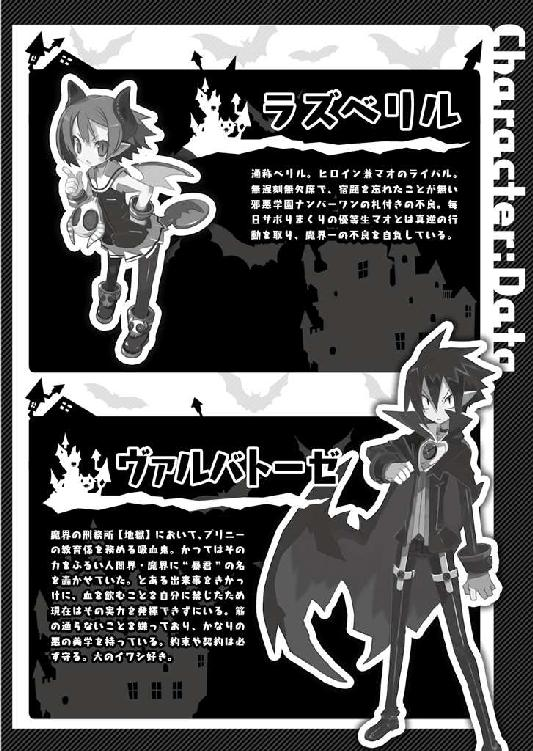

| 魔界戦記ディスガイア～魔王だらけの時空迷子～（桜ノ杜ぶんこ） | |
| 衆堂ジョオ | |
| (2014) | |
桜ノ杜ぶんこ
魔界戦記ディスガイア
〜魔王だらけの時空迷子〜
衆堂ジョオ
「クックックッ......。ハァ〜ッハッハッハッハッ！！！！」
玉座で胸をそらし、思い切り高笑いすると、その声は魔王城全体にこだました。
オレ様の名は、世界でもっとも恐ろしい、偉大なる魔王ラハール。地獄の業火のように赤いマフラーを首に巻き、髪は深淵へと続く恐怖の海のような青色だ。頭のてっぺん付近から跳ねた二本の髪は触覚ではなく、オレ様の美しいキューティクルである。
今、オレ様は非常に機嫌が良かった。どのぐらい機嫌が良いかと言うと、だ。
「悪役はなぜか笑いながら登場する、みたいなセオリー今どき流行らないですよ。殿下」
玉座の背もたれから覗き込んできたのは、いまいち主君たるオレ様への忠誠心の薄い悪魔、エトナだ。
赤い髪は高い位置で左右に縛られており、魔獣の爪のように尖って八方へ跳ねている。体は起伏の無い細身に暗黒色の服をまとっており、背中では小さな悪魔の羽根が時折羽ばたいていた。
そのエトナが、しっぽをくねらせながら茶々を入れてくる。
「誰が悪役だ、誰が。エトナ、お前には主君を敬う気持ちが足らんぞ」
「いいじゃないですか殿下。適当にあしらい易い......じゃなかった、フランクで臣下から慕われる主君ってことですよ」
「おい。だいたいだな、オレ様はすでに魔王なのだから、『殿下』ではなく『陛下』と呼べ。まったく」
こいつはいつまでたってもオレ様を殿下と呼ぶ。とうにオヤジはくたばって、オレ様が魔王になったというのに。
「フフ......だが、まぁ今日は構わん」
エトナの調子の良い発言にも、いつもいつも魔王たるオレ様への敬意が足りない態度にも笑いながら答えることができる。
それほどまでオレ様は機嫌が良いのだ。
「フフフ、クックックッ......！」
思わず笑いがこぼれる。いや、これが笑わずに居られようか！
「どうしたんですか、ラハールさん。今日はやけに機嫌が良さそうですねー。笑うのはとってもいいことですよ。笑顔はすばらしいものです」
垂れ下がったしっぽをぶらぶらさせながら、ぱたぱたと走ってきたのはフロンだ。愚者を惑わす黄金の如き髪がさらりと背中に流れ、身を包む服と頭頂部のリボンは血のように赤い。上にゆったりと羽織った服は死神の顔を思わせる白さだ。
こいつはいつもいつもムズがゆくなるような事を言ってくる。いろいろあって天使見習いから堕天使となり魔界に居座るようになったのだが、天使の頃と変わらずの愛マニアでうるさいヤツなのだ。
「微笑みは人から人へと伝わって、やがてそれは愛に変わるんです。人間も悪魔も天使も手を取り合える愛に満ちた未来に必要なもの、それが笑顔です！」
「フロンちゃん、相変わらず愛トークさせたら語るわねー」
「クックックッ、まぁ良いではないか」
しかし特別に機嫌の良いオレ様は、フロンのしつっこい愛トークにもイラだたないのだ。
なぜか？ それは、ついにオレ様の待ちわびていたものが人間界から今日、届いたからだ。
「ええっ!? 殿下、愛嫌いはどうしたんですか？」
「ラハールさんも愛のすばらしさを理解してくれたんですね！」
「そうではない。ようやく今日、人間どもがこいつを持ってきたのだ。見るがいい！」
そういって、オレ様は手にしたそいつを掲げた。フロンとエトナの視線が手の先に集まる。
魔王城の灯火を受けて煌くリングは、一見ただの金属の腕輪のように見えるだろう。だが、よーく注視すれば彫りこまれたルーンが仄かに光っているのがわかるはずだ。これを見て、こいつがマジック・アイテムの類だとわからぬ奴はマヌケな人間どもの中にも居るまい。
食い入るように見ていたフロンとエトナだったが、やがてエトナにはピンと来たようだ。しっぽの先を尖らせて大きく目と口を見開く。
「あー！ これって、殿下が人間どもを騙して作らせようとしてた例のヤツですね！」
「その通り。アホの人間どもめ、本当に完成させおったぞ」
そうである。この特別製の腕輪は、かねてからオレ様が使い走りの悪魔を通じて人間界のカガクシャとかいう連中に作らせていたものだ。
「騙すなんて、いけないことです！ 事情は知りませんが、人間さんに謝って返しに行きましょう、ラハールさん」
「変わんないねー、フロンちゃん。今はもう堕天使なんだから、もっと裏切り！ ポイ捨て！ どこにでも腐龍参上って書き残す！ とかどんどん悪いことやったらいいのに」
「いいえ。ダメです。エトナさん！ わたしは魔界にも愛があることをすでに知ってるんです。大天使ラミントンさまも、もっと広く魔界に愛を広めるためにわたしを堕天させて、ゆくゆくは」
「うるさいぞ、お前ら！」
まったく、いつもごちゃごちゃとうるさい奴らだ。せっかくの気分の良さが曇ってきたではないか。
「それよりフロン。お前はこいつが何か気にならんのか。お前の好きな科学で作ったすごいアイテムだぞ。まぁ、愛トークを続けるほうが大事なら別に構わんが」
「気になります！ なんですか、それ？ なんなんです？」
「そうですよ、殿下。結局、あたしも何を作らせたのかまでは聞いてないんですから。教えてくださいよ」
ようやくこいつらの興味もこのリングに戻ったようだ。これでいい。
「クックックッ......、そうだろう。気になるだろう」
何しろオレ様は魔王だ。さんざん勿体つけた上でいろいろと説明してやるのは魔王の勤めと昔から相場が決まっている。
「良かろう、冥途の土産に教えてやる！ これは、魔界の魔力と！ 人間界の科学を！ ミックスして作り出した究極の侵略アイテム、その名も魔時次元空間界移動リングだ！」
思い切りふんぞり返りながら言い放つ。
「どうだ、驚いたか！ ハァ〜ッハッハッハッハ!!」
と、いい感じにぺかーとリングを掲げてやったのだが、いまいち反応が悪い。
「本気ゲジゲジかんかんかいかいリング......？ ですか？」
「何です殿下？ その読みにくいの」
「あー、盛り上がらない奴らだな！ そこは説明を聞くにしてもまず驚いて見せんか」
こういう時は、まず「なにィッ!?」とか後ろに立ってるヤツに魔法で稲妻を落としつつ驚くのが普通だというのに。
「つまり、これはだな、『魔王所有の、時間と次元と空間と各界、すべての境界を無視して自由自在に移動できるリング』なのだ。だから、魔時次元空間界移動リングというのだ。わかったか」
説明を聞くと、二人の表情にじわじわと驚きが広がっていくのが分かった。
「すごい！ じゃあそのマジマジゲジゲジを使えば、人間界にも天界にもぱーっと行けちゃうんですね！」
「行けちゃうのだ。どうだ、凄いだろう。魔時次元空間界移動リングだがな」
「おー、それじゃ魔王城から飛んで３０分以上かかる魔界コンビニ、ファミ魔にもすぐ行けますね、殿下！」
「そういうことだ。過去や未来さえ自在に移動できる」
「じゃあカップラーメンを待たずに食べられるじゃないですか！ すごい！」
「まぁそうだが、いちいち上げる使い方がショボいな!!」
とはいえ、こいつらもこのリングが強力無比なマジック・アイテムであることはわかっていることだろう。
しかもこいつは時空ゲートとは違って、座標を指定しなくてもぼんやりしたイメージとフィーリングでなんとなく飛ぶことができるように作らせてある。
その分、ズレもいくらかあるが、魔王たるもの細かいことなど気にしないものだ。
「すなわち、この魔時次元空間界移動リングさえあれば、どんな次元、どんな世界にもすぐさま侵略を仕掛けられるということだ！ ハァ〜ッハッハッハッ！ このラハールさまが宇宙の支配者となる日も近い！」
あの汚い人間界を制服し、小うるさい天界を黙らせ、よくわからん宇宙やイケ好かない神とやらもじきに超魔王ラハールさまの下にひれ伏す時が来る。
これが機嫌良くならずに居られるか。高笑いも何度でも出ようというものだ。
「あれ、でもこれが出来たら時空の渡し守ってのきなみ廃業なんじゃ」
「知るか。そいつは魔界の床のガムはがし専門業にでも転職させればよかろう」
「うわー、さすが殿下。横暴！ 悪魔！」
「クックックッ、そんなに褒めるな。エトナ」
フロンのほうは、このリングの仕組みに興味しんしんのようだった。もともと大きな目をさらに見開き、上から下からためつすがめつリングを見る。垂れた前髪がオレ様の腕に当たってこそばゆかった。
侵略、とか言えばまた愛がどうのこうのと言ってきそうなものだが、こいつは元天使のクセにしばしば自分の趣味興味優先なところがある。なにやら三〜七色くらいのヒーローとかが出てくると、愛も仕事もそっちのけだ。
今回も、腕にはめるリング型で秘密の機能を持った機械のアイテム、というのがフロンの琴線に触れたのだろう。リングを指差しながら、熱心に聞いてくる。
「ラハールさん、これどうやって使うんですか？ 腕にはめて叫んだりするんですか？ フロン・テレポぉーテぇーション！ とか」
「こらこら、勝手にお前のものにするな」
リングを腕にはめ、天に片手を掲げてポーズを決めるフロンからリングを取り上げた。
「試しに使ってみましょうよ、ラハールさん！」
オレ様の手のリングをさらにじろじろと上から下から眺めつつ、目をキラキラ光らせながらフロンが言った。
「いいかフロン。これはオレ様の切り札とも言える侵略兵器だ。ムダに使って、このリングの存在を他の魔界の魔王どもに知らせんほうがよかろう」
「でも殿下。起動テストとかぐらいはしといたほうがいいんじゃないですか？」
エトナに言われて、オレ様は顎を撫でた。
「ふむ、たしかにこいつは実際にどのぐらいのスペックなのか......人間どもの説明書どおりとは限らんしな」
人間どもに悪魔以上に嘘つき揃いのとんでもない連中がいるのは、あの地球勇者とかいう暑苦しい奴らにまつわる騒動でよーく学んだことだ。悪魔を騙すとは、まったくどういう神経をしているのか。
説明書によると安心と品質のメイド・イン・ニポンという話だが、偽装でないとも限らない。
「そうですそうです！ テストですよ、ラハールさん。イザって時に動かないかもしれませんよー、困っちゃいますよー」
オレ様がどうするべきかリングの色々な箇所を改めていると、調子に乗ってフロンがテストを薦めてくる。
ぴこーんと天井を差したしっぽからして、こいつ明らかに自分がリングの機能を見たいだけのようだが......。
やがて、オレ様はリングを自らの手首に装着した。我が魔力に反応し、刻まれたルーンの微光が青から邪悪な血の色へと変わる。
「若干、乗せられている気もするが、一理あるな」
「おおっ、やりますか殿下！」
「楽しみです！」
起動テストはしてみることとしよう。なに、別次元の魔王に知られたとて、それはそれで相手への威圧となる。
武力を示すことで抵抗の意思を摘むというのは、戦略の常道というもの。逆にオレ様に恐れをなして、従属を申し出てくる魔王もいるかもしれんではないか。
というわけで、ためしにそこいらの異世界と適当に繋いで見ることにしようか。
「どこの次元と繋いでやろうか。どうせなら見たことのない世界がよかろう」
少し考えて、オレ様は幼い頃、親父クリチェフスコイから聞いた別魔界の一つを思い出した。まあテストだし、どこでも良いだろう。
「よし、目標をだいたいイメージして......」
「さぁ、ラハール・テレポぉーテぇーション！！！と叫んでください！ かっこいいポーズも決めて！」
「だからそれはいらんと言っているではないか！」
「ちょ、殿下！ もう起動してますよ！」
「おおっ！」
エトナの指摘通り、すでに魔時次元空間界リングは内部の機械が動き出し、科学の回路と魔力の紋様がカチカチと作動音を立て始めていた。リング表面のルーンが中空に光となって浮き出し、高速回転をする。
こいつは装着と念によってスイッチが入るようになっているが、いささか感度が良すぎるようだ。あとで調整ツマミを弄っておかねばなるまい。
説明書によるとリングは次元間のゲートを開くのに十分な空きがある空間に手を向けねばならないと書いてあった。目の前のフロンとエトナが邪魔なので、とりあえず、上のほうを向けてゲートを開いてみることにする。
「見ろ......！ 未知の魔界への門が開くぞ！」
赤い光で宙空に描かれたルーンはいよいよ回転を早め、やがて大きく径を広げると、勢い良く頭上へと飛んだ。
光がはじけ、しばし視力を奪われる。
「わっ、まぶしい！」
「まぶしいです！」
数秒もしないうちに光は収まり、オレ様たちの眼前には空に穿たれた異界への門が現出していた。
空間が丸く切り取られたように開いて、その向こうには馴染みのない空間が見えている。
異なる次元が繋がったのだ。動作テストは完璧だ。
「成功だ、やるではないか。人間ども！」
「でも、どこに繋がったんです？ これ」
「う〜〜ん？ どこかのお部屋ですか？」
三人で頭上の穴を見上げるが、下からのアングルなのでどこに繋がったのか良く分からない。なにやら狭い部屋のように見えるが......。
「ふんふん〜♪ 今日がお前の〜、ラララ命日だ〜♪」
鼻歌のようなものが門の向こうから聞こえた、と思った瞬間、上から何かが落ちてくる！
「おわっ！」
「ひゃっ！」
エトナとフロンは咄嗟に左右に散ると、二人が居た場所、そいつはちょうどオレ様の玉座の真正面に落ちてきたのだった。
小型のヒューマノイドらしいシルエットが落下の勢いで尻餅をついて悪態をつく。
「いたた......。な、なんで脱衣所に落とし穴があるのだ......？」
そいつが言葉を発した。どうやらただのザコモンスターが落ちてきたわけではないようだ。言葉も悠長だし、それなりに知能のある悪魔か？
「なっ!? な......、なんだここは!?」
魔王城の中を見回し、うろたえる。
いきなり暴れ出す様子もないし、オレ様はそいつをまずは観察してみることとした。面白そうな生き物なら、ペットにしてやろう。当然世話はプリニー任せだ。
見た目は、少年悪魔だった。白い髪に黒いメッシュが少々珍しいが、特殊な血を引く魔族なのやもしれん。
衣服は腰に白いタオルを一枚巻いたきりだ。蛮族の類か？
手にしたビンには、真っ白な液体が詰められている。封がなされているため液体はこぼれなかったようだが、何の液体だろうか？
蛮族であることから考えると、狩りの矢に使う毒液でも入っているのだろうか。問題ない。どうせオレ様にくだらん毒など通用しない。
どれ、こいつをもっと調べて、もし新種の悪魔ならオレ様の名前からラハール族とでも名づけてやろう。世界の支配者の名前を種族名に冠されれば、さぞかしこの蛮族も鼻が高いに違いあるまい！
「キサマが別魔界の住人か。オレ様は高名なる宇宙最強の魔王ラハールさまだ！ 謁見の機会を得た幸運を喜ぶがいいぞ。ハァ〜ッハッハッハッ！」
「宇宙最強はさすがに盛り過ぎじゃないですか、殿下？」
「なに、じきに実現することだ。嘘ではない」
「常に向上心を持つことはすばらしいことだと思いますよ、ラハールさん」
「ええいっ！ お前らちょっと黙れ！」
「はーい」「はーい」
こいつらがペラペラと喋っていると、魔王の威厳というものが台無しだ。それ見ろ、蛮族が訝しげにこちらを見ているではないか。
偏狭魔界の蛮族に舐められるなど魔王の名折れである。犬のしつけと同じだ。ここは、今後のためにもはっきりと上下関係を最初に分からせておかねばならん。
「とにかく魔王ラハールさまの前だぞ。そのチンケな毒液を床に置いてひれ伏すがいい、蛮族の少年よ」
バサリとマフラーを翻し、片手には並みの悪魔なら触れただけで消滅する魔王の火を灯した上で、言ってやった。
「誰が蛮族か！ それに毒液じゃなくてこれは牛乳だよ！ 濃厚でおいしい三・六牛乳だ！」
力の差を見せて諭してやってるにもかかわらず、こいつは反抗的な視線でオレ様を睨み返してくる。なんと道理のわからんヤツだ。
何か言ってるが、きっと蛮族の威嚇の叫びとかそういうのだろう。
「殿下、蛮族じゃないっぽいですよ。さっき脱衣所って言ってたじゃないですか。牛乳持ってるし、きっとお風呂あがりだから腰タオルしか巻いてないんですよ」
エトナが耳打ちしてくる。
言われ見ると、風呂上りスタイルにも見える。とはいえ蛮族だろうが湯上りタマゴ肌だろうが、オレ様のほうが偉いのは間違いないのだ。
「なるほど。お前は蛮族ではないのか。だが、この魔王ラハールさまから見れば偏狭魔界の悪魔などみな蛮族も同然！ あらためて、牛乳を置いてひれ伏すがいい！」
「そうです！ 私はお風呂上りはフルーツ牛乳のほうがいいと思います！」
フロンはスルーしておく。
「ひれ伏せだと？ 風呂のあとの純白の牛乳タイムを邪魔されて怒ってるのはこっちのほうだ！」
重ねて言ってやってるのに、聞こうともしない。それどころかこいつ、怒り出したぞ。
「だいたいフルーツ牛乳ってなんだ!? 一〇〇％ジュースか純牛乳かどっちかにしろ！ 半端、半端すぎ！ しかも今はフルーツ牛乳って商品には表記できないんだぞ！ フルーツ牛乳なんて架空の飲み物だ！ お前らこそ全員、五体投地でひれ伏せ！」
「なんだとキサマ！ このラハールさまに対してひれ伏せだと!?」
「アホールだかバカールだか知らないが、今すぐ土下座して『フルーツ牛乳なんか、ヘンな混ぜ物入りですっぱい匂いのする黄ばんだ汁です〜っ』と謝ったら許してやる。でないと永久永遠に許さんぞ！」
血管という血管がビキビキと音を立てる。
フルーツ牛乳のことをどう扱おうが構わんが、このラハールさまを侮辱することは断じて許せん。
怒りに応じ、手の平の炎が大きく燃え上がる。
「あっ、あっ、ケンカはいけませんよ。お二人とも、仲良くしましょう。ほら、ラハールさん手を出して？ 牛乳さんも手を出して？ 手と手をつなげばみんな友達です」
オレ様の手と牛乳蛮族の手をフロンが取ったが、両方から同時に振り払われた。
「ケンカはだめですよ！ 優しさを忘れないでください！ たとえその気持ちが何百回──むぐぐ」
「はい、フロンちゃんはこっちでおとなしくしてましょうねー」
どうにか割って入ろうとするフロンが、エトナに抑えられて脇に退けられる。
これがケンカでなどあるものか。立場のわからん愚かな蛮族に、偉大な魔王たるラハールさまが道理というものを教えてやるのだ。
教示する、ということで、オレ様はどうにか怒りを抑えて、もう一度静かに牛乳に立場の理解を求めた。
「オレ様は寛大な魔王だが、我慢にも限度というものがあるぞ、蛮族。もう一度言う......、ひれ伏して許しを請え」
「そっちこそ全面的にフルーツ牛乳の非を認めてひれ伏せよな！」
オレ様がこれだけ猶予を与えてやっているというのに、話というものがまったく通じない。こいつは本物の野蛮悪魔だ。試験運用早々、このような愚劣な蛮族が住む魔界に門を繋げてしまうとは。
「殿下、もう始末しちゃいましょうよ。鬱陶しいですし」
「......それが良さそうだな」
「始末なんてダメですよ！ ほら手と手をとっむ、むぐぐーっ!?」
「はいはい、フロンちゃんはもうちょっと黙っててねー」
このような野蛮な下級悪魔と会話を試みたこと自体が間違いだったのだ。こいつなら、プリニーどものほうがまだよっぽど話が通じる。
どうやら無駄な時間を過ごしてしまったようだ。エトナの進言通り、この蛮族はさっさと始末してゴミ箱に捨ててしまおう。
それからまた別の魔界へと門を開いてみればよいのだ。
おあつらえ向きに、右手の上にはそこそこに成長した炎があった。こいつにあと少しオレ様の魔力を流し込むと、オレ様の魔王たる証の技、魔王玉となる！ その威力は大悪魔級の一個師団でも漏らしながら散り散りに逃げ出すほどだ！
こんどこそ、こいつに上下関係を教えてやる！
「話の通じんバカには、その罪を身を持って贖わせてやるほかあるまい......」
牙を見せてニヤリと笑うと、炎が急激に膨れ上がり破壊的な力を凝縮した光球となった。
「砕けろ......っ!!」
「なっ!?」
あまりに巨大な魔王玉の迫力に牛乳蛮族は目を剥くが、もう遅い。そのまま、目の前の蛮族向けて────！
「わっ、わわわわわわ、い、いけませーーんっ！」
「ちょっとフロンちゃん!?」
そこに！ エトナの捕縛から脱出したフロンが横合いから突っ込んできて、オレ様に激しくぶつかった！
「ぬおっ!?」
フロンの体当たりで魔王玉の狙いがわずかに逸れる。
「何をする、フロン！」
「ダメです！ いきなり攻撃なんて絶対ダメです！ 話し合えばきっと心が通じます！」
「話し合ってわからんヤツだからこうなったのだろうが！」
「それより殿下、魔王城めっちゃ壊れてるんですけど」
狙いが逸れた魔王玉が魔王の間の壁にブチあたり、プリニーに描かせたオレ様の肖像画が消し炭になった上、魔界の空が非常によく見える大穴が開いてしまっていた。
天井からもパラパラと魔界石材のカケラが落ちてくる。
「あたしは知りませんよー。修理はフロンちゃんとプリニー隊でやって下さいねー」
「人......じゃなくて悪魔ひとりの命が助かったのなら、安いものじゃないですか。大丈夫です。壁の修理はわたしががんばってやります」
「当たり前だ！ 修理代はお前のおやつ代から出すからな！ フロンは向こう一〇〇年間おやつ抜きだ！」
「えーっ!?」
ばたばたと揉めていたが、ふと気づけば牛乳蛮族がまだ目の前に立っているではないか。
「ほう......！」
こいつ、あれだけの規模の攻撃がすぐ側を掠めたにもかかわらず、まだこっちをまっすぐに睨んでいる。相当に肝が据わっているのか、ただのバカなのかどちらだ？
エトナがめんどくさそうに愛用の槍を構える。
「じゃあもうこいつはあたしがちゃちゃっと始末しちゃいますよ。だから、あたしのおやつ代からは修理代取らないでくださいね」
しっぽをぷらぷらと振りながら無造作にエトナが蛮族に近づいていく。
「待て、エトナ」
「え、殿下？」
それをオレ様は制した。違和感があったのだ。
エトナを後ろへ回らせ、オレ様が直々に玉座から立ち上がる。目の前の異境の悪魔を、目を細めて見据えた。
まさか？
疑念である。先ほどオレ様の放った魔王玉、フロンが邪魔をしたからはずれたと思ったが、そうでは無いようにも見えたのだ。
こいつ自身が......防いだようにも。
「謝る気は無いんだな。じゃあ、もう絶対永久永遠に許さんぞ」
傲慢な物言いにも、伴う自信があったということか？ まだそう判断するのは早計かもしれない。
オレ様も立ち上がってみると、牛乳蛮族はだいたいオレ様と同じほどの背丈だ。油断なくこいつの所作を見る。
後ろの二人も、場の緊張感を感じ取ったのか固唾を呑んで見守っていた。
「クックックッ、許さなければどうするというのだ？」
オレ様はバサリと血の色のマフラーをなびかせ、魔王の眼光を持って不遜な蛮族を睥睨する。
すると、俄かに蛮族の手ににわかに剣呑な魔力が集まるのが感じられた。こいつ、何をする気だ!?
「こうするのだ！ くらえ！」
「むっ！」
奴が横凪ぎに手を振るうと、鋭く研ぎ澄まされた刃のような魔力が飛来する！
「......くだらん」
目の前まで飛んできたしょぼい光弾を、造作もなく片手で握りつぶす。期待外れとはこのことだ。
「エトナ！ フロンを抑えておけ」
「はーい、わかりました殿下ー」
「ああっ、ダメですよ！」
改めてオレ様は片手に魔力を集め、凶暴な唸りを上げる巨大な魔王玉を作り上げる。
今度こそ間違いなくブチ当ててやろう。期待ほどではなかったが、一瞬感じたあの魔力の強さ、多少の素質はあるやつだ。うむ、まともに叩きつけても死にはするまい。
こいつを喰らって生きていたら、魔王城の壁修理工として一生無給で働く栄誉をやろうではないか。
「今度こそ格の違いというものを教えてやる！ ハァ〜ッハッハッハッ！ 我が魔王玉の威力をたっぷり味わうが良い！」
邪悪な哄笑とともにさらに禍々しき魔力を流し込み、魔王玉を先ほどのものより一際大きく膨れ上がらせる。
「喰らえっ！ 愚か者がっ!!」
二度目の魔王玉を放とうとしたまさにその瞬間、大きな音を立てて魔王の間の扉が叩き開けられた。
「なにごとッスか！ なにごとッスか！」
「あーっ！ 城がぶっ壊れてるッス！」
「修理代でオレたちの給料がまた削られるッス！」
「また殿下がクシャミの拍子に魔王玉ぶっ放したッスか！」
「こないだやっと雨漏り修繕したところなのに！」
「それよりオレの自信作の肖像画が無くなってるッス！」
どかどかと大量になだれ込んできたのは、ペンギンのできそこないのような下級悪魔、プリニーたちだ。一瞬で魔王の間を埋め尽くし、あっちこっちでギャーギャーと騒ぎ立てる。
「ええい、退け！ 退かんか！」
プリニーどもが邪魔で魔王玉を放てんではないか！ こうなったらもう面倒くさい、こいつらごと......！
「砕けろっ!!」
同時刻の、ここは魔界の荒野。見上げれば、邪悪そのものと言った威容でそびえる魔王城が天を突いているのがよく見える。
その天守から、激しい爆発とともにもうもうたる黒煙が天へと立ち上った。魔王城に開いた大穴から、プリニーが四方八方に吹っ飛んでいく。
先代魔王のクリチェフスコイさまが亡くなり、次代ラハールが魔王の間に住まうようになってから、こうした爆発はしばしば見られるという。
そんなとき、とくに魔王の部下というわけでもない一般の下級悪魔たちは花火大会の如く爆発を眺めながら、魔界産の殺ポロビールで楽しく一杯やるのだそうだ。
二発目の魔王玉で、本格的に魔王の間はぶっ壊れていた。まだまだプリニーはうじゃうじゃいるが、これでようやくヤツに狙いを定められるはず。
「ああ、プリニーさんがいっぱいどこかへ吹き飛んで行っちゃいました。あとで拾い集めないと......」
「邪魔なプリニーどもは退けたが、肝心のヤツはどこだ！」
「あっ、あそこですよ殿下！」
指の向いた先はさらに大きくなった魔王城の壁穴だ。腰タオル一枚の牛乳悪魔は瓦礫に片手を付き、いつのまにか開封した牛乳を一気飲みする。
「僕の漆黒の呪いの恐ろしさ、思い知れ！ さらば！」
「待て！」
捨てゼリフを吐くなり、そいつは壁の穴から魔王城の外、空へと身を躍らせる。逃がすか！
「ええい、退けプリニーども！」
オレ様はプリニーをボウリングのピンのように弾き飛ばして追う。
しかし、駆け寄って壁の大穴から外を見てもヤツの姿はすでに無かった。
「く......、逃がしたか」
「あらら。殿下、どうします？ 追います？」
隣にエトナが並んできて、一緒に魔王城の外を眺めた。
追うか？ たしかにこの魔王ラハールに最大限の無礼を働いた不遜の輩だ。魔王としての威厳を下っ端悪魔どもに示すためにも、ひっ捕まえて罰を与えねばならないかもしれん。
だが、オレ様にはヤツの去り際の言葉がなにかひっかかっていたのだ。
『僕の漆黒の呪いの恐ろしさ、思い知れ！ さらば！』
あの者について、オレ様はなにかを知っているような......？
「捕まえて、プリニー以下のフロンちゃん以下の魔界の最低最悪の下僕としてこき使ったりしなくていいんですか？ ついでに壁の修理もやらせて」
「わたしに部下ができるんですか!? わー！」
エトナがニヤリと小悪魔的な笑みを浮かべ、フロンは無邪気にキラキラと目を輝かせる。
オレ様はしばし記憶を探ってみたが、やはりヤツのことを思い出すことはできなかった。何かの記憶違いだろうか？
結局オレ様はすぐに気分を切り替え、くだらん異境の蛮族のことはさっさと忘れることにした。
「ふん......、放っておけ」
無駄なことに頭脳と魔力を使ってしまった。不快感を露にし、オレ様は玉座に腰掛ける。
「えー、わたし部下欲しいです」
「やっぱりフロンちゃん堕天使だわ」
腕にはめられたリングに視線を落とす。このリング自身は間違いなく有用な侵略兵器だ。繋げる先さえもっと厳選すれば、以後はこのようなこともあるまい。
大穴の開いた魔王の間に、乾いた魔界の風が吹き抜けた。
何か暖かいものに包まれていた。それが何なのか、もはや思い出すことは難しいが、心地良いものだ。
思い出せないのは、忘れようとしたからかもしれない。
どうして忘れようとしたのか？ 忘れたいものならば、それは不快なものではないのか。
いや、今もまだそれは、確かにこの身に心地よかった。
きっとそれは、ぬくもり、とか呼ばれるものだったと思う。
「ラハール」
ひどく懐かしい声が名を呼ぶ。
優しく、おだやかな声。すぐに声の主は亡き先代魔王、クリチェフスコイのものだと気がついた。
「ラハール」
今度はもっと遠い声だった。
遠くから聞こえているのではない。むしろ声はクリチェフスコイよりも側で聞こえた。記憶の彼方にあった声だということだ。
記憶を掘り起こせば、声の正体がわかるだろうか？ そうすることになぜか躊躇いがあった。しかし、あまりに耳に心地よい暖かい声に誘われて、己の底の底へと意識を送る。とうに忘れ去ったはずの古い記憶が堆積する場所へと。
やがて、声の主を思い出した。......母だ。
思い出した瞬間、自分の身を包む「ぬくもり」がなんであるかについても気がついた。
まだ幼い頃の自分は、母の胸に抱かれていたのだ。
「ラハール」
「ラハール」
亡き両親が名を呼び、母の手が優しく触覚的なキューティクルを撫でる。
しかしどうしたことか、幼い自分が母の胸に抱かれながら、現在の自分も傍らに立っていた。
現在の姿のオレ様、魔王ラハールは腕組みをし、幼い自分を見ている。幼い自分が短い手を母に伸ばし、甘える姿に苛立つ。
なにがぬくもりだ！
「オレ様はもはや魔王となったのだ。過去などいらん！」
オレ様は片手を振るい、幼い自分を消し去ってしまおうとする。魔王ラハールは二人も必要ない。
力を帯びた一撃は確実に幼い自分に届いたはずだが、手ごたえは無かった。
それどころか、いつのまにかオレ様自身までが母の胸に抱かれているではないか。隣で、幼い自分が無邪気に笑う。
「ラハール、ほら、笑って」
「やめろ、やめろ......！」
めちゃくちゃに暴れるが、抜け出せない。柔和な笑みを見せるクリチェフスコイの顔面に魔力弾を撃ち込んでもすり抜けるばかりだ。
「ラハールは本当に元気な子だな」
「ええ、この子なら将来は立派に魔界を」
「やめろーーーっ!!」
叫び声を上げながら目を開ければ、ベッドで汗まみれになった自分がいるばかりだった。あたりはいつもの魔王城の寝室で、カーテンが風に揺れているだけである。
「夢か......。不快な夢を見てしまったな」
まったく朝からオレ様は最悪な気分だ。昨日のヤツのことといい、こう連続で不快なことが起こるとは。まったく、まったくついていない。
どうして今さらあんな夢を見てしまったというのか。
確かに、フロンと天界の連中に関わる一件で、多少は......ほんの多少はオレ様も愛とやらを認めた部分はある。だが、だからと言って母のぬくもりを欲するような夢など、魔王たる者が見てしまうなど！
魔王ならば魔王らしく、もっとふさわしい夢があるはずだろう。徹底的に世界を破壊しまくる夢とか、ドクロの玉座で高笑いする夢とか、挑み来る勇者相手に二回攻撃したりする夢とか！
「むう、イライラするではないか......！ だいたい何なのだ、このなにやら柔らかくていい匂いのするものは。こんなものを寝床に置いているから妙な夢を見てしまうのだ」
手の届く範囲にある、やわやわと柔らかいものをもふもふと掴みながら悪態をつく。
ところで、これは一体なんだ？
「..................？」
もう一度感触を確かめてみる。なにやら柔らかくて暖かい。それに、フロンやエトナにちょっと似た匂いがするような気がする。
もしや寝ぼけてオレ様のベッドに入り込んできたのか。エトナはまだしも、あの間抜けな駄天使ならやりかねん。
仮にもオレ様はこの魔界を統べる魔王だぞ。どいつもこいつも、魔王を何だと思っているのだ。ベッドから突き落としてやろう。
両手でぐいぐい押してみる。むにむにと指が沈み込んで、うまく突き落とすことができない。
「フン。なんだこのむにむにと柔らかいものは！ ええい、さっさとオレ様のベッドから出て行け！」
怒鳴りつけて、布団を蹴り上げる。すると。
「ん、んぅ......」
そこにはムチムチした肉体の女が！！！！
「おわァッ！！？？」
しかもオレ様が両手でぐいぐい掴んでいるのは、ムチムチのムチムチ部分ではないか！！！！！
「ギャーーーーーーーッ！！！！！！」
悲鳴を上げてオレ様はベッドから飛び上がり、五メートル以上バックジャンプして背中から壁に激突した。壁から飾ってあった剣やら魔王の紋章やらが落ちるが、気にする余裕もない。
わなわなと震えながら自分の両手を見る。こ、この手が、ム、ムチムチを掴んで......！
「お、おお......おえェ......」
オレ様が吐き気を堪えている間に、叫び声でムチムチ女が目を覚ましたようだ。そいつがベッドから体を起こすと、たっぷりとボリュームのあるムチムチ部分がゆっさりと揺れる。
「うごぇぇ......っ」
必死に両手で口元を押さえるが、昨日の夕食が喉元まであがってくる。
「んむ......ふあ......ぁぁ。なんだ、もう朝か......？」
ムチムチ女が目をこすりつつ、一つあくびをした。
その姿！
そいつの姿は、女となったオレ様自身ではないかっ!!
「ギャーーーーーーーーーーーッ！！！！！！！！！」
朝の魔王城中にラハールの絶叫が木霊する。
何事かとプリニーたちが一斉に顔を上げる。準備をしていたショップ店員がアイテムを取り落とす。病院のナースが薬品を患者の頭にこぼす。クビになる運命を知らぬ時空の渡し守もおどろいて蹴躓く。プレネールさんもぽかんと口を開けた。
洗面所で顔を見合わせたのは、朝の髪と肌のお手入れをしていたフロンとエトナだ。
「殿下!?」
「ラハールさん!?」
オレ様が青ざめてふらふらと倒れ掛かっていたところに、エトナとフロンが扉を蹴り倒して躍りこんでくる。
「殿下！ いったい何があったんですか!?」
「朝から大声で叫んじゃ近所迷惑ですよ、ラハールさん」
ぷるぷると震える手で、オレ様はベッドの上を指差す。
「ん？」
指差されたもう一人のオレ様が不思議そうに自分を指差した。たったそれだけの僅かな所作で、盛大にムチムチが揺れ動く！
「おげ、お、おェ......っ」
地面に四つんばいになり、苦しみにのたうち廻る。顔色は魔界タヌキネコよりも真っ青になって、全身がガタガタ震えていることだろう。
こいつが何なのかとか、どうしてここにいるのかとか考える余裕などまったくない。
「わっ、ラハールさんのお姉さんか誰かですか？ はじめまして。わたしはフロンと申します」
「そんなの殿下にいないわよ!? でもいったい何者!?」
のんきに自己紹介するフロンにエトナが鋭いツッコミを入れた。
エトナの問いにムチムチが答える。ああ、もう！ ちょっと動くだけでムチムチがムチムチして、もう見ていることさえできん！
「ん、オレ様はラハールだが......？」
こ、こいつ、ラハールと名乗ったか!? こいつはオレ様の分身だとでも言うのか!?
「まぁ、あなたもラハールさんなんですか？ それはすごい偶然ですねー。ここで這いつくばってオエオエ言ってるのもラハールさんなんですよ」
「キサマ、フロンさんだったか。クックックッ、どうぞよろしくお願いしようではないか」
「どもども。こちらこそよろしくお願いします」
フロンとムチムチが、畏まって互いに頭を下げる。それから妙に和やかな世間話が始まった。
「しかし同じ名とは、それはまた面白い偶然ではないか」
「そうですよねー。なんだか姿も似てますよね。触覚のあたりとかそっくりです」
「ハァ〜ッハッハッハッ！ まったくだな。ときに、フロンさんは見たところ堕天使のようだが？」
「前まで天使見習いだったんですけどね。ちょっといろいろあって、堕天使として魔王城にご厄介になりつつ、魔界にも愛を広めたいと思っているんですよ」
「なるほどそれはすばらしいではないか。クックックッ、このオレ様もみなが平和に暮らしていける魔界になることを祈っておいてやろう！」
「話がわかりますねー、ラハールさん！」
......あまりのムチムチの苦しさに、オレ様としたことが、フロンとムチムチの世間話を放置してしまっていた！
ムチムチと直接対峙するとダメージが激しいので、オレ様はエトナに対処を命じることにする。どうしてエトナまでくだらん世間話を放置しているのだ。
「エ......エトナ、そいつらをどうにかしろ」
「......おっきい............ハッ!?」
オレ様の言葉で、「何か」をモノ欲しそうに見ていたエトナが正気に戻る。
「え、えーっと！ ここは恐れ多くも、一応、魔王......っぽい？ みたいな感じのラハール殿下の寝室よ！ あんたはいったい何者なの？」
「ほほう、キサマはエトナというのか。オレ様はラハールだ。名乗りが遅れた非礼を詫びてやろうではないか。大変申し訳なかったぞ！」
「は、はぁ、それはどうもご丁寧に......」
「いえいえ、こちらこそだ」
エトナまでもオレ様の名を名乗るムチムチの雰囲気に釣り込まれ、互いに深く一礼を交わしてしまう。
このままではいかん。こんなおぞましいムチムチと馴染まれては、オレ様の生命すら危うい。
「う、うぐぐ......！」
苦しみを堪えて、オレ様はよろめきつつどうにか立ち上がった。生まれたての魔界シカのような頼りない足腰だが、オレ様が立ち向かわねば誰も頼りにならんのだ。
そんなブザマなオレ様を見て、ムチムチが笑う。
「キサマがラハールか。オレ様の名もラハール！ よろしくお願いしてやろう！ 魔王のお勤め毎日お疲れさまだ！」
態度がデカいのか腰が低いのかよくわからない態度で、ムチムチはベッドの上から降りてくる。
「キサマ、具合が悪いようだが大丈夫か？」
そう言ってムチムチはオレ様に歩み寄ると、後ろから労わるように抱きついてきた。
ゆさゆさしたムチムチが背中に押し付けられて、汗ばんだ柔らかい感触が......！
「う、失せろーーっ！」
気がついたときには、オレ様はありったけの魔力をめちゃくちゃに乱射していた。
寝室の壁とともに、ムチムチ女はどこかへ吹っ飛んでいく。
その後、心配したフロンと無理やり付き合わされたエトナが飛んでいったムチムチ女の行方を捜して（ついでに昨日ふっ飛ばしたままのプリニーたちも拾いに）軽く魔王城の周りを軽く探して廻った。
しかし女の行方はわからず、最近は殺ポロビールがよく売れるといういらない情報だけが手に入ったという。
その後、しばらく経過して。
どうにかダメージを回復したオレ様は、まだ若干青ざめた顔ながら玉座についていた。食欲が失せてしまって、朝食も食べられなかったが、先に対処せねばならん目的がある。
フロンとエトナ、二人も顔を付き合わせ、先ほどのアレは一体何者なのか？ という会議である。
頭を振って忌まわしい記憶を振り払い、議題を掲げる。
「ヤツは何なのだ！ オレ様は......オレ様は......、あのムチムチに触って......うッ、うぉぇ......っ」
「大丈夫ですか、ラハールさん」
言い切る前に気持ち悪さが戻ってきた。フロンに背中をさすられつつ、どうにかこうにか堪える。
「ムチムチに触ったなんて、まっ、殿下ったらいやらしい♪」
しっぽをくねらせ、エトナはニヤニヤと笑っていた。こいつ、確実にオレ様が苦しむのを楽しんでいるな。壁の修理代は、エトナのおやつ代からも徴収することに決定だ。
「あの人もラハールさんなんですよね。でも、ラハールさんの親戚とかじゃないんですよね？」
口元に指を一本当ててフロンが首を傾げる。
そんなわけがあるまい。オレ様には家族などいないし、親戚家族だとしても同じ名前というのはおかしいだろう。
そこで考える。フロンが一番、あのムチムチと長く話をしていた。オレ様が気づかなかったことで、何か他にも気づいたところがあるかもしれない。
それがヤツの正体のヒントになるかもしれん。
「オレ様に親戚などおらん。フロン、他にヤツについて気づいたことはないか？」
「うーん、喋り方もラハールさんソックリでしたよ。ハァ〜ッハッハッハッ！ とか」
「ふむ......」
姿が似ていて、名前も同じ。その上喋り方まで似ているとなると、ただの偶然とは考え難くなる。
「じゃあ殿下の分身とかですかね？ 前にも十人位に分身した別魔界の魔王とかいたじゃないですか」
「分身か。そういう可能性もある。だが、どうしてそんなモノがオレ様の眠っている間に出てきたというのだ」
さっぱりわからない。相手そっくりに化ける悪魔などというのもいるというが、そういう悪魔の仕業だった場合、今度はムチムチになっていたのがおかしい。ぜんぜんオレ様に似ていないではないか。
何か原因があるはずだ。
オレ様は、あのムチムチ女の出現までに起きたここ最近のできごとを一つ一つ思い返してみる。
ひっかかるのは当然、あの牛乳蛮族の言った「黒き呪い」だ。
「異魔界の蛮族の放った、あの小さな光弾。あれが原因か......？」
だとすればなんと恐ろしいヤツだ。オレ様の死ぬほど嫌いなものを的確に作り出す呪いとは。
「他には何かあるか」
もう少し、エトナとフロンに聞いてみる。あの時のオレ様は相手を観察するどころではなかったから、聞くしかないのだ。
しっぽをくねくねと動かしつつ、エトナは首をひねる。
「そうですねー。おっきかった......いやいや！ 雰囲気が殿下とは違いましたよ」
それを聞くと、フロンもしっぽをピンと立てて反応した。
「たしかにそうでした！ あっちのラハールさんは、言葉づかいはラハールさんと同じで乱暴でしたけど、こう、優しくて愛にあふれてる感じで」
「何ぃ......！」
「あっ、あっ、ラハールさんも愛があるとわたしは思いますよ？」
「誰もそんなことは聞いておらん！」
気になるのは、雰囲気が違った、というところだ。愛マニアのフロンが「愛にあふれてる」とまで言うのだから、ムチムチの分身はその通りだったのだろう。
あの見た目がムチムチなだけでも最悪なのに、オレ様と同じ名前で愛にあふれているなどと、最悪にも程がある！
「でも、見事に殿下と正反対の分身でしたねー。利口そうで」
「あっちのラハールさんがラハールさんの正反対の分身なんですか？ でもこっちのラハールさんもあっちのラハールさんも」
「ややこしいな！ よし、ヤツをＭラハールと名付ける」
Ｍはムチムチのエムだ。ムチムチなど、口にするのもおぞましい。Ｍで十分ということだ。
「エムラハールですか。なかなか魔王っぽいですね。で、どうするんです？ 殿下」
だいたい答えは聞かずとも分かっているという風で、一応エトナが確認を入れてくる。もちろんオレ様の答えは決まっている。
「ひっ捕らえるぞ！ オレ様の分身が愛だの優しさだの許しがたい。ましてＭな体をしているなど！」
「まっ、Ｍなカラダなんて殿下なんだかいやらしいですね！」
「Ｍがなんでいやらしいんですか？ エトナさん？」
「ふふふ、フロンちゃんもいずれ分かると思うわよ」
「えーっ、教えてくださいよー」
本当にぺちゃくちゃとかしましいヤツらだ。だが、こいつらはＭラハールのようにムチムチしていないのでそこは良い。
「うるさい、行くぞエトナ。フロン。一刻も早くＭラハールを捕らえ、分身なら元通りオレ様に吸収し消し去るのだ」
オレ様に呪いをかけたかもしれんあの牛乳悪魔も気になるが、ともかくまずはＭラハールだ。
オレ様はマフラーを翻し、Ｍラハールを捕らえるべく出陣する。後ろにはエトナとフロンが続いた。
「Ｍラハールちゃんか......。あっちの方が殿下より扱い易そうねえ。いっそあっちを助ける？」
「何か言ったかエトナ！」
「いえ、なーんにも！ ぴゅ〜ぴゅ〜♪」
忠誠心の低い部下が口笛を吹く。
「わたしも分離してみたいです！ きっと男フロンは宇宙刑事が似合いますよー。フロン・ダイナミック!! とか言って」
ヒーローオタクの駄天使が妄想を語る。
どうにも頼りない二人だが、とりあえずお供はこいつらだけで良かろう。準備をする時間、一秒とて惜しい。
あんなものがオレ様の分身として活動しているなど、考えるだけでガマンがならんのだ！
魔王城を出て、オレ様たちはＭラハールの行方を追う。周辺の聞き込みはすでに終わっているので、プリニー隊も使って広域の調査をせねばならない。
魔界ピクニックの名所からショッピングストリート、心霊スポットや自殺の名所に他殺の名所まで、くまなくヤツの消息を追っての調査が行われる。そこいらじゅうにいる下級悪魔に、片っ端から当たっていくローラー作戦だ。
うろうろと探し回るうちに、オレ様たちはいけにえ横町までやって来ていた。いつも活気のあるこの通りは、店舗を経営する悪魔たちの邪悪な客引きの声がやかましい。
フロンとエトナもしばしば買い物にやって来る場所なので、普段なら数々のファンシーグッズやスイーツの類に目を輝かせる所なのだが、今日はもうすっかり疲れ切っているようで、滅多に入荷されないという限定スイーツ「激甘溶岩プリン」が残っているのを見ても、二人ともしっぽの先すら持ちあがらない。
「殿下ー、もう疲れましたよ」
「へとへとですー」
「気配とか感じ取れないんですか？ あっちも魔王ですし」
「それが気配が無いのだ。オレ様の分身ならばオレ様と同じ格の魔王のはず。魔界全体にプレッシャーが及ぶはずなのだが」
「おかしいですね。もうどこかに行っちゃったんでしょうか」
どれだけ探ってみてもそれらしい気配は感じられない。姿形を似せただけで、オレ様のような魔力は持っていないということか？
最初に対峙したときはそれどころではなく、どういった感じの魔力を持っているか憶えていないのが探しにくい一因でもある。
「あ、あの方たちに聞いてみましょう！」
オレ様が改めて思案を巡らせていると、フロンが旅行者らしい三人組を見つけて話を聞きに行っていた。
「ふむ。すでにヤツがこの魔界を脱出しているのなら、旅行者に聞くのもいいかもしれんな」
下級悪魔はともかく、それなりの力を持つ者なら魔王のプレッシャーを感じられる者もそこそこには存在している。
旅行の最中にヤツの存在を感じたか尋ねれば、捜索の足がかりぐらいにはなるかもしれん。
「わたし、堕天使をやってるフロンと申します。えーっと、かくかくしかじかなんですよ。ご存知ないですか？」
「こんにちは。アーチャーのあーちゃんです。こっちは僧侶のナイナイ、こっちが魔法使いのぽこ」
「ああ、これはどうもご丁寧に」
三人組の旅行者にフロンが尋ねる。持ち物の類を見た感じでは、三人はそれなりに長い期間の旅をしているようだ。別魔界の名産品なども荷物の中に見える。
まず一人目のアーチャーが首を傾げた。こいつ、体があまりにもまっ平ら過ぎるが、服の胸のところはどうやってくっついているのだろう。貼り付けてるのか？
「うーん、ナイナイは気づいた？」
次に前髪で目を隠した僧侶に話を振る。この姿をした僧侶は、一見少女だが実は男であると聞いたことがある。僧侶が率先して性の風紀を乱すとはなかなかに見上げた悪魔ぶりと言えよう。
「いえ......。そういうのは、ぽこのほうが」
最後の三人目は魔法使いだ。こいつが一番期待できる。女魔法使いというのは能天気そうな見た目だが、実際能天気である。しかし頭につけたリボンで情報が補助されているので、基本以上の実力があるのだ。
それに魔法を扱うものは、魔力を感じ取る能力にも長けていることが多い。
「私もわかんなかったの」
しかし結局、こいつも知らなかった。何も収穫は得られなかったということだ。
羽を揺らしてフロンが頭を下げる。
「そうですかー。ありがとうございました」
使えん奴らめ。Ｍラハールのことを知らんならもう用はない。
「役立たずどもめ。おい、フロン！ 行くぞ」
やむを得ん、ここいらで休憩を入れてメシにするか。
役に立たない旅行者どもにぞんざいな一瞥をくれて、歩き出す。
Ｍラハールのヤツがあのムチムチボディで今もうろうろしてると思うとゾッとするが、見つからんものは仕方が無い。
「プリニーの作る食事にも飽きてきたところだ。今日は、このいけにえ横町の店に魔王への貢物を片っ端から差し出させ、食事としてやろうではないか。ハァ〜ッハッハッハッ！」
「殿下、イカスー！ あたしはスイーツ系を重点的に貢いで貰おっかな」
「食べ放題ですか!? それではわたしはかにみそと、きむちと、なるとと......！」
バタバタと店の奥に引っ込もうとする店主たちを、オレ様の魔王の睨みで引き止める。クックックッ、楽しい昼食になりそうではないか。
「あっ、フロンさん！」
そこに、先ほどの旅行者たちが戻ってきた。
「はい、フロンさんです。どうしたんです？」
「そういえば、そっちの人みたいな触覚つけた女の人を見たの思い出したの！」
アーチャー女がオレ様を指差した。
「触覚ではない！ ......だが、オレ様と同じキューティクルの女を見たというのは本当か」
言って、頭に二本ぴょんと跳ねたオレ様のチャーム・ポイントを示してみせる。
三人はそれを見ると、全員が勢いよく頷いた。よく知っているようだ。
「見た見た。もうすごいムチムチの。ね、ぽこ」
「うん。ゆっさゆっさしてたの」
「レモン一〇個分のボリューム......」
三人組が口々にムチムチの描写を行う。オレ様の脳裏にも、忌まわしいイメージがむくむくと蘇って来た。話を聞いているだけでこの不快感、間違いあるまい。
「そいつだ！ なんでそれを早く言わんのだ！」
「そいつだそうです！ やりましたね」
「だってフロンさんには『かくかくしかじか』と言われただけだったので」
本当にそれしか言わなかっただと!?
聞き込みは主にフロンに任せていたが、こいつ今までどういう聞き込みをしてたのだ？ そもそも今までの聞き込みに意味があったのか!?
「で、見たってどこなの？」
要領良く、エトナが質問を次ぐ。
「ええっと観光ガイドによると......、ゲヘナの海ってところ、かな？」
ゲヘナの海か！
プリニーどもに探索を命じてあったはずだが、何しろ暑いところだ、ヤツら、面倒がって適当に切り上げて帰ってきたに違いない。
壁の修理代もあることだし、プリニーどもは向こう三週間はメシ抜きだ！ 水すらやらん！
「よし、では行くぞ！ 今すぐヤツを捕まえに行くのだ」
「えっ、かにみそは？」
「あ、待って欲しいの。なんか腕輪が光ってどっかに消えちゃったの。その人」
「腕輪だと！」
腕輪が光って消えたというと、思い出すのは......当然こいつだ。オレ様は、ついこの前に人間界から届けさせたマジック・アイテムの『魔時次元空間界移動リング』を取り出してみる。
「こんな感じの腕輪か？」
「そうそう、それ！ 一緒。ね？」
「コクコク......」
「うんうんの」
三人組は代わる代わるリングを見て、みな頷く。見間違いではないようだな。
そもそも、空間を移動できるリングのアイテムなどそうそうあるものではない。でなければさまざまな悪魔が、時空の渡し守などというものにいちいち頼って移動するわけがない。
間違いでないとなると、これは問題だった。
「こいつはマズイことになったかも知れんぞ」
「かにみそはおいしいですよ？」
オレ様の渋い表情を見て、エトナも真面目な顔を作る。とりあえず、今はフロンの相手をしてやれる状況ではなかった。
「殿下が分裂したときに、そのリングも一緒に分裂したってことですか？ そりゃ確かにマズイですよ。だってどこでも行けちゃうんですよね？ それ」
「その通りだ。非っ常にマズイ」
Ｍラハールがこのリングを持っている理由は、エトナの推測が一番考えられるケースだろう。
よくよく考えれば最初から予測できたことだ。なにしろヤツはオレ様と同じマフラーや衣服を纏っていたのだから。
ん？ 待てよ？ じゃああのムチムチを覆ってた胸当てはどこから出てきたのだ？
......オレ様にもわからぬ世界の複雑な事情というのがあるのだろう。これについては気にしないことにしておく。
「あ、あと、私たち今ちょっと迷子で故郷に帰れなくなってて」
「キノコっぽい魔王が......支配してる魔界......」
「ん？ お前らのことなど知らん。他を当たれ」
旅行者がまだ何か言おうとするのをオレ様は黙らせようとしたが、次いだ言葉でそいつらは興味深いことを言った。
「ちゃんとガイドに載ってる座標を言って時空の渡し守に飛ばして貰ってるの。でも、何回飛んでもぜんぜんちゃんとした次元に行けないの。誰か、なんでか知らないの？」
次元移動がうまくいかない。
確かに時空の渡し守は時折、失敗もするし、時空ゲートも不調になったりはする。だが、何度繰り返してもというのはさすがに滅多に無いことだ。
何かが起こっていると考えたほうがいい。その原因は、もちろんヤツにある。
「それは、魔時次元空間界移動リングの乱用のせいだな」
Ｍラハールがリングを使って、次から次へと次元と空間を跳躍している。そのため、元からあった時空ゲートに不具合が生じているのだろう。
このリングを使って他の者の移動を邪魔できる利用法を知ったのは良い情報だが、ヤツがそれほど頻繁に移動を繰り返しているというのは最低最悪の事態ではないか！
世界のどこにでも自由自在に移動できる相手を、どうやって捕まえろというのだ。しかも、このままではオレ様のあんな姿が世界中に晒されてしまう！
迷子どもの話を聞いてからオレ様たちはもう一度、ここで聞き込みを始めた。
今度はフロンに任せきりにせず、しっかりとオレ様に似ているだのキューティクルだのムチムチだのの特徴を説明しながら聞き込み回ったのだ。
すると、このいけにえ横町でもいくつかの目撃情報を聞くことが出来た。
それどころかプリニーや下級悪魔どもがこぞってあのＭラハールのウワサをしているではないか。いったいフロンは何をやっていたのだ？
下級悪魔ども曰く。
「荒れた花壇を整えてたッス！」
「その気持ち分かります。お花は心が洗われますよね」
「ヘアブラシを貸してもらいました！」
「ゾンちゃんいつも髪型こだわってるしねー」
「ほつれたプリニー皮を繕ってもらったッス！」
「そんなものダクトテープでも貼っておけ」
「落としたコンタクトを一緒に探してくれました！」
「えっ、僧侶さん!? 目開いた!? 開いたの!?」
「カップメンに入ってる『こちら側のどこからでも切れます』を開けてもらったッス！」
「悪魔ならそれぐらい噛み千切れ！」
「野良犬にエサをやってるのを見ましたよ！」
「ふぅん、野良犬にエサねえ......」
このような有様だ。ヤツは早くもそこかしこで親切を施し、慈愛を振り撒き、善行を積み重ねていた。
中にはＭラハールを「聖母」とまで呼ぶ連中もいたほどだ。もちろん全員、オレ様が力づくで教育を施してやった。
「それにしても、ヤツが出て行ってからまだ半日程度だ。いくらなんでもいろいろこなし過ぎではないか？」
「何言ってるんです、殿下。あのリング、時間も移動できるって言ってたじゃないですか」
「おおっ!?」
とすると、Ｍラハールのヤツは時間を縦横無尽に移動して、すでに大量の善行をやってしまったということか！
「なんというヤツだ......！ このオレ様をここまで苦しめるとは。悪魔か！」
「ラハールさんの分身だから悪魔ですよ？」
「ええい、あんなオレ様に似ても似つかないヤツが、分身など！」
まったく、まったく！ 腹立たしいことこの上ない！
こうなったらオレ様も過去に遡り、世界各地で極悪非道そのものの悪行の限りを尽くしてやる......のは、Ｍラハールを捕まえてからだが、とにかく魔王としてのイメージ回復も考えておかねばなるまい。
「ラハールさんと見た目も性格もぜんぜん違うのに、分身だなんて不思議ですね。エトナさん」
「フフ、あたしは似てるとこもちょっとあると思うけどね」
オレ様のイライラと苦悩をよそに、頼りにならない家来どもが和やかな会話に興じていた。
幕魔１．愛聖母Ｍラハール物語
「ハァ〜ッハッハッハッ......！ オレ様はラハー......いや、オレ様に特に名前は無い！」
「おお〜〜っ！ 聖母さま！ 聖母さま！」
いくつもの教室の窓から、沢山の悪魔たちが去っていく女性の背中に感涙とともに手を振っていた。
「名前も名乗らないなんて奥ゆかしいでやんす！」
「ありがたいざんす！ ありがたいざんす！」
場所は、魔立邪悪学園。
次元を裂いて突如現れた触覚のある美女は、口調はやたら尊大ながらも誰にもやさしく献身的で、自己犠牲も一切厭わずに積極的に人助けや善行を重ねた。
彼女が学園に滞在したのはほんの二日間ほどのことであったが、学園を隅々まで掃除し、教室のドアを直し、すでに餓死していた飼育小屋のニワトリをゾンビ化して蘇らせ、見違えるほどに学園を美しく作り変えたのだ。
名前を名乗らない彼女だったが、耳ざとい生屠たちの中には別次元などの噂を知るものもいた。
「そういえば、聖母さまをＭラハールと呼んでる連中がいると聞いたことがござんす」
「Ｍラハール......エムラハールざんすか。まったく聖母ざんす！」
「まったくでやんす。特に胸のあたりとか聖母でやんす！」
「Ｍラハールさま！ Ｍラハールさま！」
学園の生屠たち皆が一斉に沸いたが、教室から離れた個室ではこの状況を静かに眺めている者たちも居た。
学園一の優等生マオと、その幼馴染である学園一の不良ラズベリルたちだ。
うちわのように扁平な独特の形のしっぽを持ち上げながら、ラズベリルは頭を振る。
「一昨日からぶっ続けで授業に出てたから、アタイはあいつと直接話できなかったんだよ」
「よ、四八時間オールナイト授業......！ さすがは伝説の不良を目指すお姉さま」
「ワタクシ、是非とも聖母さまとお姉さまの対談を見たかったですわ......！」
ラズベリルに寄り添っているのは、彼女に従う札付きの不良たち。折り鶴の明日禍とリリアンの狂子だ。
邪悪学園に不良は貴重である。なにしろ学園の清掃はもちろん、校舎の改修、定例行事の運営、新入生の案内などは不良がこなしているというのだから。彼女ら無くしてはこの邪悪学園は、学園の体を保つことすら難しいのが現実だ。
たった二日間とはいえ、この魔立邪悪学園で善行の限りを尽くして行ったＭラハールに彼女らが憧れるのは無理もないことだった。
「善行などとくだらん......。だが、奴の肉体に宿る魔王クラスの魔力......魔王本人か、分身体か？ ハァハァ......解剖して調べるべきだった......！」
ごく例外を除いて授業にも一切出たことがない筋金入りの優等生であるマオは、悪魔のクセに善行などというものを行うＭラハールの話を冷ややかな思いで聞いていた。
「あの方は魔王なんかじゃありませんわ！ ね、狂子さん」
「たとえ魔王の分身だったとしても、あの方は聖母さまですわ！ ね、明日禍さん」
「ふん......」
マオは心底面倒そうに嘆息する。
そんなマオに一人何も言わなかったラズベリルは、なぜか視線を逸らしちょっと渋くポーズを決めていた。ブルーズな雰囲気だ。
「聖母なんて呼ばれてるようだけど......、アタイはあいつを聖母なんかとは呼びたくないね！」
片足を椅子に乗せて、かっこよく横顔を見せながら言う。口にはパイプのようにＨＢエンピツを咥えていた。
それを聞いて反発するのはラズベリルの取り巻きたちだ。
「な......、あの方を侮辱するのは、たとえお姉さまでも見過ごせませんわ!?」
「一体どうしましたの、お姉さま!? まさか優等生のマオの影響で......」
わなわなと震えだす明日禍と狂子に、ラズベリルはエンピツを吹き捨て、フッ、と笑ってみせた。
不敵な笑みを浮かべたまま瞑目し、たっぷり時間を掛けてゆっくりと首を振ってから目を開く。
やけに男前な、女子生屠間で優等生な関係が始まってしまいそうな凛々しい目だった。
「あの人は聖母なんかじゃない......。不良の中の不良......、伝説の不良をも越えたすべての不良の母......！」
自分の言い回しに興奮し、ラズベリルは拳を握り締める。
「つまりはすべてのヤンキーたちの母！ 略してヤンママだよ!!」
「や、やんまま......！！！！」
「ヤンママ！ すごいですわ、ヤンママ！」
「何を言ってるんだこいつらは......」
興奮するラズベリルたちを見て、マオの眼鏡がずれる。学園一の優等生であるマオには当たり前のことであるが、彼は善行など毛ほども興味がない。
花壇の掃除をするくらいなら、花壇の薔薇と古代の怪物の細胞を合成し、バイオ怪獣でもつくるほうがよほど意義があると考えるのがマオだ。
しかしラズベリルの方は真剣であり、二人の学友も興味の中心はここのところずっとＭラハールである。
「アタイはヤンママから教えを請えば、もっと伝説の不良に近づけた気がするんだ......」
「お姉さま......」
ラズベリルは、善意の塊のようなＭラハールに真の不良の姿を見ていたのだ。
あまりにラズベリルが理想的な不良であったため、授業に専念し過ぎてＭラハールに会うことが出来なかった。
人助けのために身を粉にし、一切の労苦を厭わない不良が、訪れた聖母に、その不良性により出会えないとは。それはまったく、この世の理不尽を体現したような不幸で皮肉な出来事と言えよう。
今から会いたいと思ったところで、時間、空間、世界中を自在に渡り、善行の旅を続けているというＭラハールに再び出会うことは容易ではない。
もはや自分が理想と見た面影に会うことは叶わないのか。そんな思いで寂しげ顔をするラズベリルに、マオが声を掛けた。
幼馴染の関係である彼は、ラズベリルを「ベリル」と愛称で呼ぶ。
「ベリル、我は魔王の分裂という現象に興味を抱いている。魔王の分裂だぞ？ 通常、分裂といったらザコ敵のやることだ。スライムとかな。ラスボスの魔王が分裂して増えたらクソゲーだ。ヤツはそれを実際に......この無法っぷり、特異性......ハァハァ......解剖したい......！ じゅるるっ」
「だからあの人はヤンママだって──」
「我はヤツに興味がある。ベリル。お前がＭラハールを追うなら、我が手段を考えてやっても良いぞ？」
「できるのかい、マオ!?」
マオの申し出に感激したベリルは、飛び上がって喜び、マオの両手を握った。マッドサイエンティスト気質のマオならば、不可能に思えることも可能にできるかも。
照れ気味に、マオは鬱陶しそうな仕草でベリルの手を振り払った。
「この世界にはいくつもの並行する魔界があるが、そこから繋がる人間界はみな一つだ。よって人間界を経由すれば、次元間の移動は可能。時間移動は困難だが、ヤツが再び同じ時間軸に現れるタイミングを探知し、そこに合わせることなど我の技術を持ってすれば他愛も無い」
「マオ！」
「どうだ？ 我の為に観測してデータを取って来るか」
再び手を取ろうとしたラズベリルを、マオはすばやく回避する。
基本的に自分のことしか考えず、面倒がりで文句ばかり言っているマオが自分のために、しかも不良の道のために労力を割いてくれるなど、ラズベリルには驚きである。
だが、そんなラズベリルに幸運が訪れた状況に、明日禍と狂子の二人は少々苦い顔をしていた。
「お姉さま、人間界は酷く恐ろしい場所と聞きますわ。やめておいたほうが......」
「人間界は悪魔でも窒息するぐらい空気が汚く、浴びるだけで見る見るお肌が汚くなる光線が注いでいるらしいですわ」
二人はラズベリルを心配していたのだ。邪悪学園の数少ない筋金入りの不良生屠として、ずっと行動を共にして来た三人の絆が垣間見える。
そうして心配されるラズベリルの瞳は、しかし強い希望に輝いていた。
「たとえ危険があっても！ いいや、危険を乗り越えるからこそ、アタイはまた一歩伝説の不良に近づけるんだ......！」
「お姉さま！」
「素敵ですわ、お姉さま！」
「クックックックッ......、これで良いデータが取れればクローン魔王の生産だ......！ ハァハァ......！」
不良娘三人がひしと抱き合い、マオはよだれを拭う。
正体不明の魔王の分身、Ｍラハールを追う者が、ここにも現れようとしていた。
その頃、邪悪学園を去ったＭラハールは、日常のさまざまな困りごとを抱える人々を救うため、新たな次元へと跳躍しようとしていた。
彼女は誰に命じられたわけでもなく、ただ己の心の命ずるままに人を助け、良き行いを重ねる。そうすることがただ幸福なのだ。
その上、親切を施した人は自分に深く感謝してくれる。なんて素晴らしいのだろう。それが彼女の考えだ。
彼女がそんな善行の旅を続けられるのも、この魔時次元空間界移動リングのお陰だった。
Ｍラハールはリングに目を落とし、あの時寝床で出会った少年を思い起こす。
「このリングをくれたのはきっとあのオレ様と似た少年なのだろう。感謝せねばなるまい。次にラハール君とあったらたっぷりとお礼をしてやろうではないか！ ハァ〜ッハッハッハッ......！」
片腕をかざし、リングを発動させる。刻まれたルーンがＭラハールの魔力と反応し、白い光を帯びて中空に飛び出した。
「クックックッ......、さぁ、次はどこで人助けをしてやろうか......！」
次元移動用の門を開きかけて、Ｍラハールは少し行き先を悩む。何しろ、どこでも自由自在に行ける。選択肢が多すぎるのだ。どんな場所にも自分を待つ人たちはいるに違いないのに。
砂漠地帯か、災害地帯か、あるいは高齢化の進んだ次元か......。
決めあぐねて空を見上げ、なんとなく腕をくるくると回していた彼女は、いつのまにか誰かが間近にまで迫っていたことに気づく。
「行き先にお悩みですか、聖母さま。私が従者として、聖母さまの行く先をお導きしましょう」
現れた少年は、全身を白と黒のみのモノクロファッションで身を包んでおり、目深にフードを被っている。
邪悪学園の生屠か？ とてもそうは見えない。
少年は、何か言い知れぬ不思議な雰囲気をまとっていた。ただＭラハールには、少年に敵意が無いことだけはわかった。
「従、者？」
「その通りです。聖母さま。いえ、Ｍラハールさま。あなたさまの優しさがあまねく世界に広まり、一人でも多くの人が救われんことを......」
不思議そうに目を丸くするＭラハールに、モノクロの少年は酷く丁寧な仕草で一礼をした。
「ここはどうだ！」
やって来たのは、なんとなく寂れた雰囲気の漂う魔界だ。はっきり言うと田舎くさい。
緑豊かな地面が広がり、地平線の彼方にはなだらかな山が並ぶ。空には丸い雲がぽつぽつとゆったり流れていて、牧歌的な風景はまことに魔界には相応しくない。
その中でもオレ様たちの立っているこの辺りは、さらに田舎丸出しだ。
近くで逃げた家畜をのろのろ追いかけているヤツは......あれは悪魔か？ それとも人間か？
途中で購入した魔界観光ガイドをぺらぺらとめくりつつ、エトナが言う。
「辺境世界のヴェルダイムってところらしいですよ。魔王の呪いで人間が次々悪魔になって、最近魔界になったところとか」
「出来立てほやほやの魔界ですか。そういうこともあるんですねー」
最近、魔界になった場所か。その前は一体なんだったのだろうか。
いわゆる人間界とも様子は違うし、もともと魔王が居たのならそれ以前も一応は魔界ではあったということ。
多くの人間と少数の悪魔、そして魔王が住まう世界だった、というところだろうか。魔王と勇者との戦いというのは、こういう類の魔界で起こるものに違いない。
「その後、魔王は倒されたんだけど、人間に戻ろうとしなかった人もそこそこいるみたいですねー」
「ふん、ニワカ悪魔に半端人間どもの世界か。その上、支配していた魔王まで倒されてしまうとは。道理でショボくれた世界なわけだ」
リングを使って次々に次空間を渡っているが、未だにＭラハールは見つからない。いつも、今一歩の所ですでにヤツが去った後なのだ。
オレ様は行く先々でヤツの善行とやらとムチムチに関する評判を聞かされるばかりで、そろそろ我慢の限界が近づいていた。
見ろ、またここでもヤツのことを話している連中がいる。
「いやー、Ｍラハールさまはマジ聖母たったね」
「聖母玉、とかいう技で一発で井戸を掘ってもらったよ」
聖母玉だと!?
「ヤツめ、オレ様の魔王玉のニセものまで使いおって〜〜ッ！」
「殿下、どうどう。落ち着いてください」
ピリピリしているオレ様と、それをなだめるエトナ。二人を尻目にやけに上機嫌なのがフロンだ。
「次元から次元を渡り歩き、愛を伝える......！ まさにＭラハールさんは愛の伝道師なのですね。キラキラキラ」
似たような趣味に共感し、Ｍラハールに感動して全身からキラキラしたエフェクトまで放っていた。聞き込みでも特に役に立たないし、オレ様はなんでこいつを連れてきたのだろう。
「ラハールさん、ここは一つわたしたちも親切を施しながら旅をしましょう！ まずはあの畑をプリニーさんたちに耕してもらって」
「自分でやれ！ それ以前に魔王であるオレ様がなんで親切など────」
「フロンちゃん順調に堕天使化進んでるねー。って殿下？」
フロンとじゃれあうエトナは、オレ様が真剣な顔をしているのを見て口を噤む。
オレ様は、人間か悪魔かもわからないようなしょっぱいヤツばかりのこの世界に、とんでもない魔力の存在を感じ取ったのだ。
「わからんのか、エトナ。強烈なヤツが近づいてくるぞ」
「あら、ホント」
「？ どうしたんですか？ エトナさん、ラハールさん？」
そいつの放つ魔力は、明らかに魔王級。ただしＭラハールの気配ではない。
はなはだ納得がいかんことだが、ヤツはオレ様の分身だ。そのため、近くまでくれば気配でＭラハールかどうかを判別できてしまうようなのだった。毎度あと一歩で取り逃がしたことが分かるのも、そのせいだ。
捜索の手掛かりが得られるのは喜ぶべきことだが、やはり納得いかなかった。
それより目の前のことだ。駆け足で近づいてくる気配に、オレ様は油断なく身構える。この世界の魔王は滅んだという話だが？
「巨大な悪魔の気配っていうのはこっちか！ ロザリー!?」
「そうじゃ！ 目的はわからぬが、強い怒りを放っておる。油断するでないぞ、アデルよ！」
やって来たのは男女の二人連れだった。二人は警戒の目でオレ様たちを見ている。
金髪に黒衣の女のほうは、オレ様の苦手なムチムチの体をしていた。どうやらこいつが魔力の持ち主らしい。魔力規模から言って、こいつも相当の実力を持っておろう。
男のほうは鮮やかな赤髪に筋肉質な体をしており、好戦的な構えを取っている。人間のような風貌だが、こいつもまた異常な、尋常ではない力を秘めているようだ。
「余は魔王ロザリンド。そしてこちらはアデル。おぬしは何者じゃ。どうやら異世界から来たようじゃが？」
「やはり魔王か！ クックックッ......、面白い。オレ様は魔王ラハール！ 全世界で最大最凶の魔王ラハールさまだ！ ハァ〜ッハッハッハッ!!」
「だから盛り過ぎですって殿下」
別世界の魔王、しかも同様かそれ以上の力を持つ者の二人組とは面白いではないか。
ここまで次元を渡ってきた中では、魔王級とは初めての遭遇だった。それが、よりによってこんな辺鄙な世界で二人もいっぺんに遭遇することになるとは。
どこに何が潜んでいるか、わからないものである。
そういうわけで、初めて遭遇する魔王に、オレ様こそが真の強大な魔王であるということを知らしめてやろう、と気合を入れた高笑いを放ってやったのだが。
どういうわけか、そいつらが大きく反応したのはエトナに対してだった。
「魔神エトナ!?」
「まさかまた侵略しに来たのか！」
ロザリンドとアデルの二人組みがとんでもないことを言う。侵略だと!? エトナが!?
「オレ様に黙ってそんな楽しげなことをしていたのか？ エトナ！」
しかしエトナはぶるぶるぶるぶると首を振る。
「いやいや、まさか。ちょっとやりたいですけど。そもそも魔神って？」
どうやら本当に心当たりが無いようだ。
この世界の過去に、エトナに似た魔神でも来たことがあったのかもしれん。こんな魔神などどうにも威厳がなくて頼りないことだ。
このリングは時間も移動できるので、Ｍラハールの問題を片付けたあと、余裕があればエトナもどき見に行って笑うのも良かろう。
「......でも、魔神ってのも悪くないかもしれないわねぇ」
「侵略しに来たのではないのか？」
どうもエトナに魔神などという迫力が無いのを見て、ロザリンドは警戒を緩めたようだ。アデルのほうはまだ拳を構えているが、こいつは注意をエトナからオレ様の方へと向けてきた。
そこに、場の空気を無視してつかつかと前に出たフロンがぺこりと頭を下げる。
「はい。エトナさんは魔神なんかじゃありません。わたしとラハールさんのお友達です。あ、どうもわたしはフロンと申します」
「お友達ではないっ！ お前らはこの魔王ラハールさまの配下だ！」
「ほほう。おぬしもやはり魔王か。魔神と堕天使を従えているとは面白い」
ロザリンドが興味深そうにオレ様を見る。ここは魔王ラハールさまの威厳を見せる時......なのだが、こいつのムチムチがオレ様を威嚇するのでやむなく一歩下がる。
「それで？ 何しにヴェルダイムに来たんだ？ あとロザリーをじろじろ見てんじゃねぇ」
敵意を隠そうともしないアデルが、ロザリンドを庇うように前に出てくる。うむ、こいつの方が相手をしやすい。こいつの相手をしよう。
「ハァ〜ッハッハッハッ！ どうした？ キサマその女が大事なのか!?」
男の殺気が俄かに膨れ上がる。どうやら図星らしい。
「むッ！ わ、悪いか！ それよりお前の目的を言え、魔王ラハール！」
「ほう......！」
オレ様を魔王ラハールと敬称付きで呼ぶとは、なかなか見所のある男ではないか！
こいつは外見もなにやら「ひろいっく」だし、勇者と魔王の対決のような気分だ。
にわかに魔王としての魂が滾って来たぞ。もう少しこいつを煽ってやろう。
「オレ様はある魔王を捕らえるために次元を渡り、旅をしている......！」
「お前、まさかロザリーを狙って！」
なんて分かりやすいヤツだ！ オレ様が求めていた魔王らしい活躍シーンというのは、こういう場面なのかもしれない！ もっとこいつで遊ぼう。
「クックックッ......だとしたらどうする？」
「ロザリーは必ずオレが守ってみせる！」
アデルはやたらと熱いセリフを発し、ギリリと拳を握ってみせる。鋭い視線もまことに勇者的だ。そうそう、こういうのが正しい勇者ではないか。地球勇者とかいうどんくさいヤツに見せてやりたいものだ。
背景が農村なことを除けば、伝承歌の中に語られる伝説の戦いのような対峙を続けるオレ様とアデル。
一方で、残った女たちも盛り上がっていた。
「ア、アデル......、余のために......！」
アデルの熱い、熱すぎるセリフに頬を染める魔王ロザリンドと、それを冷やかすフロンとエトナ。
「んまっ、ロザリンドさん！ お二人はらぶらぶなんですね！」
愛の気配を察知してフロンが盛り上がりまくる。上品に口もとに手を当てつつも、上半身は相当前のめりにロザリンドに迫っていた。
迫られたロザリンドは頬をさらに紅潮させ、両手をばたばたと振って否定する。
「ら、らぶらぶじゃと!? そんなことがあるものか！ アデルにはちょっと助けて貰ったことがあるだけで......」
否定はしたものの、相手の名前を出すときの一瞬の目つきが、明らかに「そんなことある」目だった。
このような面白いものを見せられて、弄らないエトナではない。しっぽをぷらぷらと動かしつつ、ロザリンドの肩をつんつんと突っつく。
「で、その時に二人の間にラブが芽生えちゃったと。ロザリンちゃんは、アデルとはどこまで行ったの？」
「ど、どこまでって!? ア、アデルと余は断じてそういう関係ではないっ！」
「「またまた〜♪」」
一瞬で連中が馴染んでいるのが若干気になるが、あっちはあっちで楽しそうだ。オレ様ももう少し楽しませて貰うとしよう。
オレ様は最高にかっこいい、ラスボス戦前っぽいセリフでアデルを挑発する。
「愚かな戦士よ、この魔王ラハールさまに刃を向けるか？ 良かろう、ならばその矮小な力でもがき、抗うが良い！」
「望むところだ！ 魔王！」
熱く応えるや、アデルは炎を纏った拳を振りかざし、果敢に飛び掛ってきた。
鋭い打撃！
かなりの腕だ。アデルの拳を片手で受け止め、ニヤリと笑う。
このオレ様に炎の拳を使うとは愉快なヤツだ。本物の魔界の炎というものを見せてくれよう。腰溜めに構えた拳に、地獄の炎が迸った。
「行くぞ」
大振りなストレートでアデルの腹はがら空きになっている。そこへ、オレ様の獄炎ナックルを叩き込んでやろう！
しかし、こいつ！
「くっ！ まだまだ！」
咄嗟に身を引きオレ様の攻撃を払いきりおった！
如何に様子見の初歩的な技とはいえ、魔王の拳を防いでみせるとは。楽しいではないか！
「お前も炎の拳を使うのかよ。やるじゃねぇか」
「クックックッ......、キサマも中々のものだ。だが残念だったな、獄炎ナックルはオレ様のごく基本技に過ぎない」
「奇遇だな。オレの紅蓮疾風拳も初歩技だよ」
ニヤリと笑うアデル。そこには単なる強がりではない、戦いの経験の中で得た自信が窺えた。
「言うではないか。では見せてみろ、キサマの実力を！ 抑え込んでいる本当の力を！」
「いいぜ......！ お前も全力で来い、魔王ラハール！」
魔王を挑発するとはいい度胸だ。それでは、すべてを破壊し尽す魔王の力というものを見せてやろうではないか！
一方、女子たち。
「でも、ちゅーぐらいはしたんでしょ？ ちゅーぐらいは」
「えっ!? そ、それは......えっと」
ド直球に攻めてきたエトナの問いに、ロザリンドは咄嗟のごまかしが出来ない。
真っ赤になった顔で、思わず甘やかで切ない感触を思い出してしまっていた。
答えに詰まった間が、エトナとフロンに二人の進展具合を知らせてしまう。
ますます盛り上がったフロンは、鼻息も荒くロザリンドに詰め寄る。
「し、したんですか!? わーっ、ど、どどどんな感じだったんですか!? ロザリンドさん!?」
「な、なんというか......甘くてあったかくてじゃな......、頭がぽーっとして......なっ、何を言わせるのじゃ!!」
「「きゃーっ!!」」
あっちはあっちで、本当に楽しそうなことだ。
「行くぞ、魔王......ッ！」
怒りの力が形為す炎となり、アデルの全身を包み込む。大地を踏みしめる足から、次の一手は突撃してくると見える。
一撃の重さよりも素早い連続攻撃を選んだか。悪くない選択だ。
そうして戦いの瞬間瞬間で最良の選択肢を選び、持てる力のすべてを尽くしたところで......オレ様の力には及ぶべくも無いことは、少々残念なところだがな。
「史上最凶の魔王の力、とくと思い知るがいい！」
片目を瞑り、少し念じるだけで宇宙の果てにまでオレ様の魔力が届く。世界そのものを揺るがす如き轟きが天地に響き渡り、空が灼熱に煮え立つ。
やがて、天を割いて現れたのは辺り一面に影を落とすほどに超巨大な燃え盛る隕石だ！
「ハァ〜ッハッハッハッ!!」
オレ様はヒラリと隕石に飛び乗り、高笑いとともにアデル目掛けて落下する。
さすがにこれには驚くだろうと思ったが、アデルめ、退かずに気合を込めて隕石に狙いを定めているではないか。ただ、その額には汗が滲み焦りが見えた。
「......叩き落してやるッ!!」
「やってみるがいい！ 赤毛!!」
そしてオレ様とアデルのまさに激突の瞬間、ようやく女たちは事態に気づいた。
「うわーっ！ いきなりなにやってんですか殿下!?」
「ケンカはいけませんよ、ラハールさん！」
びっくりしたフロンとエトナがアデルの側に飛び出してくる。このままではメテオインパクトに巻き込むが、まあこいつらなら死なんだろう。このまま落とそう。
「アデル、戦いをやめい！ 勘違いじゃ！」
「ロザリー!?」
さらにロザリンドもそこに飛び込んでくる。こいつはムチムチが気に入らんし、魔王同士、格の違いというものを見せ付けておく必要がある。このまま落とそう。
と、思った瞬間のこと。
「やめるのじゃ!!」
ロザリンドの背中に、天を覆いつくすような真紅の六枚の翼が展開された。
閃光のようなスピードでオレ様の隕石に迫り、落下を押し留めて来る！
「キサマ！ さすがは魔王だな！」
「ラハール、無駄な争いはやめい！」
「バカめ、やめろと言われたことを素直にやめる悪魔が居てたまるか！ ハァ〜ッハッハッ............」
高笑いとともにこのまま隕石を叩き落し、あたり一面破壊しつくしてやろうとしたのだが、予想外の抵抗があった。
「ハッハァ............!?」
「アデルを戦わせないで欲しいのじゃ!!」
ロザリンドの心からの懇願だった。それは正直、オレ様にとってはどうでもいい。ただ問題はその懇願のポーズだ。
六枚の翼で隕石を押し留めながら、上目遣いでオレ様に訴える。
その胸元！ ムチムチの谷間が著しくおぞましくムチムチと蠢いていた。
「や、やめ......やめろ......！ うお......おェ......っ」
クラリと気分が悪くなり、隕石の制御ができなくなる。
「今じゃ、アデル！ 隕石を壊せ！」
「任せろ、ロザリー！」
一瞬の隙を突いて、ロザリンドが隕石を完全に停止させ、素早くアデルが強烈なアッパーを叩き込む。
オレ様は隕石から滑り落ち、隕石はくるくる廻りながら天の彼方でキラリ一点の星となった。
「ロザリー！」
「大丈夫ですか、ラハールさん！」
滑り落ちたオレ様は、空中で体勢を戻して苦々しげに着地する。
せっかくの楽しみを邪魔されたうえ、オレ様の自慢のメテオインパクトが破られるとは！
「お、おのれ......！ ムチムチを見せて弱らせた上に二人掛りだと！ なんという卑劣、まるで悪魔ではないか！」
「いや、悪魔です。悪魔です、殿下」
オレ様のほうが確実に実力は勝っていたものを！
憤激しそうになるが、ふとこんなことをしている場合ではないことをオレ様は思い出した。
急にオレ様は冷静になる。
そうだ、Ｍラハールを追わねばならん。遊んでいる場合ではなかった。こうしている間にもヤツはムチムチと善行でオレ様の威厳を地に落として行っているのだ。
女に止められて、アデルのほうも落ち着きを取り戻したようだ。
翼を畳んで元通りの姿に戻り、ふわりと着地するロザリンドを駆け寄ったアデルが抱きとめる。
「ロザリー、無事でよかった......！」
「このぐらい平気じゃ。それよりアデルが怪我をせんで余は安心したぞ」
さっそくベタベタする二人に、フロンとエトナがものすごくいやらしいニタニタした笑みを向ける。
ロザリンドとアデルは咄嗟に少しだけ離れて、外野を見て見ぬ振りのまま会話を続けた。
「それで勘違いっていうのは？」
「うむ、そこの二人から聞いたが、ラハールは余を狙っているわけではないのじゃ」
どうやらエトナたちが、ロザリンドに事情をすでに説明していたようだ。それなら話は早い。
こいつらのように実力を持つ者なら、Ｍラハールのことも感づいているやもしれんしな。
「その通りだ。実はオレ様は、オレ様から分身した魔王を探している。お前たち、何か知らないか？」
すると、アデルは首を傾げてロザリンドを振り返った。
「分身......？ するとロザリー、もしかしてあの人が」
「おお、あの親切な方か。たしかに触覚のあたりがおぬしに似ておったぞ」
「そいつだ！」
やはり来ていたかＭラハール。ヤツはいったいどれほどの距離と時間を移動したのだろう。
「そうか、あの人が魔王......。やっぱり悪魔でも聖母のように心の綺麗な人はいるんだな、ロザリー？」
「なぜ余を見る」
「それに比べて分裂元のこっちは......」
「文句があるのか。だいたい悪魔とは邪悪であって普通だ。ましてや魔王だぞ、オレ様は」
「まあまあ、ケンカはやめてください。ラハールさん、アデルさん」
すかさずフロンがなだめに滑り込んでくる。
ふん、こいつは魔王のクセに「らぶらぶ」とやらに目覚めているようだし、ここはフロンに任せるとしよう。愛はこいつの得意分野だ。
あんまりムチムチに近づくと体に毒でもあるしな。
「それで、お二人はＭラハールさんがどこにいるかご存じないですか？」
オレ様は視線を逸らしつつも、触覚様の髪を片方立ててこいつらの会話に聞き耳を立てる。
「いや、ここで畑を手伝ったり、老人の世話をしたりいろいろやってくれたけど、もうどこかへ行っちまったな」
「うむ、ラハールの付けているリングのようなマジック・アイテムを使ってな」
人のお気に入りのリングを好き放題使いおって。ヤツを捕まえたら、真っ先にリングを取り上げる必要がある。
「行き先はご存知ないです？」
「いや、それは残念ながら......」
オレ様には終始挑むような調子だったアデルが、フロンには申し訳なさそうに肩をすくめる。
ここでも情報はなかったか。やむを得ん。ならば見つかるまでまた次から次へと次元を移動するまでだ。
「従者のような者を連れておったぞ。そやつが行き先を決めているようじゃったわ」
「ほう？」
さっさと一人歩き出そうとしたオレ様の足が止まる。従者、とは初耳だ。
「配下を得たか。Ｍラハールめ」
考えてみればヤツもまた魔王なのだから、配下を持つくらいは当然のことだ。どこかで適当な悪魔でもひっ捕まえて家来にしたのだろう。
ヤツが旅を続けるうちにどんどん配下を増やし、軍勢でも持たれたらオレ様はラハール同士で本格的に戦争をやるハメになる。
そんな事態になる前に、やはりいち早くヤツを見つけ出さねばならん。
「殿下より人望ありそうですしね。そりゃ部下もできるでしょ」
「エトナ、お前いったいどっちの味方なんだ」
「えーっと......」
「悩むな!!」
火を吐く勢いで怒鳴りつけると、エトナはしっぽをくねらせ、すっとぼけた顔で笑ってみせる。
「あはは......、冗談です、冗談。六：四くらいの比率でちゃんと殿下の味方ですよ」
「お前なあ......」
オレ様も、もっと忠実な部下が欲しいものだ。
「わたしはちゃんとラハールさんの味方ですからね！」
「うむ......、まあこの際、今はフロンでもいいとしておくか......」
「はい、しておいて下さい。ラハールさん！」
エトナは見ての通り忠誠心が足らんし、フロンはそもそも滅多に役に立たん。新たにもっと使える部下を増やすことも考えておいたほうがいいのだろうか。
拳を収めた後もオレ様に敵意を向けていたアデルだが、いつのまにか視線は穏やかなものとなっていた。
部下たちとみっともない漫才をやってしまったせいに違いない。
「行くのか？ 魔王」
「うむ。オレ様は自分の分身との決着をつけねばならんからな」
アデルの隣にロザリンドが並ぶ。こいつらはオレ様たちを見送ってくれるらしい。
「また機会があらば来るが良い。別の魔王に会う機会などなかなか無いことじゃからな」
そういってロザリンドは小さく手を振る。
確かに魔王同士が出会うというのはなかなか無い機会だ。思えばオレ様にとっても興味深い邂逅だった。
だがオレ様は魔王。なごやかな見送りに手を振り返すなど魔王のやることではない。
「その時はこのヴェルダイムがオレ様の手に落ちる時かも知れんぞ？」
挑むように言うと、アデルがニヤリと笑い返す。
「オレとの戦いの決着をつけてからだ」
「良かろう！」
二人は頷き合い、オレ様はマフラーを翻して踵を返した。
さらば赤毛。そして魔王ロザリンド。なかなかに楽しめたぞ。
「それにしてもお熱い二人でしたね。わたし、手に汗握っちゃいました」
「あたしはアテられちゃってちょっと疲れたかも。せいぜい一〇分くらいが一緒にいる限界ねー」
フロンとエトナはまだあの「らぶらぶ」な二人の話をしていたが、オレ様はそんなものに興味はない。
魔時次元空間界移動リングでゲートを開くのに適した場所を目指して移動していた。人気がなければどこでもいいのだ。他の連中が一緒に飛び込んだりすると、また面倒になりかねんというだけの話である。
ロザリンドたちの居た村を離れると、ますますこのヴェルダイムという世界が辺境であることを思い知らされる。あたり一面見渡す限りが草原で、野生の動物か悪魔かわからんヤツがのんきに草を食んでいる光景ばかりだ。
これなら、どこでもゲートを開くことができそうである。
しかし、その前にひとつやっておく事があった。
「おい、キサマ。なぜオレ様のあとをつける？」
鋭く声を掛けると、岩陰からピンク色の髪がぴょんと跳ねて現れた。
あの村から、ずっとオレ様たちを尾行してきたヤツが居たのだ。
「姿を見せるがいい」
「は〜い」
特に怯えた様子もなく、へらへらと現れたのは非常に小柄な悪魔の少女だった。この世界に居るということは、こいつも元人間だったということだろうか。
「あたしはハナコ！ アデルお兄ちゃんの妹なの」
そう名乗る。しかしアデルとは似ても似つかないようにも見える。名前もノリが違いすぎるが......？
背中に悪魔の羽を供えているので、こいつが間違いなく悪魔であることはわかった。
小柄な体はエトナやフロンよりもまだ小さく、胸も完全に皆無でオレ様安心な体型をしている。
まずはいちいち誰にでも丁寧に名乗るフロンが、ぺこりと頭をさげた。
「まぁ、かわいらしい方ですね。わたしはフロンと申します。よろしくお願いします」
「いえいえ、こちらこそ」
「あのバカップルの片割れの妹？ が、一体なんの用？」
面倒そうにエトナに問われると、いきなりハナコがずいずいとオレ様のほうに迫ってきた。
「なんだキサマ。この魔王ラハールさまに挑もうというのか!?」
「......いいっ！ 魔王感ある!!」
叫ぶなり、オレ様の手を取ってぶんぶんと上下に振り回す。それはもう、全身がガクガク揺れた。
「な、なにをする！」
「ロザリンもいい子だけど、いい子過ぎて魔王感無くてねー。その点、こっちの魔王はかなりいい魔王感！」
さらにぶんぶん振る。
「なにより魔神エトナを従えてるし、もう一人の部下は元天使とか！ これぞ魔王って感じじゃん!?」
「だから魔神じゃないっつってるのに」
「格闘バカ一代のお兄ちゃん相手に勝ちそうないい勝負してたのもイケてたよ！ あと高笑いも魔王っぽい！」
話を聞かないヤツのようだ。勝手に解釈して勝手に盛り上がるあたり、少々アデルに似ているところはあるかもしれない。
エトナの抗議も聞かず、続けてぶんぶんしようとするのをオレ様はどうにか力づくで脱出した。
「なにをするのだ！ オレ様のキューティクルがふにゃふにゃになってしまったではないか！」
「はい、ラハールさん。セット用ブラシです」
「うむ」
フロンからブラシを受け取り、いい感じにキューティクルをぴょんぴょんと立てる。こうで無くてはいかん。
「で、ハナコとやら。先ほどのぶんぶんには問題があるが、オレ様を魔王として讃えることはなかなか見所があるとも言えよう。特別に聞いてやる。それで何の用だ」
寛大な態度で話を聞いてやろうとすると、ハナコは今度は虚空を指差し、一人ポーズを決めた。
「あたし、将来はセクシー悪魔になって、強くて立派な魔神になるのが目標なの！」
「セクシーな悪魔ねえ？ それで、このセ・ク・スィーなエトナさまに師事したいってこと？」
せくしー系悪魔、といえばエトナもそっち方面を目指していると言っていた気がする。案の定、食いついた。
「そうそう、そんな感じ！ エトナもセクシーでかっこいいよね！ 体型はなんか残念だけど」
「なにっ!?」
「やっぱりもっとドンドン！って感じでないと。胴体の後前が分からないような体型じゃちょっとなー」
「こ、このちびっこが......ッ!!」
どうやら本人はすでにせくしー系のつもりだったようだ。
エトナに体型のことを話してはいけないのは、オレ様もボコボコにされるプリニーを見てよく知っている。
それにしてもハナコとやら、自分のほうがさらに平べったいというのになんという図太いヤツ。
案の定、エトナのこめかみにはビキビキと血管が走っていた。
「殿下、こいつ......殺っちゃっていいですかね？」
「ふん、半殺しまでなら好きにしろ」
今、赤毛やロザリンドと事を構えるのは面倒だが、半殺しで止めておけばまぁ、よかろう。こんなヤツはエトナに任せてさっさと行くとしようではないか。
エトナに適当にボコボコにさせて、さっさと別に次元に飛んでしまえば、こいつももう追ってくることはできまい。
「さて、軽〜く殺っちゃいますか」
「ダメですよ、エトナさん！」
こういう時、余計な相手に構うのがいつもこいつだ。
「ちゃんと話を聞いてあげましょう！ ハナコさん、セクシー悪魔を目指してるんですか？ セクシー天使を目指す気はないですか？」
「えー、あたしは悪魔のほうがいいなー」
「そうですか、それはとても残念です......」
エトナとフロンがなかなかついて来ず、ハナコと話し込んでいる。一瞬、もうＭラハールを見つけるまでこいつらはここに預けて行こうかとも思うが、一応、オレ様は声を掛けることにした。
「おい、行くぞエトナ、フロン！」
「でもこの子、連れて行って欲しそうにこちらを見ていますよ？」
「そんなヤ──」
オレ様が言うより早く、エトナが猛烈な勢いで却下した。
「ダメダメ、フロンちゃん！ そんなちびっこ邪魔になるからダメ！ 絶対ダメ！ なにがあってもダメ！」
ほんとに女は怒らせると面倒なのである。
「そんな、何があってもなんて！ ひどいです」
「ダメダメ！ ほらフロンちゃん、半殺しは勘弁してあげるからそんなガキんちょ無視してさっさと行くよ！」
オレ様さえ無視していこうとするエトナのブーツにフロンが掴まり、ずるずると引きずられる。フロンの体の形に、地面にわだちができた。
「魔界がいきなり爆発とかしてもダメですか？」
「ダメ！」
まだまだ食い下がるフロン。
「ラハールさんがいきなり爆発してもダメですか？」
「ダメダメ！」
さらに食い下がるフロ......って、人を勝手に爆発させるな。
「エトナさんの胸のサイズがいきなり爆発してもダメですか？」
「えっ、それは......いやいやいやいや！ ダメ！ 絶対ダメ!!」
とにかく一度ダメと決めたら何があってもダメらしい。頑固なやつ。
あまりにエトナが頭ごなしに否定するので、オレ様は試しにハナコにどんな特技があるのか聞いてみることにした。
「おい。お前、ハナコとやら。何か特技はあるか？」
ちょうど新しい部下について検討していたところだ。Ｍラハールが部下を得た今、オレ様ももしハナコが有能なようなら、ここで家来を増やしておくのも悪くなかろう。
「ラハールさんって、意外と小さい子には優しいところあるんですよね」
「なっ!? 魔王がちびっこに優しいなどあるわけなかろう！」
「いえいえ、わたしにはちゃんとわかってます。魔王だからと言って、優しい心を持つことを恥じる必要はないんです」
「うるさい、知るか！」
しまった。ついうっかりフロンを調子に乗らせてしまった。まぁ、どうせこのような小娘に魔王の配下たりえる才能などあるまいがな。
「それで、ハナコさんの特技ってなんですか？」
「ふっふっふ、料理ならプロ級だよ」
「「「何ッ!?」」」
料理という言葉に、オレ様たち全員が著しく反応した。
「宮廷料理人のハナコだよー。ラハールもエトナもフロンもよろしくねー！」
かくしてオレ様ハナコを配下に加えることとなった！
なにしろフロンもエトナも料理はからっきしダメ。エトナは面倒がって適当につくるし、フロンは料理は愛情！ と言うばかりで肝心の味は見ようともせん。
仕方が無いから、いつもいつもプリニーどもが作るしょうもない料理ばかりをオレ様は食っているのだ。
仮にもオレ様は魔王である。魔王と言えば王なのだ。魔王の中には宮廷料理人を持ち、毎日豪華を極めたフルコースを食べているものもきっといるはず。
オレ様の食料事情は、あまりにも王たる身に相応しくないと折に触れ思っていたのだ。
うむ、しかしそこで今作らせたハナコの料理。これはうまかった......！
そこいらの野良悪魔を捕まえての野外料理だというのに、ふつうのガムのポタージュ、毒草とチーズのサラダ、ドラゴンのフィレ肉のブレゼ・きのこソースなど、目を見張るようなコース料理を出してきたのだ。
見た目だけでなく、味もはっきり言って今まで食ったことのないレベルの味だった。
プロ級という自己評価も頷ける腕だ。
そこで、さっそくオレ様はハナコを宮廷料理人に任命したというわけだ。
「食事の格が上がり、これでオレ様の格も上がったというわけだな！ ハァ〜ッハッハッハッ!!」
「食べ物で格の上がる魔王っていうのも、どーなんだか」
「ふふふ、にぎやかになって楽しいじゃないですか」
「あたしのセクシー魔神になるための華麗な旅のはじまりだよー」
ひさしぶりの満足のいく腹ごしらえが済んだところで、ようやくオレ様たちは次の次元へと向かう門を開いた。
ハナコをメンバーに加え食料事情が格段に向上したオレ様たちは、ペースを上げ、時空間を転々と移動していった。
情報のため、あるおばけだらけの世界ではおばけたちが憑り付くためのものをいろいろ用意してやったり、本が言葉を話す魔王の世界で、偉そうな本の埃を払ったり、運命を変えられるすごい機械のある天界で、エクストラダンジョンのボスを請け負ったりと、オレ様たちは奔走した。
他にもそれはもういろんな世界を巡り巡ったのだが、ここでは割愛しておこう。どのみちそれらの世界にはＭラハールはすでに居なかったのだから。
次々に移動する先で、たまたま立ち寄ったのは人間界だ。
オレ様たちが現れたのは、下界を見下ろす高いビルの屋上である。
降り立って早々、空気の埃っぽさとモノの密度に息が詰まる。
「ウワサには聞いていたが、ゴミゴミした狭苦しい場所だな」
コンクリートと言うのだったか？ 狭苦しいばかりでなく、何から何まで灰色をしているのは一体なんなのだ。
魔界には黒が多いし、天界には白が多いので中間の人間界は灰色にしている、というような理由だろうか。
人間の考えることはよくわからん。
「へー、ここ人間界なんだ。ヴェルダイムとぜんぜん違う」
人間界に興味を示したのはハナコだ。人間界のゴミゴミにも平気そうにしているところを見ると、人間とは生来、こういう汚らしい場所に耐性があるらしい。
「ハナコさんは元人間なんでしたっけ」
「ううん、あたしは生まれた時から悪魔だよ。ママは元人間だけどね」
元人間が呪いによって悪魔に変わり、その間に子供が生まれると生粋の悪魔になるということだろうか。
するとたとえば堕天してる天使から子供が生まれると、生粋の堕天使というよくわからないものができるのだろうか。
うむ、どっちでもいいことか。
「ここにも殿下モドキは現れたみたいですけど、もう行っちゃったんでしょうかね」
「そのようだな。次に行くぞ」
人間界にはほとんど魔力がないのですぐに分かる。ヤツが居ないならこんなところはさっさと出ようではないか。
そう思ったとき、声を掛けてきたものが居た。
「おや、いつかの人たちじゃない。その後、尋ね人は見つかった？」
声の方に目をやると、この前いけにえ横町で出会った迷子たち三人組がビルの中から屋上に出てきたところだった。
こいつら、こんな所で何をしているのだ？
「知ってるひと？」
「まぁ一応。前にたまたまあった子たちで、次元またいで旅行中なんだってさ」
面識の無いハナコに、さらりとエトナが説明を済ませる。
その間にも、フロンがててててっと迷子連中に駆け寄っていった。
「どうもどうも。それが見つかってないんですよ。あーちゃんさんたちはもしかしてまだ迷子中ですか？」
「実はそうなんだ......。もうどこから飛んでも故郷の魔界に帰れなくて」
迷子の最中にわざわざ人間のビルを登るのはどういう意味があるのか。こいつら、迷子なのについでに観光でもしてるというのか。
だとしたら中々したたかな連中だ。
「それは大変ですねぇ。ラハールさん、この人たちのためにその本気でゲジゲジなんとかなリングでゲートを開いてあげたらどうですか？」
「魔時次元空間界移動リングだ」
「そうです。そのマジマジリング」
「フロンちゃん......」
名前を憶えないのはこの際どちらでもいいが、おそらくフロンの言うそれは無理な話だった。
「無理だな。そいつらは時空の渡し守に座標を言って飛んで来たのだろう」
「そう、そうなの」
三人組がうんうんと必死で頷く。
見れば、前に見たときよりかなり荷物が増えている。あれはすべて別の次元のみやげ物か。ついさっき買ったと思しき、人間界みやげも荷物にあった。
こいつら、相当長いこと迷っているようだ。その割にはあまり悲壮感というものはない。
「このリングはフィーリングで飛べると言ってもどこでもというわけにはいかん。魔王の様に強大な力を感知すればそこにゲートを開く事もできるが、そうでない場合はイメージが重要なのだ。よってオレ様にもどうにもならんな」
オレ様はこいつらの故郷がどういう場所なのか何もわからんからな。そもそもイメージが乏しくてはゲートを開きようもない。
オレ様が説明すると、なぜか代わりにフロンが頭を下げた。
「ごめんなさい、皆さん。お役に立てないで」
「そっかー、残念」
迷子どもはさして落胆した様子もなく、むしろフロンのほうがうな垂れているようだ。
「それじゃ、せっかくだからもうちょっと人間界の観光でもして行こうよ」
「うん。マヨネーズ工場の見学いきたい......」
「ナイナイ、チョイスが渋いの。渋いっていうか意味わかんないの」
ほんとうに逞しい連中だ。にしても、こんなに汚い人間界など見て廻って楽しいものだろうか？
同じ疑問を持ったのか、エトナが迷子たちに尋ねる。
「人間界なんて見るとこある？ あたしたちの魔界じゃ人間界ツアーとかぜんぜん聞かないけど」
「意外と見所あるよー。人間界は機械文明が進んでるから、魔界じゃなかなか見れないものがあるんだ」
「マヨネーズ工場とか、ケチャップ工場とか......。あ、あとソース工場......」
「あとは映画とテレビもおすすめなの。魔力処理じゃなくてミニチュアとかスーツ使った特撮映画がまだまだあるの」
「おおーっ、特撮ですかー！」
ふむ。機械文明というのは確かに見所と言えるかもしれん。
以前はくだらんガラクタばかり作る文化だと思っていたが、魔力と技術を合わせることによりこのリングを作れたのだからな。
「それに人間界にはヒーローのロボに迫るような現実のメカが作られてるんですよねー。なによりヒーローはこっちが本場なので、グッズも多いんですよ」
「ああそうなの。へえ」
ヒーローについて熱く語り出すフロンだが、エトナはものすごくやる気無さそうに聞き流す。オレ様は当然、会話に加わってやるつもりはない。
そこに、迂闊にもハナコが声を掛けた。
「ヒーローって、ニジレンジャーとかのこと？」
「そうです!! いいですよね!! ニジレンジャー!!」
「ええー......、そうかな......」
ああ、うっかり話を振ってしまいおった。ああいうマニアは一度語り出すと止まらんから、なるだけ触れてはならないというのに。
事情を知らなかったハナコには不運というほかない。
水を得た魚のように、フロンは熱く、熱くヒーロートークを始めてしまった。
「それでですね！ 三色合体ＤＸニジレンオーの人間界限定Ｖｅｒ．がこっちにはあるんですけどね！」
「いや三色合体って!? 虹モチーフじゃないの!?」
バカめ、さらに質問をしたな！ もう、あとしばらくは一人でフロンの相手をして貰うぞ。
「そこがまたニジレンジャーの独自路線なんですよ！ ニジレンジャーというタイトルで七色かと思わせるのはミスリードでですね、実は後期メンバーを合わせても五人にしかならなくて────!!」
「あの、別に聞きたくないんだけど......」
「ニジグンジョウの偽者ニジグンジョーが現れてですね！ ストーリーが佳境に向かうにつれ、ついにニジレッドに友達ができて────!!」
フロンの話は当分は続くだろう。
オレ様もエトナも何度か同じ目にあったことがある。ハナコは、これをオレ様の家来になった第一歩の洗礼と思うがいい。
「さて、フロンはハナコに任せてお前らに聞くが、Ｍラハールがどこの次元に向かったかは分からんか？」
「今度もリングでどこかへ行っちゃう直前で、話は聞けなかったんだけど......」
「ふふん」
迷子どもが得意げな顔をする。こいつはしめた。何かを知っているようだ。
「探してるってこの前聞いたから......だから、今度はぽこが行き先を魔力探知した......」
「へえ、やるじゃない。迷子の割には優秀なのねえ」
エトナがうんうんと頷く。
こいつらの情報で、Ｍラハール探しに一歩進展があれば良いが。
「それで？」
「たぶん、すごい下層の魔界に向かったの。下なの」
「下層の魔界か......、うむ。いまいちわからんが、何も知らんよりはマシか」
魔界は平行世界に無数に上下左右もなく存在しているが、中には上層下層に分かれて並んでいる部分もあるという。
おそらく、こいつの言うのはそういった魔界の下層のことを指しているのだろう。
「そんな情報で何かわかるんですか？ 殿下」
「どのみちこのリングはなんとなくのフィーリングで移動先を決めるものだ。手掛かりがあれば、多分かなり違うぞ」
「そういうもんですかね」
次はこいつらの話の通り、下層を目指してゲートを開いてみるとしよう。
「ところでエトナさん......だったっけ？ なんでそっちのラハールさんを『殿下』って呼んでるの？」
そこで、思い出したように迷子が質問してくる。
「ああ、殿下は一応魔王なんですよ。ね、殿下？」
「一応ではない！ オレ様は世界最悪最凶の魔王、ラハール様だ！」
「えっ、魔王!? 本物の魔王!?」
何をいまさらだ。こいつら、オレ様が魔王だと気付いていなかったらしい。
このオレ様の風格からわからんとはなんと鈍い連中だ。だから迷子になどなるのだ。
「そうだ。オレ様は魔王ラハールだ」
思えばオヤジがくたばった後しばらく、なかなかオレ様を魔王と認めようとしない連中が居て面倒があったものだ。
そういった思い出も含めて、オレ様は邪悪そのものといった感じで片手で空を掴み、マフラーをバサバサとなびかせる。
そうして、でん！ となるべく迫力ある魔王らしいポーズを取ってやった。
「すごい......本物のナマ魔王はじめて......！」
「魔王すごいの、サイン欲しいの！」
「わたしも、わたしもー！」
するとどうだ。こいつら、物凄く喜んでいるではないか。
「さ、サインだと!?」
オレ様は思わず顔をほころばせそうになるのを必死で堪え、悪魔的に牙を剥いて見せた。
魔王、魔王の風格だ。二本の髪もビビっと立てておく。
「クックックッ......良かろう！ 書くものを寄越せ、我がサインを受け取るが良い!!」
「わーっ、やった！ じゃあ私はこの弓に！」
「僕は......腕輪に......」
「わたしはこのリボンにお願いなの」
三人ははしゃいで、それぞれに自分の身に付けているものと、サイン用のペンを差し出してくる。
オレ様は若干緊張しつつも、見るものの恐怖を喚起する恐るべき筆跡でサインを書いてやった。
見ろ、ヤツらの感激する顔を！
「ハァ〜ッハッハッハッ!! このラハール様のサインを、死んでアンデッドになっても大事にするがいい!!」
「やったー！」
「うれしい......！」
「わーいの」
こ、こいつら......見所があるではないか......！
オレ様が近い未来、世界を支配する超魔王となることを感じ取って思わず崇めてしまっているに違いない。
なんと意識の高い悪魔だ。これを明敏と言わずしてなんと言おう。うむ！
すごく満足げにオレ様が頷いていたのを見られたのか、エトナが目元をハンカチで拭いていた。
「良かったですねー殿下。あたし、殿下を心底尊敬する奇特な悪魔なんて、初めて見ましたよー」
「うるさい！ じきに皆がラハール様に平伏すようになるのだ。こいつらに先見の明があるに過ぎん！」
さらに迷子たちの「魔王って普段どんな仕事してるのー？」「魔王の好きなタイプはー？」「魔王は目玉焼きに何かけるー？」などの質問に答えているうちに、ようやくハナコとフロンが戻ってきた。
「ああ......しんどかった」
「うーん、ＤＸニジレンオー人間界限定Ｖｅｒ．買って行くか迷います......！ ただのリペイントなんですけど」
「でもフロン、もう持ってるんでしょ？ 色が違うだけなら買わなくていいじゃない」
「でもこっちの方が、赤が原作カラーに近いんですよ!?」
「いや、知らないし......」
行く先のアテが分かったのなら、さっさと出発するだけだ。
目指すは下層の魔界。こんどこそ、Ｍラハールのヤツめを捕まえてやろうではないか。
「おい、迷子ども。なかなか面白かったぞ。今度こそ無事帰れよ」
「はーい！ 魔王さんもがんばってー」
魔界迷子たちが手を振り、オレ様たちと違う道を行く。
エトナがニヤニヤ笑っているが知ったことではない。オレ様のサインが無事ヤツらの悪魔棚（人間の言う神棚のようなものだ）に飾られねば大きな損失ではないか。
ただそれだけだ。断じてヤツらのことなど心配していない。
「でもですよ？ 人間界Ｖｅｒ．は三八話の右腕ダメージによるパージ機能がオミットされてるお陰で、関節の保持性能が向上してるんですよ？ ああああ、悩みます......！」
「知らないから......、この人どうにかして......」
「ハナコちゃん、これに懲りたらフロンちゃんにヒーローの話を振っちゃダメよ？」
うむ。Ｍラハールが今もオレ様の分身として善行を重ねているのは腹立たしいが、行く先々でなかなか面白いこともあるではないか。
さぁ、次の次元にゆくとしよう。
「おい、お前ら！ 次の次元でこそＭラハールを捕まえるぞ！ ラハールさまに続け！ ハァ〜ッハッハッハッ!!」
幕魔２．地獄物語・ベリルとヤンママ先生
「クックックッ......、次はどこへ向かうのだ？」
「次は、『地獄』でございます」
「ほう、地獄か。苦しんでいる人が沢山いそうではないか！ ハァ〜ッハッハッハッ......!!」
Ｍラハールは従者として従うことを志願した少年の先導で、さらに人助けを続けながら時空間を縦横に飛び回っていた。
無論、ラハールたちが血眼で自分のことを追っているなど知るよしもない。
「個人的な想いで行っている人助けに、全力で力を貸してくれるお前にオレ様は感謝しているぞ。ニチカ」
少年の名は、ニチカと言った。とある事情で長い旅をしており、行く先で噂に聞いた聖母Ｍラハールの存在にいたく感動したのだという。
Ｍラハールという名も巷で自然に広まっていたのをニチカが聞いたのだそうだ。
彼女は自分をラハールのようなラハールでない存在と思っていたが、自分だけの名前が何者かによって与えられたことを非常に喜び、今では自らもＭラハールと称するようになっていた。
「勿体無いお言葉です、聖母さま。私はただあなたさまへの尊敬から従わせて頂いているだけですよ」
そして強い崇敬の念からニチカはＭラハールの元にやって来て、自ら従者を名乗った。
「それでもだ。オレ様に感謝させるがいい！」
少年が何者なのかはわからないが、ニチカはＭラハールを尊敬し、Ｍラハールはニチカの手助けに感謝し。
良き主従の関係となって二人は善行の旅を続けていたのである。
二人が次にやって来たのは、地獄だった。
人間界ですら知らぬものは無いあの地獄だ。それはそれは恐ろしい極悪強烈な悪魔が跋扈しているのだろうと、Ｍラハールは少々心配していたのだが。
彼女を出迎えたのは、なんとも可愛らしい小柄な少女の悪魔であった。
「や、やっと追いついたよ！ ヤンママ！」
うちわ状の独特のしっぽがピンと跳ね上がる。まだＭラハールたちに面識はないが、悪魔はラズベリルだった。
「やんまま......？」
「そう！ アタイはあんたの今まで見たことも無い完全無欠な不良っぷりにイカレちまったのさ......！」
Ｍラハールは首を傾げ、ニチカはフードの下から疑いを山盛り込めたジト目でラズベリルを見る。
ラズベリルはそんな視線も意に介さず、ともかく自分のヤンママへの憧れを熱心に語った。
「あんたに付いていけば、アタイはきっと究極の不良になれるはずなんだ！ だから、あんたの不良行為......アタイにも手伝わせておくれよ」
「ふん！ このオレ様の行為を手伝うだと？ ハァ〜ッハッハッハッ！ それはそれはありがたいぞ！」
自身と似たものをこの小柄な相手に見たのか、Ｍラハールはすぐに二、三度とぺこぺこ頭を下げながらラズベリルと握手しようとする。
それに待ったを掛けたのがニチカだ。
「その前に。一体何者ですか？ 見覚えがありませんが」
「おおっと、アタイとしたことがうっかりしてたぜ。アタイは魔立邪悪学園一の不良生屠、ラズベリルさ！ ベリルって呼んでおくれよ」
威勢よく名乗ったラズベリルだが、反応は悪い。
聖母Ｍラハールは本当にすばらしい清い心の持ち主だが、いささか純真すぎるところがある。
悪い心を持つ悪魔や人間に利用されそうになることはしばしばあったし、魅惑的な肉体を持ちながらいろいろと無防備過ぎるのも問題であった。
そういった日常に潜む危機をうまく避けてきたのも、ニチカによるフォローのおかげである。
「不良ですか......。学園一というのはいいですが。しかしそもそもどうやって追って来たのです？」
「アタイの幼馴染とそのじいやさんの準備で、人間界を経由してやってきたのさ。ついでに人間界で空き缶拾いを一〇〇個ほどキメて来てやったよ」
「ふむ......」
ニチカはさらにラズベリルをじっくりと見ながら吟味する。
たしかに、ほとんどの魔界から繋がっている人間界を経由すれば地獄に至ることも難しくは無い。
邪悪学園は通過してきた次元にあったので、そこでの不良というもののなんたるかも理解しているし、追ってくる者が居る可能性も理解できる。
しかし、悪魔が進んで善行の旅に同行するなど。
ニチカは自分もＭラハールも悪魔ではあるが、特別例外であることを理解していた。
「信用するのですか？ 聖母さま」
「うむ！ オレ様にはベリルさんの目が嘘を言っているようには見えんからな！」
「といっても相手は悪魔ですよ」
「クックックッ......オレ様は魔王だ！ 問題あるまい」
「まぁ、たしかにそうなんですが......」
少々口うるさくはあるが、ニチカは自分のことを考えて言ってくれるのだと思い、Ｍラハールはおだやかに微笑む。
自信満々に魔王級の胸を張られると、もはやニチカも言うべき言葉は無かった。
「いいさ、アタイはダメって言われたって付いて行ってあんたを手伝うぜ。それがアタイの不良魂だからさ！」
ラズベリルがニヤリと笑うと、こんどこそＭラハールとしっかりと握手を交わす。二人とも何度も頭を下げあった。
「やれやれ、しかし私達の人助けはしばしば重労働ですし、働き手が増えたのはいいことなのかもしれませんね」
「そういうことだ」
こうして見ると、荒っぽい口調とやたら丁寧な態度、似たところのある二人だった。
それから一行は午後までプリニー皮の生産工場を手伝って快い汗を流した。
地獄ではプリニー皮が常時不足気味らしく、かつては皮が足りずに人間の姿のままプリニー帽子だけを被るという中途半端なものも居たという。
今後、そのようなことが無いよう、Ｍラハールたちは全力を尽くして皮を縫い、裁断し、くちばしのペイントなどを行った。
新入りのラズベリルの働きぶりはなかなかのもので、普段からボランティア精神を持ち、人のために率先して働いていることがＭラハールにはすぐわかった。
素性を疑っていたニチカも、彼女の精力的な労働意欲には一定以上の評価をしたようだ。
仕事を終えたＭラハールたち一行は昼食を取るため、工場労働者を当て込んだ魔界料理店の並ぶ通りへとやって来た。
仕事前に通ったときは閑散としていた通りが、今は悪魔やプリニーたちでごった返している。早くしないと、どこも昼休憩の労働者たちで満席になってしまいそうだ。
皆、地理には詳しくない旅人なので、とりあえずは無難げなカレー屋に入ることとする。
看板によると、地獄カレーというのがここの名物らしい。
Ｍラハールを先頭に、一行はきょろきょろと店内を見回りながら入っていく。
「いらっしゃいませ〜」
「地獄カレーとは、いかにも地獄料理っぽくて良いではないか。現地の名物を食べるのは旅の楽しみだな！」
内装もいかにも地獄らしく、むき出しの鋼鉄の壁に錆び付いた拷問器具や骨が飾られており、客席のすぐ後ろには落ちると死にそうな溶岩が流れていた。
「クックックッ......オレ様はちょっとお手洗いを借りてくるぞ」
「溶岩に落ちないように気をつけなよ」
一行が入り口付近のカウンターに席を取ると、Ｍラハールがラズベリルと店員にペコリと頭を下げ、奥の手洗いに入っていく。
入れ替わりに、ちょうど退店する客グループが奥のテーブル席からやって来た。
ニチカとラズベリルは知らない事だが、ラハールたちと二度邂逅している魔界迷子、あーちゃん、ナイナイ、ぽこの三人組である。
店内が狭いので、自然、帰る客はカウンター客のすぐそばを通ることになる。なにしろ溶岩が危ないのだ。
あちこちを見ている態度から思ったか、あるいはファッションが地獄風でなかったのか。
「あっ、もしかして私たちと同じ旅行中の人？」
擦るように後ろを通る三人組が、ニチカたちに声を掛けてきた。
ニチカは振り返って応じる。ラズベリルも合わせて振り向き、不良らしく一礼した。
「ええ、そうですが？」
「やっぱり。じゃあこの店は初めてだよね。ここは地獄らしく、甘口は口に入れただけで歯が溶けるほど甘く、辛口は地獄の業火のように辛いから中辛にしたほうがいいよー」
「持っててよかった、地獄観光ガイド......」
「中辛......ですか......」
「それじゃ、良い旅をなの」
ラズベリルともう一度会釈を交わし、魔界迷子の三人組が店を出て行く。そこにＭラハールが戻ってきた。
もし、迷子三人組とＭラハールが遭遇していれば、ラハールが探している旨を伝えたかもしれないが、偶然のいたずらが対面を許さなかった。
誰も気づくことのない、奇跡的なニアミスである。
「フン！ どうもお待たせしたな。先に注文しておいてくれて良かったものを」
小奇麗なハンカチで手を拭き拭きラズベリルの隣に腰掛けるＭラハールは、ふとニチカがわなわなと震えているのに気づく。
「な......な、何が......！」
「ん、ニチカ？ どうした？」
Ｍラハールが問い掛けた瞬間、ニチカが爆発する。
「なっ、何が中辛ですが！ 中途半端な！ カレーと言ったら激辛一択でしょうが!! 辛いのダメなら激甘を食え！ 中辛!? ハァ〜っ!? ありえません！ ありえません!!」
「えっ、ちょっ、ニチカ!?」
突如としてブチ切れたニチカに、Ｍラハールもラズベリルもびびって腰を浮かせる。
「中辛なんて半端なものはですね、立ってるか座ってるかで言えば中腰ですよ!? 足疲れます！ お刺身か焼き魚で言ったら半生魚ですよ!? そんなの半端すぎて」
「落ち着けニチカ！ ベリルさんがびびっておるではないか！」
いきなり中辛カレーに切れ始めたニチカは、Ｍラハールがなだめるのも聞こうとしない。
「小豆か大豆で言えば中豆じゃないですか!? そんなマメありませんよ!! 自動販売機で言えば『なまぬる〜い』ですよ！！？」
「ええい、落ち着けと言ってるのだっ!!」
二度目に大声を上げられて、ようやくニチカは自分を取り戻したようだ。
はっとして、きょろきょろと左右を見る。まったくの夢中の態であったらしい。
「はっ......！！？ わ、私は......」
「......落ち着いたか、愚か者め。一体どうしたというのだニチカ」
言葉は荒いがそれはいつものこと。Ｍラハールは叱りつけるでなく、柔らかく微笑んでニチカを問いただした。
「も、申しわけありません。Ｍラハール様。私は、どうにも中途半端なものが大嫌いでして......」
Ｍラハールに優しく話しかけられて、ニチカは小さく縮こまる。
「いきなりでびっくりしたよ。焦ってしっぽに汗かいちまったじゃないか」
しかしこの一件で、ラズベリルにはなんとなくこの聖母の従者を名乗る少年悪魔が素の顔を見せてくれたような気がして、少し嬉しく思った。
どうにもニチカは慇懃な態度を常に繕って自分を隠しているような気がしていたので。
心を開くというのは難しいことだが、それが人間関係を大きく一歩進ませることだとラズベリルは知っていた。
「うむ。それでは改めて注文をしようではないか」
「はい、Ｍラハールさま」
ニチカがおとなしくなった所で、三人はようやく揃って地獄カレーを注文する。
ニチカはそれでも強情に激辛カレーを注文した。あとの二人は当然、素直に中辛である。
「お待たせっしたー！」
幾ばくも待たずにカレーが運ばれてきて、Ｍラハール一行は地獄カレーを食べ始める。
ラズベリルはＭラハールが三分の一ほどを食べる間にすでに三皿を空けており、まだまだ空き皿を積み上げるつもりのようだ。小さな体のどこにこんなに食べ物が入るのかと、Ｍラハールは興味深げに食べっぷりを見る。
一方でニチカのほうは本当に真剣に辛いらしく、泣きながら食べていた。泣きながらでも主義主張を曲げないところは、ある意味立派である。
ラズベリルがまた一皿を平らげて、追加注文の中辛が来るまでの間にニチカに話しかけた。
「ハンパが嫌いってのはアタイも同じさ。不良でも優等生でも、やっぱり一番を目指さなきゃな。でもそれは、普通の生屠を否定することじゃあねぇとアタイは思うよ」
「いいえ、やはり私は中途半端は許せません。白黒はっきりつけないと。私はコーヒーもブラックでぐつぐつ沸いてるものを飲みます。いつも火傷します」
「うーん、あんたも大変なのはわかるけど」
どうしても二人は意見が合わないようだったが、そんな二人をＭラハールは穏やかな笑みで宥める。
「それぞれの考えを持っていれば良いではないか。理想は違っても、今のキサマらは困っている人達の為に尽くす仲間なのだからな！」
「いいこと言うじゃないか！ さすがはヤンママだね！」
「なるほど、聖母様のおっしゃる通りかもしれませんね」
衝突がきっかけになったか、あるいは三人連れになったからか、会話は今までのＭラハールとニチカよりも弾んだ。
「アタイの幼馴染は学園一の優等生でね......」
ラズベリルは魔立邪悪学園のことや、幼馴染のマオのことをいろいろと話した。
「私はパンダとシマウマが好きでして......」
ニチカはとにかく白黒つけるのが好きで、好きな動物のほかにも、趣味は碁、好きな食べ物はゴマ、と白黒のものならなんでも好きなことなどを語った。
「オレ様は二人のことがよりよく分かった気がするぞ。これで次のお手伝いでは、よりうまく連携ができそうだな！」
自分のことをよく知らぬＭラハールには語るべきことがなかったが、二人の話をこの上なく楽しげに聞いて、それがまた二人を饒舌にした。
そうして楽しい食事の時間は終わり、一行は地獄カレーの店を出る。
「クックックッ......食事のあとだし、休憩ついでにプリニー教育係の仕事現場でも見学していくか？」
「それも悪くないですが。Ｍラハール様の助けを待っている方がまだまだ居られます。すぐに次の目的地に参りましょう」
Ｍラハールの休憩の提案を止め、ニチカは急かすように次の移動先について話す。
「そうか。ならば次の場所に向かおうではないか。ニチカよ。次はどこだ？」
「はい、Ｍラハールさま。すでに目星をつけてあります」
二人のやりとりを三歩後ろで聞きながら、ラズベリルは首をかしげた。
「............？」
彼女には、なんだかニチカが焦っているような気がしたのだ。
「......ここが魔界の最下層か」
魔界迷子たちの情報に従い、オレ様たちは下層の下層を目指して門を開き、やってきたのがこの新たな魔界だ。
「どうやらここは地獄らしいな」
「地獄って、あの地獄ですか？ 天界の話でもよく出てくる有名な魔界ですよ、ラハールさん」
フロンも地獄のことは知っているようだ。
「うむ。オレ様も実際訪れるのは初めてだが、悪魔なら地獄のことは普通に知っている。鉄と炎で満たされた恐るべき魔界であるとな」
地獄については、辺境住まいで人間の子のハナコでも知っていた。
さすがに地獄、知名度が高い。地獄に落ちろ！などとよく日常会話でも使われる魔界なだけはある。
「あたしお父さんとお母さんから地獄の話、聞いたことあるよ。悪いことした人間が死んだあとに来るって。こんなところだったんだ」
「ま、実際は死んだ人間はいろんな魔界や天界にランダムで割り振られて、プリニーやるだけなんだけどねー」
オレ様とエトナはなるほど、と感じる程度だが、半人間のハナコと天界出身のフロンにはここが非常に興味深い場所のようだ。
観光名所を見るように、フロンは小さな羽根をパタパタと動かしながらあちらこちらを眺めていたし、ハナコも沸き立つ溶岩をおっかなびっくり観察していた。
「ははぁ、ここが地獄なんですね。でも、なんだかちょっぴり寂しい風景です。あのあたりにお花畑でも作ると華やかになるんじゃないでしょうか」
「地獄って魔界でも有名な場所だし、ここにこそあたしが将来かっこいいセクシー悪魔になるヒントがあるかも！」
しかし、さすがはこうして天使にも人間にもよく知られた地獄だ。ウワサの通り、凶悪な悪魔がうようよとひしめいて居そうな気配を感じる。
こんなところに来てまで、Ｍラハールのヤツは善行を行うというのか。
本当にオレ様には何を考えてるのかさっぱりわからん。
「地獄の責め苦担当の悪魔を手伝ったりしてるのか、ヤツは。それが善行になるのかしらんが」
「どうですかねぇ。というか......殿下。なんかここ、生臭くないですか？」
「む......たしかに」
みんなで鼻をひくひくと動かし、周囲の匂いを嗅いでみる。やっぱり生臭い。
地獄と言えば、温泉みたいな硫黄の匂いなどがしそうだが、この生臭さはそういう類の匂いではない。
そう、これは......魚臭い。
「魚系の悪魔でもいるのか？」
「プリニーさんのお食事ですかねー？」
「っていうか生臭っ。これ、青魚の匂いだよー。サバか、イワシかなー」
さすがに料理を得意とするハナコは、匂いを嗅いだだけである程度何の匂いか判別できるようだ。
「その通り！ イワシを匂いだけで判別するとはやるではないか！ 記念にこのニシン目ニシン亜目ニシン科のマイワシをやろうっ！」
そこに、唐突に一人の悪魔がイワシを高く掲げながらやって来た。匂いの原因はこれか！
「なんだこいつは」
見たところ吸血鬼のようだが、かなりの魔力を感じる。魔王級と言っていい。
後ろからこいつを追いかけてきた配下と思しき連中は、狼男と天使......堕天していない純粋な天使だった。
地獄に天使がいるとは驚きだ。しかも吸血鬼の配下をやっているとは。
天使を配下に置いているところからも、こいつの実力のほどを窺わせる。その配下二人もかなりの実力を持っているようだ。
それにしては、この掲げているイワシ。一体なんなのだろうか。実は吸血鬼ではなく、非常に吸血鬼っぽい魚類系の悪魔とかなんだろうか。
追いついてきた狼男が吸血鬼に叱るように言う。
「閣下、いきなりイワシを振り回しながら駆け出されては困ります！ こいつらは何者ですか？」
「知らん。だがイワシの話がわかる相手だと俺が勝手に判断した！」
閣下などと呼ばれているあたり、吸血鬼は支配者の地位にあるのだろう。
地位に恥じず秘めた力はかなりのものだが、どうやら頭は残念なヤツのようだ。あまり関わらんほうがいいだろう。
後ろの天使は、フロンのほうに興味を示した。
「あら、あなたはもしかして......天使長様ですか!? でも、どうして堕天使の格好なんて」
天使長だと!? エトナが魔神と呼ばれた次はフロンが天使長か！
天使長などと呼ばれて、フロンが慌てて両手を振る。
「いえいえいえ！ わたしは天使長さまなんかじゃないですよ！」
そりゃそうだ。こんなヤツが天使長になどなったら天界の終わりだ。
ともかく、誤解を解くべく相手方の天使に対してフロンはおなじみの挨拶をした。
「はじめまして、わたしはフロンと申します。少し前まで天使見習いだったんですが、ちょっとした事情で今は堕天して魔界でお世話になってるんですよ」
「フロン......、名前まで天使長様と同じとは。わたくしはアルティナと申しますわ。でも、うちの天使長様はロボットなんかが好きなちょっと変わった天使様なので、あなたとは関係ありませんわね。不思議な偶然もあるものですわ」
天使と堕天使がお互いに会釈を交わす。
「ロボット！ あああ、やっぱりニジレンオー人間界限定版買えば良かったでしょうか。ああ、もう手に入らないかも......」
「フロンさん......？ なんだか天使長様みたいなことを言うのですね......」
よくわからんが、どうやらこいつの上司もロクな天使ではないらしい。天界は人材不足か何かか。
だがオレ様は別にこいつらに用はない。むしろこんな怪しい連中と関わるつもりは最初からないのだ。
オレ様は、迷子ども情報に基づき、この地獄へとＭラハールを追ってきただけなのだから。
「よろしくお願いします、アルティナさん。こちらは魔王のラハールさん、こちらハナコさん、こちらエトナさんです」
「こちらは血を吸わない吸血鬼のヴァルバトーゼさん。こちらその吸血鬼さん信者の狼男のフェンリッヒさんですわ」
「そしてこちらがイワシだ」
イワシを突きつけてくるおかしな吸血鬼から若干顔を背けつつ、オレ様はＭラハールのことを聞いてみることとしよう。スムーズに話ができるのはどいつだ？
まず吸血鬼。イワシを握り締めている時点でおかしいとは思っていたが、吸血鬼なのに血を吸わないなど、かなりイカレてるんじゃないのか、こいつは。
となるとその信望者という狼男もアテにはなるまい。
残った天使はムチムチな体をしているが、一番話が出来そうだ。少し距離を置きつつ、ガマンして尋ねる。
「それよりお前ら、オレ様の前に魔王が来なかったか。ちょうど......」
自分の髪の立ち上がった二本のキューティクルを指差し、ぴこぴこと動かしてみせる。
「このような素晴らしいキューティクルのあるムチムチ女だ」
「しらん！ それよりトクビレイワシ科が実はクジラウオ科と同じ科であることが判明し、クジラウオ科に統合されてしまったことについてキサマはどう思う？ イワシの名を残すべきだったとは思わんか!?」
「イワシイワシうるさいヤツだな！」
「何を言う。どこの魔界の魔王か知らんが、イワシはあらゆる魚類の王と言っていい優れた力を持つ魚だぞ。いわば魚王だ。なにしろイワシペプチドは」
ちょっと本気で鬱陶しくなってきたところで、吸血鬼の部下のフェンリッヒとやらがイワシトークを止めてくれた。
「閣下、この者の話しているのは、もしかしてプリニー皮工場を勝手に無償で手伝っていた一団のことでは？」
「ふむ、そういえばそんな連中が居たな。たしかにそういう跳ねた髪があった。つい先ほど去って行ったようだが」
「くそ、またしても逃がしたか！」
ぴたりとイワシトークを止め、ヴァルバトーゼが首をひねる。行動からして、きっとそいつらがＭラハールと従者だ。
残念ながら、ここも間に合わなかったか。
だが、今回は確実に惜しかった。少しずつはヤツを追い詰めているに違いない。
「無償でお手伝いなんて、ほんとにおかしな三人組でしたわね」
アルティナが、引っかかることを言う。
「あれ？ 殿下、三人組って言ってますよ」
「ふむ？ また配下を増やしたのか」
ヴェルダイムでアデルとロザリンドに聞いた時には、従者を一人連れているという話だったが。いつのまに三人組になったのだ。
ヤツめ、どうやらさらに手勢を増やしたらしい。
だがこちらもすでにハナコを新しい配下、宮廷料理人として加えている。
あっちは配下二人、こっちは三人。うむ！ オレ様の勝ちだ！ ハァ〜ッハッハッハッ！
それはともかく、Ｍラハールを追うためには次にヤツがどこへ向かったのかの情報を、ここで集めておかねばなるまい。
こいつらは少々おかしな連中だが、実力の程は感じる。先ほどのヤツらが三人に増えていた話などは有益であったし、意外と役に立つ情報を握っているかもしれない。
「そいつらがどこへ向かったかはわからんのか？ イワシ野郎」
「ばっ！ キサマ、閣下をイワシ野郎呼ばわりするとは!?」
「イワシ野郎!! 素晴らしいではないか。英語で言うならミスター・サーディンと言ったところだな。これを機会にイワシァルバトーゼとでも改名するか」
「やめてください閣下!!」
「キサマらオレ様の話を聞かんか！」
こいつらに聞くのが間違いか......。あるいはこいつらの実力ならＭラハールの行き先を感じ取っているかと思ったが。そこいらのザコ悪魔でも捕まえて話を聞いたほうがマシか？
オレ様の悩みをよそに、こっちの役に立たない連中は雑談に興じていた。フロンたちのことである。
「ロザリンドさんのところでは、エトナさん、魔神って呼ばれてましたよね」
「エトナって魔神じゃないの？」
「将来的にはそういうのもいいかもね。こう殿下を後ろからぐさーっとぶっ殺して、自分専用のプライベート魔界を支配したりして」
物騒なことを言うやつだ。
ヴェルダイムではエトナは魔神と呼ばれていた。ハナコは、どうもまだエトナが魔神だと思っている節がある。
ここでは、フロンが天使長と呼ばれていた。もしかすると、オレ様たちはたまたま未来を巡っているのかもしれない。
その割にはオレ様のかっこいい未来の話がまったく出てこないのは妙ではあるが。
未来なのではないか、ということはフロンたちも気づいたようだ。
「......となると、未来のわたしは天使長様に......！ だ、大出世ですね。その時のための衣装とか、カッコイイのを考えておかないと！」
「するとあたしはやっぱり魔神に!? ふっふっふ、その時はもう超ナイスバディのセクシー魔神になってるに違いないわ」
「あたしは将来どうなるのかなー。あたしの未来のこと知ってる人にも会わないかなー」
三人の、妄想成分多めの未来談義はだらだらと続く。
イワシ野郎たちからＭラハールの行き先が聞き出せないなら、また闇雲に移動するしかなくなる。
それではいつまで経っても見つからないままなので、オレ様はちゃんと作戦を立てていたのだ。
行く先々で、プリニーどもをばら撒いて来たのである。
プリニーどもにはこのリングが無く移動手段は限られているが、いろんな魔界天界を移動するプリニーどもが連絡を取り合い、時折エトナのところに戻ってきたヤツが報告を返すという形で、いくらかは情報を集められるだろうと考えたのだ。
「おい、エトナ。ばら撒いてきたプリニーの情報網でもＭラハールは捕まらんのか」
「ダメですね。Ｍラハールを見たって話はあっても、すぐに次元は去っちゃうし行き先はわからないし」
しかし所詮はプリニー。今のところ、有用な情報はまるで得られていない。
Ｍラハールが手下を手に入れた話についても、オレ様自らが聞いた話ばかりだ。
あいつら、エトナの目が無いのをいい事にサボっているのではなかろうか。プリニーどもめ、あとで回収したらまるまる一ヶ月、一日二三時間四五分労働させてやる。
「ほう、お前もプリニーを使役するのか」
「え？ まあね」
まだ居たヴァルバトーゼが、イワシを握り締めながらプリニーの話に反応した。
「吸血鬼さんは、元は暴君とまで呼ばれた方なのに、今ではプリニー教育係をやってるんですよ」
ほとんどイワシの話しかしないヴァルバトーゼの代わりに、配下の天使アルティナが補足する。
プリニー教育係が生業と聞いて、なるほどとフロンが手を打った。
「へええ、じゃあイワシはプリニーさんたちのエサなんですね」
「いいえ、あれはヴァルバトーゼさんが食べます。生でかじります」
「へええ......」
血を吸わない吸血鬼と聞いてどうやって飢えを凌いでいるのか少し気になっていたが、イワシを食っているとは......。
魚類が主食の吸血鬼など、そもそもそれは吸血鬼なのか。食魚鬼とかじゃないのか。
あっちの三人組では、ひとり狼男のフェンリッヒが露骨に話を切り上げて帰りたそうにしていた。頼むからこいつらをつれて帰ってくれ。
ヴァルバトーゼはプリニー教育係なんぞというくだらん仕事をしているそうだが、フェンリッヒはなぜそんなヤツを信望しているのだ？
とにかくわからん連中だ。
「そういえば殿下、Ｍラハールを追ってるのはどうもあたしたちだけじゃないみたいですよ？」
「なに？ どういうことだエトナ」
「他にもＭラハールさんを追っかけてる人たちがいるんですか？ ファンですかねー」
「でも魔王なのに人助けとかしてるだけなんでしょ？ あたしはもっと強そうで魔王っぽいほうがいいなー」
フロンたちの反応に片目を瞑り、エトナはしっぽをくねらせつつ胸元からするりとプリニーどもの報告書を取り出す。あの平べったい胸のどこに仕舞っていたのだろう。
報告書を広げると、エトナは声を出して読み上げる。
「えーと、殿下に加えて、魔界も天界も、人間界までもいつのまにかＭラハールを追ってるみたいッスー」
プリニーの報告書なので、語尾がプリニー風である。やる気なさげな発音だが、わざわざエトナは再現して読んだ。
なるほど。ヤツが魔界天界人間界を縦横に動き回っているなら、それぞれの世界の連中がヤツを知る機会はある。
「そいつらがすでにＭラハールの身柄を確保しているのではないのか？」
「どの勢力もぜんぜん消息は掴めてないらしいッスー」
ヤツが他の勢力に捕まってないのは、まぁ僥倖だ。
だが、なんの為に追う？
Ｍラハールについての情報は空振りばかりなのかと思ったら、それなりに結構な量の情報が集まっているようだ。
エトナはその中から重要そうな情報を要約する。
「天界は、『魔王にして聖母』のＭラハールを担ぎ上げて、魔界と天界の恒久平和の架け橋とかにしようとしてるみたいッスー」
「へー、魔王にして聖母ってわりとかっこいいなあ。魔神だとエトナと被るし、あたしはそっち方面目指そうかな」
「ハナコさん、大きくでますねー。それにしても魔界と天界の平和なんてすばらしいですね」
いかにも天界の連中の考えそうなことだ。勝手にＭラハールを魔界の代表に仕立て上げ、仲良し契約を結ばせて一方的に悪魔を縛るハラに違いない。
そんなことをされてたまるか。
「ふん！ あんなヤツが魔界の代表など気持ち悪い。それで、人間界は？」
「はい。人間界はですね、『稀代の美女』としてＭラハールの体をくまなく採寸して、彼女をモデルにしたメイドロボを量産しようとしてるそうッスー」
「量産だと!? ひとりだけでも虫唾が走るのに、あんなヤツを増やされてたまるか!!」
もしもそうなったら、オレ様は人間界を丸ごと潰しにいく覚悟をしなければならん。
そんな面倒なことはまっぴら御免だ！
「最後に魔界ですが、Ｍラハールのほうが殿下より優しいし、可愛いし、どうせどっちもラハールなんで。もう殿下はほっぽっちゃって、Ｍラハールの方を新しい魔王にしようとしてるとからしいッスー」
「なんだと!! 魔王ラハールさまはオレ様だけだ！ 忠誠心のないヤツばかりだな！」
人間界、天界はまだしも、魔界までオレ様の気に食わないことを！ まったく、許せん！
それもこれもあの、Ｍラハールが出現したせいだ。いよいよ一刻たりともヤツを野放しにはしておけん。
「そうですねえ。もう殿下を『旧ラ』とか呼んでる連中もいるみたいッスー」
「きゅ、旧ラだと!? まったく、度し難い!!」
「塩もみキュウリにラー油垂らしたみたいだね」
「おいしそうです。いい名前ですね。旧ラさん」
「お前まで旧ラって言うな！」
「......まぁこの名前はあたしが考えたんだけど」
「なんだと！！？」
エトナがとんでもないことを言ったが、オレ様の怒りは魔王をないがしろにする不逞の連中すべての方を向いていた。
くだらん呼び名のことよりも、だ。今やオレ様は純悪魔のエトナはもちろん、元天使のフロン、元人間（？）のハナコも配下に置いているのだぞ。
これは言わば魔界と天界と人間界を掌中に収めたようなものではないか！ ちょっと言いすぎかもしれんが！
だというのに。これだけの器の魔王ラハールに対して、どこの世界も気に入らないことばかりしてくるのはどういうことか！
「まぁまぁ、ラハールさん落ち着いて」
「これが憤慨せずに居られるか！」
「魔王なのに忠臣の一人も居ないとは哀れだな」
「お給金が足りないのではありませんかしら」
フェンリッヒとアルティナがぼそりと言う感想が突き刺さる。ええい、ええい腹立たしい！
そんな中、ヴァルバトーゼは何か考えたのか、一人、片眉を上げてイワシの顎を撫でた。
「妙な話だな。それだけ各勢力が追っているにもかかわらず、どの勢力の網に掛からないなど」
「イワシ以外の話もするのかお前。だが、まったくだ」
食魚鬼がイワシ以外の話をしたのに驚いて、オレ様はハッと冷静になった。
こいつの言う通りではないか。
「たしかに、どこの網にも掛からんなど、絶対におかしい」
アデルたちの話ではＭラハールの行く先は従者が決めているという話だったか。
そいつがかなりの切れ者で、オレ様たちと各界の追跡を巧妙にかわし続けているのかもしれん。
となると、その従者とやらのことを調べるのがＭラハールを捕らえる近道だろうか。
ものは試しだ。何もしないよりはいろいろやってみるほうが良かろう。
「よしエトナ、今度はプリニーたちにＭラハールの従者のことを調べさせろ」
「従者ですか？ わかりましたけど、どういうヤツなのか、とか手掛かり無しじゃ難しいんじゃないですかね」
そう言われても、手掛かりなど無いのだから仕方がない。そもそもオレ様たちは、従者とやらの姿も知らないのだ。もう一人の新しい手下など、さっき存在を知ったばかりだ。
「女のラハールはその人のこと、ニチカって呼んでたよ。なんか白黒な格好してた」
と思ったら、ハナコがそいつのことを少し知っていた。
「なに、お前なんでそんなことを知ってるんだ」
「だってラハールが来る前にヴェルダイムに来てたもん」
「そういえば......早く言わんか！」
「名前ぐらい知ってると思ってた」
これは失策だ。ハナコはオレ様たちが来るより前にヴェルダイムを訪れたＭラハールたちと遭遇していたのだ。
考えてみれば、ロザリンドとアデルが会っていたのだから、妹のこいつも一緒に会ってるのはごく自然だ。
目の前の敵を追いかけるのに必死で、自分の部下のことに目が向いてなかった。
名前と見た目の特徴がわかれば、いくらかは調査もできるだろう。
「よし！ ではエトナ、プリニーどもに『ニチカ』というヤツを調べさせろ！」
「はーい、了解です。殿下ー」
さっそくエトナは口笛を吹いて、手近なプリニーをかき集めた。
オレ様たちが動くと見て、さっきから去りたがっていたフェンリッヒが主に提言する。
「閣下、もうそろそろこいつらは放っておいて行きましょう」
「いや、プリニーを扱う他の者の腕を見たい」
しかし教育係であるヴァルトーゼは、プリニーを集めると聞いて注目した。こいつ、なかなか熱心に教育係の勤めをやっているようだ。
でも吸血鬼がやることか？ もう教プ鬼とかにしたらどうだ。
「集〜合〜」
エトナが片手を掲げると、いまいちやる気の無さそうなプリニーどもが、そこここの物陰からのろのろと現れる。
「なにッスか、エトナ様。オレたちエトナ様たちが魔王城離れてから給料も食べ物も一回もなんにも貰ってないッス......！」
「現地調達でどうにか食ってる状態ッスよ!? こんなんで仕事とかムリっス！」
プリニーどもが不平を言うが、そんなものオレ様の知ったことではない。もちろんエトナも知ったことではない。
「うるさい。あんたらはあたしの下僕なんだから無給無食無眠で黙って働け。死ぬまで働け。ほら、さっさとニチカってヤツについて調べるのよ！」
「し、死んじゃうッス......！ オレたちすでに死んでるけど、さらに死んじゃうッス......！」
「むちゃくちゃッス、横暴ッス！」
「うっさいわね。口答えするやつは皮ひっぺがして鍋敷きにするわよ！ おらっ、早く行けっ」
「エトナ極悪！ 魔神っぽいね！ 早く行けっ」
エトナがプリニーを蹴っ飛ばすと、ハナコも真似してプリニーを蹴っ飛ばす。
「そ、そう？ ハナコ、あんた見所あるじゃない」
「うん！ あたし、絶対、かっこいいセクシー悪魔になるから」
二人に尻を蹴っ飛ばされ、渋々に渋々を重ね、恨みがましい目つきで何度も振り返りつつ、よろよろとプリニーたちが散っていく。
まったく使えんやつらだ。そんなことだから、いつまで経っても魔界での贖罪が終わらんのだ。
「ふーむ、これが......！」
これに低く唸ったのは、ヴァルバトーゼだった。
「閣下、もう参りましょう。このような連中と関わっていては閣下の品位が下がります」
「でも、吸血鬼さんが物好きなのは昔からですわ」
「お前は黙っていろ、泥棒天使め。閣下のことを誰より分かっているのはこのオレだ。そう、閣下自身よりもな......！」
この狼男、見上げた忠臣だと思っていたが、ちょっと行き過ぎて危ないんじゃないだろうか。
「さ、参りましょう。閣下」
「待て、フェンリッヒ」
フェンリッヒがヴァルバトーゼを連れて去ろうとするが、吸血鬼は動かない。
どうしたことかとフェンリッヒが主君を顧みると、ヴァルバトーゼは拳を握り、イワシを握りながらワナワナと震えていた。
と、突然にヴァルバトーゼがエトナに対して大声を上げる。
「なっていない......、なっていないぞ!!」
「な、何が......？」
「プリニーだ！ プリニーの教育がなっていない！」
やはり教プ鬼のようだ。オレ様は、こいつが閣下などと呼ばれる地獄という魔界が少々心配になってきている。
「ヴァルバトーゼさんって、プリニーの教育係に真剣なんですね！ プリニーさん、かわいいですよね」
「その通りだ。堕天使の少女」
フロンの問いにヴァルバトーゼは力強く頷いた。
どうして魔王級の能力を持つ地獄の悪魔がプリニー教育係などという地味な仕事をしているのだ？
天使のアルティナが何か事情がある風な含みのある表情を見せていたが、どんな事情があればプリニー教育係など勤めるハメになるのか。
「教育がなってないって、どういうこと？」
ハナコが問う。
「プリニーは正しい指導と教育を行い、しっかりとイワシをあげれば驚くほど優秀な能力を発揮するのだ」
「えー、プリニーが？」
うさんくさそうな顔をするハナコ。オレ様たちは遭遇しなかったが、ヴェルダイムにもプリニーはいるらしい。
人間界以外ならどこにでもいるのではないだろうか。もしかしたら人間界にも居るところには居るのか。
「吸血鬼さんは稀代のプリニー教育係です。世界で一番プリニーに愛された者と言っても過言ではありませんわ」
「ふーん？」
アルティナがヴァルバトーゼとプリニーの絆を語るが、ハナコにはピンと来ない。当然オレ様にもピンとこない。
オレ様たちがいまいち理解できないという顔をしているのを見てとったか、ヴァルバトーゼはおかしなことを言い出した。
「うむ。よし、では正しい教育をされたプリニーの力を見せてやろう。『約束』だ」
「悪魔が約束ぅ？」
「そう、約束ですわ」
悪魔が約束、などと聞いてエトナは露骨にバカにした態度を取ったが、アルティナが意味ありげに笑うのを見て、すぐに複雑な顔をする。
「約束ね......、そういやあたしも約束とかしたことあったっけ」
エトナはしっぽを力なく垂らし、伏し目がちに過去を見る。
相手が『約束』という言葉に篭る意味を理解したのを確認し、ヴァルバトーゼは頷いた。
「『約束』は守る。見せてやろう、プリニーの真の実力を！ プリニー隊、集合！」
「まったく、閣下はすぐに無駄な約束を......」
ヴァルバトーゼが号令を掛けると、完璧に訓練された軍隊のように一糸乱れぬ動きでいっせいにプリニーたちが現れた。
びしりと整列し、敬礼する。
「ヴァルバトーゼ閣下、全プリニー隊揃ったッス！」
「うむ！」
言うだけあって練度の高さは目を見張るものがある。プリニーがこうも統率の取れた動きをするとは。
「ほほう、なんだかわからんが。オレ様の情報集めを手伝ってくれるのか」
「俺はいささか古典趣味でな。悪魔は古来『契約』という名の約束を重んじたものだろう？」
「フン！ 契約を結ぶ魔王というのは滅多に聞かんがな」
ヴァルバトーゼのプリニー部隊が次々と散っていったところで、エトナは一人、過去に自分が交わした「約束」を思い出す。
それは亡き先魔王クリチェフスコイと交わした約束だった。「ラハールを頼む」という約束。
一度はラハールを陥れ、出し抜いてやろうとしたエトナだが、結局今はなんとなく一番の部下のポジションに納まっている。
自分はなぜラハールに今も仕えてるのか？ クリチェフスコイとの約束を律儀に守ってるのか。
「......いやいや、やっぱ悪魔が約束なんて。それに、ラハールを頼むって約束だけなら、Ｍラハールに鞍替えしてもセーフよね。最近、殿下は人使い荒い気がするし」
「エトナ、やっぱりさすがプロの悪魔だね」
「まぁね。もうこの機会にＭラハールを新魔王に擁立して、あたしが魔神になって傀儡政権でも目指そうかな」
「魔神エトナ！ ワル！ かっこいいと思う」
「でしょー？」
ハナコとエトナが好き勝手なことを話している。
「お前ら。主君の目の前で謀反の相談をするやつがあるか！」
「あはは、冗談ですよ殿下。冗談、冗談」
「お前の場合は冗談に思えん」
次に部下を増やすときは、もう少し忠実なヤツを選びたいところだ。
ため息をつくオレ様のわき腹を、フロンがつんつんとつっついた。
「ラハールさん、ラハールさん。なんだかヴァルバトーゼさんのプリニーさんたち、すごいですよ」
「もう帰ってきたのか!?」
「訓練されたプリニーならこのぐらいは当然だ」
ヴァルバトーゼが片手を上げると、戻ってきたプリニーたちがびしりと隊列を組んで並ぶ。
プリニーなんぞ......と舐めていたが、さすがにこれはたいしたものだ。というかこのヴァルバトーゼという吸血鬼、狼男もそうだし忠実な部下が多いな。ちょっとうらやましいぞ。
「順次報告しろ、プリニーたちよ。有力な情報にはイワシを上乗せするぞ」
「さすがヴァルバトーゼ閣下ッスー！」
「ヴァルバトーゼ閣下、最高ッス！」
「イワシも閣下も大好きッスー！」
ほんとにこいつ、プリニーどもから愛されているようだ。アルティナの言った通り、世界一プリニーに愛されているのかもしれない。
今後追加のプリニーをエトナにつけるときは、こいつのところで教育を受けたプリニーを仕入れるか。地獄からオレ様の魔界まで発送をやってるといいが。
「ふむふむ、ニチカという少年はとにかく白黒はっきりしたのが好きで、出身地は不明それから────」
ヴァルバトーゼがプリニー隊の報告を聞く。
予定通り、プリニー部隊はＭラハールの行き先を決めているニチカなる従者についての情報を多く集めてきた。
「ヴァルバトーゼ、どういう情報が集まったのだ。ニチカというのはどんなヤツだ？」
「モノクロの衣服を好み、当人もモノクロ。中途半端を極端に嫌い、背丈はお前と同じくらいの小柄。囲碁が得意で、何事も白黒はっきりしたことが好きな悪魔。だそうだ」
「ふむ、そいつも悪魔か」
ヤツらの現在の居場所こそわからないが、この情報を駆使すればヤツを捕まえることもそう遠くなかろう。
「よし、お前らそろそろ行くぞ」
となれば、こんな魚臭い場所とはお別れだ。すぐに次の目的地へと移動することにしようではないか。
「はい、ラハールさん」
フロンが行こうとすると、アルティナが声を掛ける。
「それではフロンさん、お気をつけて」
「はい、アルティナさんもお元気で」
フロンは堕天しているとはいえ、天使同士は共感するところがあるものなのだろう。
何事か考え込んでいるエトナにも、声を掛ける。
「おい、エトナ！ 置いていくぞ」
「......あ。はいはい、待って下さいよ殿下ー」
声を掛けられて、はっと顔を上げたエトナが小走りに追いかけてきた。何をぼんやりしているのだ。
「次はどこ行くの、ラハール？」
「ラハールさまと呼べ。ひとまず人間界へ向かう。中途半端といったら人間界だからな」
ハナコは相変わらずオレ様を気安く呼び捨てにする。困ったやつだ。
ふん、とひとつ嘆息する。
たしかにオレ様の部下は、不忠の役立たずが多い。
多いが......。改めてオレ様はエトナたちをちらりと振り返ってみた。
「どうしました？ 殿下？ あたしに『らくちんギロチン』でもプレゼントしてくれる気になりました？」
「そんなわけがあるか。そもそもお前らは壁の修理代で当分お小遣い抜きだぞ」
「あたしは関係ないじゃないですかっ!?」
「エトナさん、一緒にがんばりましょう！」
「なに？ 壁壊したの？」
「クックックッ......、いいから行くぞ」
ふむ。まぁ、勝手な部下どももそう悪いものでもなかろう。
ラハールが去ったあとも、しばらくヴァルバトーゼはその場に佇んでいた。
「ラハールたちは人間界に行くと言っていたな。中途半端を嫌う相手を探すのに、半端なものが多い世界に行くのはどういうことだと思う。フェンリッヒ」
「まだあの者たちのことを考えておられるのですか。わたくしの考えを申し上げれば、弱点を突く考えかと」
「ふむ」
手にしたイワシの顎を撫で、ヴァルバトーゼは考える。
「嫌うものを集めて怒りを誘い、呼び寄せる。やはりお前もそう思うか」
「はい、閣下」
二人のやりとりを少し離れた場所で見ていたアルティナは、首を傾けて、穏やかな声でヴァルバトーゼに言った。
「『約束』を守りに行くんですの？」
「そうだ」
ヴァルバトーゼは、ラハールたちを追うつもりだった。彼らは何か魔界や天界を自在に移動する特別なアイテムを有しているようだが、幸い人間界ならここからでもアイテム無しに向かうことができる。
「なっ、あのような者たちにヴァルバトーゼ様の貴重な時間を割くなど、これ以上あってはならないことです！」
「フェンリッヒ。お前ともあろうものが、なぜ俺が約束を尊ぶことを誇りとしていることを理解せん」
「理解しているからこそ、素性の知れぬ怪しい連中との無為な約束まですべて守るべきではないと申し上げるのです！」
人間界にてニチカという者を誘き出すにしても、半端なものを集めたという情報を多次元に拡散する必要がある。
彼らの追跡をかわし続けている相手ならば、次元を跨いで様子を探る力もある程度備えているのだろうが、能動的に拡散したほうが効果的なのは言うまでもない。
それこそ、プリニー隊の力が必要なことだ。魔王ラハールとの約束を守ってプリニー隊の真の力を示すには、最良の機会だろう。
それに、ラハールという男にも興味があった。
魔界大統領の座は譲ったが、一度は政拳奪取を目指したヴァルバトーゼである。
「無為な約束などない。それに、あの者たちに俺は興味があるのだ」
「あのような者達の、なにが閣下の興味を......」
魔王ラハール。
単純に地獄とは異なる魔界を統べる者として興味があるだけではなく、ヴァルバトーゼは彼と臣下たちとの関係に注目していた。
力による恐怖でなく、財による褒賞でなく、さらにはおそらく恩義の類でもなく。あの男は臣下たちに慕われていた。
心のみで統制を為しているのだ。そのような支配者のいる社会は理想の社会であろう。
本人は気づいていないかもしれないが、彼には悪魔を惹きつける何かがあるのだ。
ヴァルバトーゼの思索をおそらくは内容まである程度理解しつつ、それでもフェンリッヒは否定した。
「興味があるならプリニー隊を少し送って観察すればいいのです。現魔界大統領エミーゼルはまだまだ未熟で、閣下の補助が確実に必要なのはよく理解していらっしゃることでしょう。おかしな連中にかまけて無駄にできる執務の時間など最初からありはしないことを......閣下！ どこへ行かれるのです！」
フェンリッヒの長い話の最中に、ヴァルバトーゼは勝手にラハールを追おうとしていた。
見つかって捕まりそうになるが、アルティナが機転を利かせた。
「ああっ！ 空から吸血鬼さんの水着グラビア写真振ってきますわ!!」
「なんだとッ!?」
血走った怖い目で振り返るフェンリッヒ。この隙を、見逃すヴァルバトーゼではなかった。
「よくやった、アルティナ！ フェンリッヒよ、大統領を頼むぞ！」
「あっ、ヴァル様！ おのれ泥棒天使!!」
「いってらっしゃい、吸血鬼さん」
ヴァルバトーゼは吸血鬼のシンボルたる漆黒のマントを広げると、もはや振り向くことなく飛び去った。
幕魔３．ニチカの黒い空
地獄を出たあとも、ニチカの導きでいくつかの次元を転々と飛んできたＭラハール一行。
最初は事あるごとに反発したラズベリルとニチカも、Ｍラハールの優しいフォローにより次第にどうにか打ち解けていった。
困っている人のいる場所ならば、どんな場所へも頓着無く赴き、善意を尽くす。三人は三人とも悪魔でありながら、さながら人間界の伝説にしばしば見られる聖者の巡礼のようであった。
各地で彼女らは歓迎され、手伝い、施し、救助、労働、あらゆる労力を無償で提供し、その場を去る時は涙ながらに惜しまれた。
そういった幸福を伝える巡礼の中、彼女ら三人の絆は深まっていったのである。
しかし。
「はぁ、はぁ、はぁ......」
緑がかった沼地の多い不気味な次元に来たところで、Ｍラハールとラズベリルはニチカがやけに疲れていることに気がついた。
「......感づかれた......。中途半端なものの匂いがする......」
額には汗粒が浮き、息切れの間から無意識な呟きが漏れる。ただの疲労では無さそうだ。
「いったいニチカのヤツ、どうしたんだい？」
「お前、具合が悪いのか。ならばこのＭラハールさまが魔力を分け与えて癒してやってもいいぞ」
二人に心配げな声を掛けられ、ニチカは頼りなく頭を下げる。
「Ｍラハール様、それにラズベリル......ご迷惑をおかけして申し訳ありません......。少し、疲れてるだけですので」
本人がそういったところで、到底単なる疲労には見えなかった。
明らかに具合が悪いと見える。どこかの魔界で病でも貰ったのかもしれない。衛生状態の悪い魔界で、寄生魔虫にでも付かれたのだろうか。
病人の世話もしてきた、戦地にも赴いた。考えられる原因はいくつもあった。
原因の特定は叶わないが、Ｍラハールとラズベリルにとって、ニチカはすでに欠くことのできない仲間である。
Ｍラハールは、今まで自分に尽くしてくれてきたニチカになんらかのお礼をしようと、魔力による癒しを試みる。
「遠慮はいらん、受け取るがいい！」
魔王ラハールの分身たるＭラハールは、魔力の質と量だけなら、オリジナルのラハールと同じく非常に強力な魔王級である。
しかし、単純な肉体労働などを通しての人助け以外はやったことがなく、あり余る力の使い方はさっぱりわからなかった。
魔王玉モドキのような芸当はどうにかできるが、本来、ラハールの体に向いていない「癒し」などはうまく制御できるはずもない。
「大丈夫か、ニチカよ」
「ううっ、く、苦しい......」
不器用な魔力をつぎ込んだせいか、ニチカがより苦しみもがく。
「す、すまん。オレ様がうまく癒しを行えないばかりに」
「いいえ、Ｍラハール様のせいではないのです。これは、私の問題......」
焦るＭラハールに対して、ニチカはけなげに力なく微笑んで見せた。
その気遣いに、思わずＭラハールの目元に涙が浮かぶ。
「あんた、本格的に顔色が悪いよ。真っ白になってる」
「真っ白ですか。ふふふ......、それはいい」
こんな時にまで、白黒を喜ぶニチカだ。
本人が喜んでいたところで、このままにしてはおけない。足元さえおぼつかないこの状態で無理を続ければ、ニチカは早晩倒れてしまうことだろう。
とにかく休ませねばならない。
「ニチカ、あそこの木陰で少し休もうではないか。無理はよくないぞ」
Ｍラハールの指差した先には、幹の太い大きな木があり、広がった枝葉は日よけとなり、心地良さそうな木陰を作り出している。
地面から盛り上がった木の根は、タオルを引けば良い枕となってくれることだろう。簡易な救急ベッドとしては上出来だ。
しかし、ニチカは首を振った。
「い、いえ、私は大丈夫です......、早く次の」
「ヤンママの言う通りさ。人助けに必死で自分が倒れちまったら、そっから先はもう誰も助けられねえ。アタイ、ちょっと水を汲んでくるよ！」
「うむ、頼むぞラズベリルよ」
「任せな！」
ラズベリルが水を求めて駆けていく。
ニチカはそれでもどうにか前に進もうとしたのだが、小石につまずき、そのままよろめいて木の幹にぶつかりそうになる。どうにか幹に手をついて踏み止まった。
一度身を預けてしまうと、再び立ち直り歩いていく体力を搾り出すのは難しいもの。
ニチカは疲労に抵抗できず、ぐったりと幹にもたれてしまった。
「おい、あんたほんとに大丈夫かい？ ほら、タオル濡らしてきたよ。それから水」
すばやく水を確保して戻ってきたラズベリルが、ニチカに濡れタオルと水を差し出す。
「ああ、すみません。ラズベリル。......ぬるい水ですね。キンキンに冷えた氷水か熱湯が良かった......」
「贅沢言うんじゃないよ」
未だ折り合いは悪いこともある二人だが、弱っている相手に迷わず手を差し伸べるラズベリルを見て、Ｍラハールはやはり考えは違っても同じ道を行けると確信する。
それにしても、どうしてニチカはこうも唐突に体調を崩したのか。さっき呟いていた「感づかれた」という言葉にはどういう意味があるのか。
ともかくも、今はニチカを休ませることが最優先だ。原因を調べるのはニチカが休んだあと、自分たちがやればいい。
「今日はここで休むとしよう。人々を助けることはオレ様の喜びだが、その中にはニチカ、お前も含まれているのだ」
「Ｍラハール......さま......」
ラズベリルから受け取った水で口を湿していたニチカは、はっとした顔をする。
しかし彼は、すぐにかぶりを振って瞳に強い意思を灯らせた。
「いいえ、やはり行かなくては。あと......あと一三箇所......！」
よろめきつつも立ち上がるニチカを二人はなんとか休ませようとするも、ニチカは二人の手を振り払った。
汗にまみれた顔は苦しげに見えるが、その表情は凄絶な笑みを浮かべていた。
「行きますよ、Ｍラハールさま。次なる場所へッ!!」
「ニチカ......」
ラズベリルとＭラハールはその迫力に気押され、次の目的地へ向かう準備をする。
ニチカの指示通りＭラハールが開いた門の先は、またどこかの知らない世界だった。
それからまさに熱に浮かされたような病的な情熱をもって、ニチカはＭラハールを急き立て、次々に次元を飛んでいく。
すでにＭラハールはただの移動手段、ラズベリルなど存在しないかのように、ニチカは爛々と光る瞳でひたすらに前だけを見つめる。
前へ、前へ。次の世界へ、その次の世界へ！
貪欲と言っていい態度で、ニチカは強行軍を続ける。
あまりの異常な熱情に、二人はニチカの指示にただ従うことしかできない。
もはや、目的であったはずの人助けすらおざなりにしているというのに。
Ｍラハールの従者とやらをおびき出す作戦のために、オレ様たちは再び人間界へとやって来ていた。
今度はビルの屋上ではなく、人間どもが闊歩する街中である。道路を鉄魔獣のような車輪で走る車が行き来しているが、後ろから出す煙が臭い上に走行音もうるさい。
こんな環境では、新天地を求めて脱出したくなる気持ちもわかる気がする。
ヴァルバトーゼのプリニー部隊の情報によれば、ニチカというＭラハールの従者は万事に於いて中途半端を嫌うという話だ。
それもその嫌いっぷりは並大抵のことではなく、地獄カレーの店では中辛カレーの話を聞いただけで青筋立ててわめき散らしたという。
相手の弱点をついてやるのだ。悪魔なら、相手の弱いところばかりをひたすらに攻めるのは当然のこと。
行く先を決めている従者さえどうにかすれば、今度こそＭラハールを捕まえることも容易くなろう。
その場合、この人間界という半端な場所は最も適した場所と言える。
「で、お前はなんでついてきたんだ。ヴァルバトーゼ」
どういうつもりなのか、ヴァルバトーゼが単身、オレ様たちについてきていた。
あの忠臣っぽい狼男をどうやって振り切ったのかわからんが、こいつの実力ならそれも不可能ではないだろう。
「無論、本物のプリニーの力を見せると『約束』したからだ」
さっきも結構すごいのを見た気がするが、こいつの中ではまだ約束を守ったということにならないようだ。
それにしても、約束にこだわる悪魔など本当に古典的だ。
悪魔の命は長いが、だからこそトレンドに敏感に対応していくものだというのに。
「また約束か。構わんがな。クックックッ......では、せいぜい約束とやらを守ってオレ様の役に立って貰うぞ」
「良かろう。もう少し詳細な情報を集める。プリニー部隊、さらに展開だ！」
人間界はすべての魔界天界に通じているので、プリニー部隊のような、数ばかり多い手勢による人海戦術が有効な場所である。
こいつのよく訓練されたプリニー部隊なら、オレ様の役に立ってくれることだろう。
「ところでラハール。お前はなぜ、Ｍラハールというやつを追っている？」
ヴァルバトーゼが問いかける。こいつがイワシ以外のことでオレ様に直接話しかけたのに少し驚いた。
そういえば従者ニチカとやらのことに躍起になっていて、地獄のこいつらにはＭラハールのことを何も話していなかったのを思い出す。
なんだかわからんが協力してくれていることだし、事情は話しておいてよかろう。
「そいつはオレ様の分身なのだ。魔王たる自分の分身が、数々の次元で善行を重ねているのだ。しかも聖母などとまで呼ばれてな。放っておけるわけがなかろう」
それも、あんな......あんなムチムチの体をしてるヤツを！
「なるほど。一魔界を統べる為政者ならば、魔界の平穏のためには民の統率が必要。それには、魔王たる己の威厳を脅かす存在はたとえ善意の者と言えど放置できんというわけだな」
「お、おう......そんな感じだ」
こいつ、いきなり難しいことを言ったぞ！ イワシだけじゃなかったのか！
「だが、その後どうする？ 相手が魔王の威信に迫る信望を集めているのなら、お前が聖母を捕らえれば、信望者は黙ってはいまい？」
「フン！ 簡単なこと。その時はオレ様の力を見せ付けてやるだけだ。ハァ〜ッハッハッハッ！」
「来るべき政治不信の局面を独力のみで切り抜けるという自信か......！ さすがは一魔界を統べる魔王だな。ラハールよ、このヴァルバトーゼ感服したぞ」
「お、おう......それはどうも......」
適当に言うこと聞かないヤツは殴るつもりだったが、何かすごく高尚に解釈されたらしい。
オレ様は持ち上げられるのは最高に好きな性分だが、ここまで評価が高いと何か不気味なものを感じる。
底が知れない気持ち悪いやつだ。こいつとは絶対、事を構えんようにしておこう。
オレ様がヴァルバトーゼとの会話に奇妙な疲労感を覚えている間。
人間界に戻ってきたことで、再びフロンは買い物について悩んでいた。
「ああ、また人間界に来てしまいました。ようやくお小遣いの無駄遣いをしないと決心したのに！」
「ニジレンオーだっけ？ 買っちゃえばいいじゃん」
「悪魔みたいな誘惑しないでください！」
「だって悪魔だし......」
ハナコはもうすっかりフロンに翻弄されているようだ。
あいつ、セクシーで強くてかっこいい悪魔になるとか言ってたが、あんな駄天使一人もうまく扱えないようではまだまだ道は遠いという他ないのではないか？
一人前の悪魔なら天使の一人くらい手玉に取れないでどうする。それから今度、オレ様が偉い悪魔には高笑いが大事だということをちゃんと教えてやろう。
「ほらフロンちゃんもハナコちゃんも遊んでないで。なんかマジメくさった顔のプリニーたちが帰ってきたわよ」
そうこうするうち、さきほど地獄から派遣したものよりさらに規模の大きいプリニー部隊が情報を携えて方々から戻ってくる。
「うむ！ よく戻った。イワシを受け取れ！」
「さすが閣下ッス！」
「がんばって来たッス！」
「この一匹のために生きてるッス！」
ヴァルバトーゼは、目にも留まらぬスピードでそれぞれのプリニーの口に生のイワシをねじ込んで行った。
しばらくプリニーどもからヴァルバトーゼが報告を受け取るのを待って、話を聞いてみる。
「それで、ニチカとか言うヤツのことでまだ新しいことがわかったのか？」
「フッ......当然だ。Ｍラハールに付き従っているのは現在二名。一人は従者、ニチカ。もう一人は魔立邪悪学園の生屠、ラズベリル」
ほう、もう一人は学園生だったか。こいつの情報収集能力は、本当に使えるではないか。
「邪悪学園なんてところがあるんだね。そこへ行けば立派な悪魔になれるのかな？ エトナとフロンはどう思う？」
「あー、学校なんてダメダメ。悪魔はやっぱり独立独歩よ。仲間とつるんでちゃイザというときに蹴落とせないじゃない？」
「天使にも見習い制度はありますけど学校は聞いたことないですね。見習い制度は先輩天使様がご指導してくれますし、一人でがんばることになるので勉強になりますよ」
ハナコはまたセクシー悪魔になるための道を探しているらしい。
「でもあたしが目指してるのはかっこいいセクシー悪魔だからなー」
どうしてそんなにセクシー悪魔になりたいのかはわからんが、これだけ熱心ならエトナより先にセクシー悪魔にたどり着けるのではないか。
「じゃあハナコさん、一回天使として勉強して、堕天してかっこいい堕天使になるのはどうですか？」
セクシー堕天使という新しい提案に、ハナコが羽をバタつかせる。興味を惹かれたようだ。
「セクシー堕天使かー！ それもかっこいいかも！ 候補に入れとくね、フロン」
「はい、ありがとうございます」
「フロンちゃん、あんたそれでいいのか......？」
「？？ なんです？ エトナさん」
「............」
わざわざ堕天を勧めるダメ天使に、さすがのエトナも突っ込みきれなかった。
大天使ラミントンめ、ヤツを認めるのは少々腹立たしいが、フロンを堕天させたのは正解だったと言えよう。
さて。余計な話ばかりしている連中は放っておいて、オレ様が直々にヴァルバトーゼに続きを促すとしよう。
「やはりニチカが行き先を決めているというのは間違いないのだな。行き先はわからんのか」
「行き先については我々にわからん法則があるのかもしれんが、得られたデータからはまったく無作為に飛んでいるように見える。だが、逆におびき寄せる手段はあろう」
「ふむ！ そうだな。だからこそオレ様も人間界に来たのだ」
ヴァルバトーゼがオレ様の計画を代弁する。
「ニチカという者。異常なまでに中途半端を嫌うらしい。白か黒、どちらか以外は絶対に許せず、半端なものがあると苦しむほどだと言う話だ。そこで」
途中からは、オレ様が自ら言葉を継いでやった。
「すべての魔界天界に繋がるこの人間界で、中途半端なものを沢山あつめ、ヤツを苦しめる！ クックックッ......なんとも悪魔らしい作戦だろう。こいつは楽しめるぞ！」
ヴァルバトーゼの話でさらに得られた話では、ニチカは生キャラメルに怒り狂い、洗濯物を大量の漂白剤で残らず色柄物も真っ白にし、中年男に「今すぐ若くなるか歳を取れ！」と迫ったという。相当なものだ。
中途半端なものがそこまで嫌いとは変わったやつだが、明白な弱点があるのは組みし易い。
この人間界にありとあらゆる中途半端なものを山積みにし、次元移動リングとプリニー部隊を使って多次元中に情報を流し、イラだったニチカが来るのを待ち受けてやるのだ。
さんざんムチムチと善行に苛立たされたオレ様の、実に小気味良い意趣返しと言えよう！
「ハァ〜ッハッハッハッ！ お前ら！ もっともっと半端なものを集めて来い！」
オレ様は人間界の大きな交差点の中央に陣取り、うず高く半端ものの山を築き始めていた。もちろん、走ってくる邪魔な車などは適当にふっとばしている。
ケイサツとか名乗る白と黒の車が沢山やってきたが、白黒は敵が喜ぶので全部まとめて潰しておく。
「これならさぞ相手も苦しむことだろう。生焼けの中羽イワシだ！」
「やっぱりイワシなのか」
「やっぱりイワシだ！」
続いて、他のメンバーも次々に半端なものを持ってきた。中にはわざわざリングで次元を移動して持ってきたものもあるぐらいだ。
「とりあえずヤツが嫌いらしい中辛カレーだな」
「甘さひかえめスイーツ持ってきましたよ、殿下」
「天界のお葬式でも使える、薄墨サインペンです！」
「あたしは七分袖シャツ持ってきたよー」
こうして他にもソフトキャンディや、カモノハシ、ハイブリッド車などが続々と集められ、交差点へと積み上げられた。
人間どもの沢山のクルマがブーブーと唸り、キドウタイとかいう連中が襲ってきたが、そいつらは全部吹っ飛ばした。
オレ様は忙しいのだ。邪魔をするな。
これらの情報を、プリニー部隊によってあらゆる次元に広めていく。
リングによる時空ゲートと通常の時空の渡し守を利用してプリニー部隊を世界中にばらまき、ヤツら同士の通信によって情報を拡散するのだ。
そういうときに便利なアイテムを、ヴァルバトーゼのプリニーたちは持っていた。プリニー専用携帯電話、略してプリケーである。もちろんプリペイド方式だ。
そして実際に情報がヤツの耳に直接届かなかったとしても、相手はオレ様たちの追跡をかわし続けてきたヤツだ。何か次元を跨いで気配を感じ取る能力のようなものを有しているはず。
その力が、お前自身を苦しめるのだ！
「クックックッ......、相手の能力を利用して苦しめるとは、まさしく悪魔らしいやり口ではないか。なぁ、エトナよ」
「そうですねー、殿下はわりと甘いとこあるんで、このぐらいガツーンといつもやっちゃったほうがいいんじゃないですかね」
エトナがまたしても無礼なことを言う。
「何をバカな。オレ様が甘いことなどあってたまるか！」
オレ様は魔王だ。刃向かうものはいつだって完膚なきにまで叩き潰......まぁ、立場を分からせてやってきたではないか。
「ふむ......！ そうして自分自身さえ悪魔なのに甘いところがある、という半端な存在となって相手を苦しめるか。見事だ、ラハール！」
「オレ様は甘くなどない！ エトナがそういうことを言うのは......そう、言わせているのだ！ これもオレ様の作戦というワケだ！」
「はーい。そういうことにしときますー」
そう、知的なオレ様は、自分自身さえも武器にしてニチカをおびき寄せる罠とするのだ！
これで相手が釣られてＭラハールごと来れば良し、従者だけがこちらにやってきたとしても、行き先を指示していた者が離脱すればじきにＭラハールの足取りをプリニーどもが掴むはずだ。
いくつもの時間と空間を渡ってきたが、もうすぐあの忌々しい分身を捕まえられると思うと、そこまでの道のりも結構悪いものではなかったと思える。面白い連中にもいろいろ会ったしな。
さて、では相手に動きがあるまで、オレ様はこの半端山の上でしばらく待つとしようではないか。
「エトナから聞いたが、ヴェルダイムというのは元々人間の世界だったそうだな。お前は元人間の悪魔なのか？ ハナコよ」
オレ様が半端山の上でうつらうつらとしている間に、しばらく時間が過ぎたようだ。
人間界の空は、空気は汚く色も濁って埃っぽい匂いがするが、空を流れる雲は魔界と同じだ。ぼんやりと眺める分には悪くない。
下からは、ヴァルバトーゼとハナコの会話が聞こえてきていた。
「あたしは生まれた時から悪魔だよー。パパとママは人間だけどね。二人が悪魔に変えられてる時に生まれたから、悪魔なの」
「ほほう、人間からの転身というのは、そういうものなのか......ふむ」
誰かを想うのか、ヴァルバトーゼの言葉がしばし途切れる。
こいつほどの実力を秘めながら、地獄でプリニー教育係なんぞをやっているのは、やはり相応の理由があるということか。
何か複雑な過去があるのだろう。オレ様の知ったことではないがな。
ヴァルバトーゼの物思いのための間をいくらか持ってから、ハナコが話しかける。
あのちびっこ悪魔、傍若無人なタイプかと思っていたが意外と場の空気というものも読めるようだ。
「ヴァルバトーゼ......長いからヴァルでいい？」
「俺は構わんが、その呼び方はフェンリッヒが怒る。他のにしろ」
「じゃあヴァルびー」
「新しい呼び方来たな......！」
うーんやっぱりあいつは傍若無人かもしれん。
ハナコめ、あいつはオレ様まで呼び捨てにするからな。あいつに文句をつけるとメシが出てこなくなるので許してやっているが。
「ねぇヴァルびー、あたし魔界の偉い人でまともに部下を統率してる人、初めて見たんだけど。魔界ってそんなもん？」
オレ様がすぐ近くにいるのに、失礼なやつだ。
「統率か。確かに地獄では政治体制は腐っていた。だが他の魔界もそうなのか？」
「ヴェルダイムの魔王ゼノンはダメダメだったし、ロザリンは魔王だけど毎日おにいちゃんといちゃいちゃしてるだけだし」
兄のことを想起するハナコの言葉を聞くと、ヴァルバトーゼは笑った。
「フッ......、それで平和が今そこにあるのなら、きっとそのままでいいのだろう」
「そんなもんかな」
「それに、あの魔王ラハールはよく部下を統率し、信頼を得ていると俺は思うが」
「え〜......？ ラハールが〜......？」
......如何にガキの言うこととは言え、ちょっと腹に据えかねてきたぞ。あとでちょっとハナコには上下関係というものを教えてやらねばなるまい。
「話は変わるけど、ヴァルびーってイワシはいつも生で食べてるの？ 煮魚にするとおいしいよ？」
「いや、イワシは生でも調理してもすべてにおいて素晴らしいのだ。だが、イワシの良さを理解するお前は見所があるぞ！」
ハナコとヴァルバトーゼの会話は、これからイワシ方面に向かいそうなので、オレ様は興味を失う。
ウチの料理人を取るような真似をせんなら、いくらでも好きにイワシの話をしてるといい。
どれ、次はエトナとフロンがどんな話をしているのかも少し聞いてみよう。
半端山のてっぺんに寝そべって、オレ様はぼんやりと耳を傾けた。
「エトナさん。Ｍラハールさんって、すごかったですよね。もう、こうボリュームが」
「なんの話よ、フロンちゃん」
聞き返すエトナに、フロンは胸の前で、両手で手招きするようにくいっくいっと山を描いてみせる。
「胸です！ あの、ミサイルとして発射できそうなやつ、すごくなかったですか」
「ああ、そうね。はい。ムカつくわよね」
こっちはＭラハールの話をしていた。ムチムチについての話題らしい。
エトナに胸のことを言うとひどい目に遭うのはどんなプリニーでも知っていることだが、こいつら、やはり二人ともムチムチを目指しているのだろうか。
そういえば、ロザリンドはムチムチだった。地獄にいたアルティナとかいう天使もムチムチだった。
ハナコさえもセクシー悪魔を目指し、将来はムチムチになろうとしているという。
「で、そのＭラハールの胸がどしたの」
「あの人って素材はラハールさんのはずなのに、あんなにどばーん、どかーんって大きいのが付くっておかしくないですか？」
「ふむ......、確かに殿下の性別を普通に反転させても、あそこまでの体にはならないわね......」
二人、腕組みして首をひねる。
「でしょう？ だから、わたしはＭラハールさんにわたしたちのボディを進化させる秘密があると思うんです！」
「それは......！ あ、ありえる！ フロンちゃん、世紀の発見かもしれない、コレ！」
ムチ！ ムチ！ ムチ！ どいつもこいつもムチムチ！ なぜだ！
あんなもののどこがいいというのだ！ まったく！
オレ様が全世界を手中に収めた暁には、ムチムチ女の胸など全部もぎ取ってくれる！
取り外したムチムチは、適当にゾンビの背中にでもくっつければよかろう。
「一緒にＭラハールさんのボディの秘密を研究しましょう！」
「ええ、そうね。これであたしとフロンちゃんも、ぼいんぼいんばいんばいんのセクシー悪魔＆堕天使コンビ一直線よ！」
くそっ、こいつらがもしムチムチになったら、こいつらも魔王城から追い出してやる。まったく気に入らん。
そうしてしばし、おだやかな時間が流れてから。
ヴァルバトーゼの諜報プリニー部隊からの続報が来たようだ。寝転がって空を仰いだまま、報告を確認する。
「どうだ？ 効いてるか？」
「うむ、苦しみながらもすぐにゲートを開き、別の次元へと飛んでいく姿が何箇所かで目撃されている」
次元を超えて苦しむとは、相当な嫌いっぷりだ。本当におかしなヤツである。
オレ様だって別の魔界にムチムチ女が集まったぐらいで苦しんだりはせんぞ。
と、そこまで考えて、首を傾げた。
「ふむ？」
妙な話だ。
ニチカが苦しんでいるのなら、相手はオレ様たちが中途半端なものを集めていぶり出そうとしている動きに気づいているはず。
だが、何箇所かで目撃されているということは転移するときにオレ様たちの居る人間界には向かわなかったということ。
どこか別の場所に行ったからこそ、幾度か目撃されている。
こっちの居場所がわからんヤツではあるまい。では、ヤツはどこへ行ったのだ？
「相手は何を考えている？ あいつら、ただ行く先々でお人よしゴッコをしてるだけではないのか？」
オレ様の言葉に、ヴァルバトーゼが鋭い目を向けた。
「実際は別の目的で動いていた、と言う線は考えられるだろうな。そもそも善行はカモフラージュだったという可能性もある」
ずっと半端山に寝転がっていたオレ様は、身を起こし、コキコキと首を鳴らす。山のてっぺんに胡坐をかいて座り、腕のリングに視線を落とした。
ガスの匂いが混じる風が、血色のマフラーをたなびかせる。
Ｍラハールのヤツは、そういう小細工を考えそうなヤツには見えなかったが......。
「いずれにせよ、じきに耐え切れずにここにやって来るだろう。その時にすべて分かることだ」
まだるっこしい推理などはオレ様の性に合わない。
ヤツがここへ来たら、叩きのめしてタネ明かしをさせてやろうではないか。
「あっ！ ラハール、あれなに!?」
最初に気づいたのはハナコだった。小さな指が人間界のくすんだ空を指差す。
イワシを撫でながら沈思黙考に耽っていたヴァルバトーゼが顔を上げる。バスト談義に花を咲かせていたエトナとフロンが顔を上げる。
オレ様も、半端山の上に座ったまま、頭上へ視線を向けた。
空に、何かが現出し始めている。四角く空を切り取るようなヴィジョンが揺らめきながら次第に実体化し、やがて明瞭な像を結んだ。
そいつはまるで空中に現れたディスプレイのようだ。
「あなたたちですね......、胸クソ悪い中途半端なものを沢山集めて、私を苦しめたのは......！」
衣服どころか目と髪まで白黒で統一されたヤツが、空中画面からこちらを睨みつける。こいつが、ニチカか！
後ろにはＭラハールもおり、心配げにニチカを見ていた。もう一人のピンクの髪の少女悪魔はラズベリルというヤツだろう。
ラズベリルが、ヴィジョンの縁に手を掛けて身を乗り出し、こっちを覗き込む。それからニチカを振り返った。
「ニチカ......？ あの人たち、誰？」
お仲間に尋ねるまでもない。オレ様自ら名乗ってやろうではないか。
「クックックッ......ハァ〜ッハッハッハッ!! オレ様は魔王ラハール！ 宇宙最凶の魔王ラハールさまだ!!」
「だから殿下、ちょっと盛り過ぎですって」
水を差してくるエトナに目もくれず、オレ様は手の中で魔王の炎を灯してヤツらを威圧して見せる。
「あの人たちがあんたの苦手なものを集めて苦しめたのかい？ というか、魔王ラハール？ こっちはＭラハール......？」
ラズベリルが疑問を呈するもニチカは答えない。どうやら、画面の向こう側にも事情のわかってない者がいるようだ。
オレ様の要求はＭラハールの引渡しだけだ。あいつらが何を考えているにせよ、この集めに集めた中途半端なモノの山をどうにかしてやる代わりに、Ｍラハールの身柄を貰えばそれでいい。
「フン！ ついに耐え切れずに現れたな、ニチカとやら。この中途半端だらけの山をどうにかして欲しかったら、そのムチムチ女をこちらに渡せ！」
「えっ、アタイを!? いやらしいことする気かい!?」
「お前じゃない!!」
真剣な話の最中にラズベリルがボケをかましたので、とりあえず突っ込んでおく。
「どこがムチムチよ！ あたしたちのほうがよっぽどナイスバディよね、フロンちゃん」
「ええっと、そうですね。希望とかそういうのをプラスして考えたら、わたしたちの大勝利です！」
どう考えても似た様なものの体形だが、こいつらへのツッコミはハナコに任せておこう。
「どうした？ ニチカよ。クックックッ......あまりの苦しさに話もできんのか？」
俯いたまま黙っているニチカを急かす。とっととＭラハールを回収し、オレ様は魔王城に帰ってＭラハールを称えてた連中を全員一発殴るのだ。
「......いえいえ、お気遣いありがとうございます。ラハールさん......」
ニチカの顔はフードの陰になり、よく見えない。だが、その口もとが僅かに歪む。
「苦しさは確かにありますが、黙っていたのには別の理由があるのですよ......」
「？ なんだ、言ってみろ」
「ふふふ、はははは......！ おかしすぎて、声を出せば笑い出してしまいそうだったのですよ!! ははは、ははははははは！」
「なに......？」
ふいにニチカが狂ったように笑い始める。
思わず苦々しげに目を細めた。こいつは急におかしくなったわけではない。今まで隠していた本性を見せたのだ。
それは、狼狽しているラズベリルとＭラハールを見ればわかる。
「お、おい。どうしたのだニチカ。何を笑っているのだ......!?」
「ニチカ、あんたまさか......」
ヴァルバトーゼは状況を見極めるべく、ただ真剣に空中の画面を見ている。フロンは緊張した面持ちだが、ハナコはむしろこれからの展開への期待が顔に表れていた。カンの鋭いエトナは、すでにシニカルな笑みを浮かべていた。
あちらの陣営のほうが、よりこいつの行動に驚いているのだ。
つまりは、ニチカは最初からＭラハール一行を欺いており、今ここで初めて本性を現したということ。
こいつが正体を見せたということは、Ｍラハールたちにすでに利用価値が無くなったか、あるいはすでに秘していた目的を達成したか......。
苦しみながらもいくつかの次元を転移した挙句、こうして向こうからコンタクトしてきたということは、おそらく後者が正解か。
ニチカという謎の人物を黒幕とした「何か」が、すでに為されてしまったということだ。
「ニチカ。お前、何をやった？」
「へぇ......？ 随分と理解が早いのですね。さすがは魔王と言ったところですか......。前にお会いしたときは、もっと単純な暴力バカかと思いましたが」
「前に会っただと!?」
記憶を掘り返す。前にオレ様が出会った相手の中で、正体のわからない、実力のほども測りがたい相手。
最初にこのリングで門を開いたとき、未知の魔界からあらわれた......あいつだ!!
「キサマ、あの時の蛮族!!」
「あーっ、牛乳の人!?」
「そういやなんか大事なこと忘れてる気がしてたのよ」
記憶を掘り当てるのと、ニチカが上着を脱ぎ捨てるのが同時だった。
「白状すると、僕が黒幕です」
上着に特殊な魔法が施してあったのか、俄かにニチカの存在感が膨れ上がる。巨大な魔力だ。
傷口が開くような不気味な笑みをニチカが浮かべる。表情は、邪悪な愉悦で満たされていた。
「ふふふ......もはや正体を隠す必要はない！ そう、僕はお前が門を開いて呼び寄せたあの時の魔王！」
「魔王だと！」
魔王玉が逸れたとき、もしやとこいつの秘めた実力の可能性は垣間見た。だが、まさか魔王だったとは。
正体を現したニチカの姿は、あの時の少年に間違いない。前に遭遇したときは風呂上りのタオル一枚で魔王らしき威厳はなかったが、本性には魔王たるに相応しいプレッシャーがその身に備わっていた。
「ニチカ、あんた魔王っていったい......!?」
肩に触れようとしたラズベリルを、ニチカは片手で弾き飛ばす。いや、すでにそいつは従者ニチカなどではない！
「僕の名は魔王ゼブランダー！ ラハールに黒き呪いを掛け、Ｍラハールを生み出したのはこの僕だ！」
ここでようやくこいつがＭラハールの従者として付き従っていた理由が見えた。気配を隠していたのだ。
オレ様の分身たるＭラハールも魔王である。ニチカ、いやゼブランダーはもう一人の魔王の気配により、自分自身の気配を隠蔽していたのだ。
「キサマ、オレ様の分身の圧倒的な魔力を使って自分を隠すとは考えたな......！」
「フフフ、Ｍラハールの従者になりすましていたのは、それだけが目的じゃないがな！」
こいつ、一体何をやったのだ。Ｍラハールを利用していたというのは、まず移動リングの力が目当てだろう。
次元を飛び回って、何かを集めたのか？ あるいは時間を稼ぎながら長大な儀式でもやってのけたか......！
「魔王というのは意外と多くいるものだ。地獄には十魔王というのが居たしな」
「地獄は魔王多いんだね。地獄っぽーい」
せっかくオレ様がついに現れた黒幕とシリアスをやってるのに、後ろの連中はのん気な雑談をしていた。こいつら、状況わかってんのか。
「でもそうねぇ。魔王ってぶっちゃけ結構いるから、ありきたりかもね。あたしはやっぱりオリジナリティ出して魔神エトナがいいかな」
エトナが将来妄想をする。魔神と魔王というのはどっちが偉いのだろう。
「うんうん。エトナは魔神がしっくり来るよ。あたしも魔神にしようと思ってたけど、ネタ被るしなー」
常に将来のことを考えているハナコが、未来の肩書きについて首をひねる。
ヴァルバトーゼは、魔王というワードに何かを閃いたようだ。
「ふむ、魔王か。俺も品種改良を繰り返し、魔王イワシを作り出さねばなるまい！ 溶岩にも宇宙空間にも耐え、数兆匹の群れで回転して次元嵐を巻き起こし、おいしくて栄養価も猛烈に高い最強のイワシだッ！」
「いや、食用なら最強要素いらないじゃん。それよりヴァルびー、何かいいオリジナルな肩書きない？」
いつものイワシトークをさらりと流し、ハナコは未来の肩書きについてヴァルバトーゼに意見を求めてみる。
「ふむ。俺は昔は『暴君』と呼ばれていたぞ。他には『死神王』とか『最終兵器』とかも知り合いにいる」
「へえ〜！ 最終兵器って凄く、凄くかっこいいですね！ 一度会ってみたいです！」
ヴァルバトーゼの上げた「最終兵器」という言葉にすぐ喰いついたのはフロンだ。大方、ヒーローかその敵方の必殺アイテムみたいなものを妄想しているに違いない。
「ほんとにそういうの好きね、フロンちゃん」
「わたしも将来は素直に『天使長』にしないで、違うのを何か考えてみたいです！ 宇宙天使、仮面天使、覚醒天......いやっ、これは二段変身用の名前ですね！」
もう天使長になるのは決まったような物言いである。
緊張感の無い奴らだ。オレ様がカッコよく黒幕と会話してビシっと決めようと思っているときに。
「お前ら、ちょっと黙れ！ これから敵ボスの口上タイムだぞ！ ちゃんと聞け！」
「そ、そうでした！ 敵のメイドのおみやげトークはちゃんと聞くのがヒーローの基本でしたね。ごめんなさいラハールさん！」
「うむ。冥土の土産だし、ヒーローじゃなくて魔王だがな」
フロンがオレ様に同意したことでようやく座は静かになったが、画面の向こうの相手はすでに明らかに不満顔だった。
「............こいつら......」
見ろ。あいつ、黙ってしまったではないか。
こういうセオリーというのはちゃんと守ってやらねばならん。まして相手は魔王だ。魔王の口上を無視して殴りかかるぐらいの殺気があるならともかく、目の前でなごやか井戸端会議などありえるか！
「とりあえず続きを話せ。ゼブラだかパンダだか言うやつ。オレ様も魔王だからな、口上を語りたい気持ちはわからぬではない」
「うるさい、僕の名は魔王ゼブランダーだ！」
相当怒っているゼブランダーの後ろ、Ｍラハールがオレ様に笑みを向けていた。気を使ってやって偉いとでも言うつもりなのか。
馬鹿馬鹿しい！ 魔王には魔王の悩みがあるだけだ。
「あちらのラハールが気を使ってくれたぞ。ニチカ、どういうことか話すがいい。オレ様たちも知る必要がある」
「そうだ。アタイにはさっぱりさ。あんた、一体どういうつもりなんだい」
Ｍラハールとラズベリルがゼブランダーに問い掛ける。こいつらは、ずっと騙されていたのだ。
ムチムチは鬱陶しいが、騙されて腹を立てる気持ちは、わかる。あいつらに話させてやろう。
「ニチカなどという者は最初から居ないのだ。無駄な記憶を白紙に戻すといい。僕はお前を利用していただけさ！」
「利用って、いったい」
ゼブランダーの冷酷な物言いに、ラズベリルが冷や汗を垂らす。
「Ｍラハール。お前の発生ははっきり言って偶然でしかない。魔王ラハールに呪いを掛けたのは、ただのブラックな嫌がらせのつもりだったからなァ」
「嫌がらせか！ 確かに相当嫌だったぞ！」
思わず口を挟んでしまう。
ただの嫌がらせでオレ様の分身を作り出すとは！ セコいというか陰湿というか、魔王のクセに！
「自分の中のそっくり反転した対極を作り出す呪いを掛けたんだ。ラハールが黒とすればＭラハールは白。うむ、よく考えると相容れないのは明白だった」
こいつ、だんだん本当に腹が立ってきたぞ。この空中の画面越しに干渉できるだろうか。ちょっと一発何かブチ込んでやろうか。
「まさか性別まで変わるとは思ってなかったのだ。でも魔法というのはブラックボックスだからな。きっと、お前があんまりムチムチを嫌ってるから、それを実現するために性別まで反転したんだろう」
納得がいくのかいかないのかよくわからない説明。たぶん、こいつ自身もわかってない。本当にＭラハールが生まれたのは偶然でしかなかったのだろう。
では、こいつはその偶然の産物をどう利用したというのか？
「それで偶然できたそのムチムチ女を、どう役に立てたのだ」
「そこだ！ Ｍラハールという存在。それは魔王であり聖母、男のはずなのに女、態度はやたらデカイのに献身的。究極の中途半端だ。僕の大嫌いな中途半端の中でも、これ以上は無い！ 一日三回は酔い止めのお薬を飲まないと辛かったぞ」
「じゃああんた、ヤンママのことは嫌いなのに尊敬するフリしてたって言うことかい？」
「必要なことだったからな。Ｍラハールの特異性に僕は白羽の矢を立てたのだ。究極の中途半端さをこの僕の行う儀式の触媒に利用できる、とな！ フハハ！」
さも愉快そうにゼブランダーが笑う後ろで、Ｍラハールとラズベリルが居心地悪そうにしていた。
もはやあいつらはゼブランダーの仲間でもなんでも無いわけだが、今までずっと旅路を共にしてきた連れ合いだけに容易に感情を切り替えられないのだろう。
そんな連中に、フロンたちの同情が向いた。
「Ｍラハールさんたち、ずっと利用されてたなんて可愛そうです......」
「魔王だから悪いのは普通かもしれないけど、こういうのはちょっとあたし目指したくないなぁ」
「そこんとこいくと、ウチの殿下は邪悪でも腹黒くはないからね。あ、小細工考えるほど賢くないだけか」
オレ様はムチムチに同情などせんが、この小賢しい白黒野郎に腹が立つのはこいつらと一緒だ。
座ってじっとしていられなくなって、立ち上がったオレ様はゼブランダーをビシリと指差し、言ってやる。
「フン！ 当然だ。オレ様には腹黒い小細工など必要ないからな！」
「腹黒い......、いい表現だな！ フハハ、悪魔なんだから白眼視されるくらいでちょうどいいのだよォ！」
貶してやったのに、笑ってるのがさらにムカつく！
「さっきから白だの黒だのばっかり言いやがって、お前、白黒がそんなに好きなのか？ せいぜい青二才の魔王のくせに」
「そうだ！ イワシは青魚だ！」
この際、よくわからんヴァルバトーゼの加勢も気分が乗った。
「青二才だと？ お前のほうがよっぽど子供っぽいではないか、ラハールめ！」
「なにをっ！ オレ様はここ五〇年で身長が三ミリも伸びたのだぞ!!」
「バカめ、僕は三・二五ミリ伸びたわ！」
「中途半端嫌いの奴が、そんな半端な数値を申告するなっ！」
「うっ......!!？ え、ええい！ 〇・二五ミリは半端ではない!!」
やった、こいつを初めて青ざめさせたぞ！ どんだけ半端嫌いなんだ。
「殿下、殿下。低レベルな争いはやめてください」
「何を言う。先手でダメージを与えておくのは戦いの基本ではないか。やーい、半端、半端。ハァ〜ッハッハッハッ......!!」
「こどもか！ だからザコ悪魔に舐められるんですよ」
「儀式っていったいなんなの？」
オレ様がゼブランダーを苦しめる次の半端ネタを考えているうちに、ハナコが次を促した。
相手はこれを受けて、また自慢げな顔で己のやってきた計画のあらましを語り始める。
「さっき言ったように、Ｍラハールは非常に特殊な存在だ。そこで、彼女の歩いた道筋を利用して僕は魔法陣を描いたのだよ。時間、空間のすべてに跨る......超、超巨大な魔法陣をね！」
「時間と空間に跨る魔法陣!? だから一見、適当にいろんなところへ飛んでるように見えたのか！」
「もちろん、キミらにかち合わないように回避しながらだ。一筆書きの要領で魔法陣を描くのは苦労したぞ」
悪魔や天使ならば、魔力を扱うのは手足を動かすようなもので、軽く念じるだけで行使することができるのが普通だ。
それに加えて、一部の高度な技を行使するときは詠唱や手振りによって補助を行う。エトナの話によると、人間界でも一部、魔法を使う少女が居て、これはなにやらパ行多めの呪文を唱えて魔術を使うそうだ。
さらに高度なものが、触媒や魔法陣を用いた儀式を行って行使する術だ。召喚や、封印されてる魔神やら魔王やらを開放するときなどは、これぐらいの複雑で面倒な過程が要求される。
しかし魔王ともなれば、もともとの魔力も高くさらに制御能力も優れているため、そういった詠唱などの過程はそっくり省略できるのが普通なのだ。
「なるほど、意識をすれば確かに魔法陣の存在が認識できる。数百年を超える時間と、無数の魔界と天界、人間界に跨る異常なサイズの魔法陣が......！」
ヴァルバトーゼの目にも認識できたようだ。あまりの巨怪さゆえ、こいつは魔王級の実力が無ければ全体を把握できまい。
時空間に跨る完成された魔法陣は、今や迸らんばかりの魔力に満ち溢れ、儀式の最後の発動を待ち受けて輝いているように見えた。
ゼブランダーは魔王であるという。こいつが、未曾有の規模の魔法陣と、聖母にして魔王という稀有な触媒を用いて行った儀式。
いったい、こいつはどれだけの規模の魔法を行使するつもりなのか......!?
「ゼブランダー。お前、いったい何をする気だ......？」
「フフフ、フハハハ......ハハハハハハ！」
ゼブランダーが笑う。狂喜めいた笑いだ。
この異常な規模の儀式で、何をするというのか。
神そのものを召喚することも可能だろう。新たな魔界を作り出すこともできるだろう。この世の法則を書き換えることさえ可能かもしれない。
「そろそろ儀式の完成の時だな。すべての中途半端を憎むこの僕が完成させる儀式だ！」
俄かにゼブランダーの周囲で魔力が膨れ上がるのが見える。今ここで、儀式を発動させる気だ。
「この世の森羅万象すべてに！ 魔王ゼブランダーが白黒つけてやる!! 究極の白黒定義儀式だッ！」
そうか！
オレ様はやっと理解した。
こいつ、世界の物理法則に干渉し、世の中から中途半端なものをなにもかも消し去るつもりだ！
いくらなんでもめちゃくちゃだ。オレ様がいかにムチムチ嫌いだからといってこの世からムチムチ女を滅ぼしたりはせんぞ！
「キサマっ！」
叫びながら咄嗟に打ち込んだ攻撃は、画面を越して向こうへは届いたが、威力の減衰が激しくゼブランダーに握りつぶされる。
声を限りにオレ様はあっち側の連中に叫んだ。今、ゼブランダーを止められるのはきっとあのラズベリルとかいう、ちっこい悪魔だけだ。
「おい、そこの後ろのヤツ！ ラズベリル、お前だ！ こっちからは間に合わん！ 止めろ、そのバカの儀式を止めろーっ!!」
「あ、アタイが!? や、やめな！ ニチカ......じゃなくてゼブラン────！」
ラズベリルが必死にゼブランダーへと手を伸ばしたが、すでに発動が始まっていた儀式魔法の発動が凄まじい魔力を噴出させ、小柄な体を吹き飛ばす。
どうにかＭラハールがラズベリルを助けて受け止めたのが見えるか見えないか、世界中に跨る巨大魔法陣から魔力が白い光となって爆発し、あらゆる時空、世界、歴史までをも覆い尽くした。
......間に合わなかった！
「ちぃっ！」
暴れ狂う力そのものとなった魔法陣はするすると端からほどけるように魔法の力を解放させ、長大な龍のようにヤツらが辿ってきた時間を駆け巡る。
目を灼く魔力の迸りの向こうから、ゼブランダーの哄笑が聞こえた。
「すべての悪魔は完全に邪悪な黒き悪魔に！ すべての天使は完全に善良な白き天使に！ すべての人間はどうでもいい影の薄いモブに!!」
暴力的な魔力が、わが身をも蝕もうとするのを感じる。体の中に、異様な衝動が湧き出てくる。
「この世の中庸、半端、灰色、未完成、すべて、すべて失せ果てよ！ すべてに明快な白黒をつけろ！ 美しい二値化をもたらすのだ！」
「き、キサマ......！」
わけの分からない欲求が出てくる。この世を無に帰したり、やたら長く深いダンジョンの奥底に引きこもりたくなる！
これはきっとゼブランダーの儀式によって、オレ様がいかにも魔王らしい魔王にされようとしているのだ。
角が生えてないといけない気がしてくる。
マフラーではなくマントを着ないといけない気がしてくる。
部下にはエトナやフロンなどではなく、もっと怪物っぽいヤツが４人必要なのでは？
やたら強さに差がある四天王がいい！ 一人は脳筋、一人は卑劣タイプ、一人が性格の悪い女で、最後の一人は正々堂々と戦う騎士道タイプだ！
「う、うおぉ......！ ダンジョンの途中に宝箱を並べに行きたい......！ 勇者どもの補助魔法を打ち消したいぃ......!!」
こんなヤツの儀式なんぞに自分を変えられてどうする！
儀式魔法の心の中への浸食に、オレ様は必死で抵抗した。
もしかするとオレ様の目指す、下僕に傅かれ、人間どもに恐怖されるような、魔王らしい魔王となるにはこの魔法に身を任せたほうがいいのかもしれない。
だが、とにかくヤツに自分をどうこうされるのが気に食わなかった。
オレ様はオレ様だ。
魔王と言えど表向きのボスが倒されるまでナリを潜めている必要はないし、勇者どもの何倍ものサイズの巨体でなくていい。テーマＢＧＭがオーケストラ風じゃなくてもいいのだ!!
「お、おい！ お前ら！ 飲まれるなよ!!」
どうにかゼブランダーの世界法則操作に抵抗しながら、オレ様は他の連中に声を掛ける。
気が付くと自分の頭に角が生えかけていた。ぎゅっと押してうまく引っ込める。
「あ、ああっ！ あたしの胸が!?」
魔法の影響を受けたエトナの胸が、ついにほんのわずかな膨らみすらない完全な平面になってしまう。
「いやあぁ、わたしもですー！」
「あたしのセクシー悪魔なイメージがー！」
フロンにも同様の影響が及んだようだ。まぁ、別にこれはどうでもいい。たいして変わらない。
問題は内面への影響だ。それぞれに、精神への干渉も始まっていた。
「う、う......と、とくさつ......？ なんですかそれは。神のお導きの元に光を万民へともたらし、勇者の血脈を導いて億年の秩序の王国を作り上げましょう。は？ 天使がなるとやかにみそなんて食べるわけが無いでしょう？」
まずい。フロンがよくある秩序の使者の天使に変えられつつある。
堕天もついでに解消されそうだが、あいつは駄天使のままであるべきだ！
「うう......！ 殿下を途中で出し抜いて、力の源っぽいアイテムを奪って、パワーが暴走した挙句に破壊の化身となって真ボスになりたい......！ 勇者に倒される瞬間に、ちょっとうれしそうに笑って殿下の名前を呼びたい......！」
エトナは典型的な、側近がボスを出し抜くも力に飲まれて怪物化、という方面に寄せられそうになっていた。
この魔法、もともとのキャラもある程度考慮しているのか！ さすがは未曾有の規模の儀式魔法だ。
「くあ......っ！ う、うふふふ、あたしはセクシー悪魔......！ 一人でＲ指定以上にされるような際っどいハイレグ衣装で少年たちの性の目覚めとして性癖形成に大きく影響してあげるわ......。ふふふふ......！」
こいつ誰だ!? と思ったら、どうやらハナコらしい。こいつだけなぜか信じられんぐらいボディが進化して、もうしゃれにならないムッチムチに変化していた。
このままハナコがセクシシャル方面に突っ走ったら、このオレ様のかっこいい活躍が大きいお友達にしか読めなくなってしまうぞ！
「お、おおぉ......！ オオオオ！ 血、血を......、血をくれ......！ いや、イワシ......！ 血......イワシ......！ 乙女の血......血のようなイワシ......イワシの乙女......ッ!! オオオォォォ......ッ！」
ヴァルバトーゼまでもが、儀式魔法の影響にのまれつつあった。
『約束』とやらで血を吸わない奇妙な吸血鬼。
何百年以上に渡って、吸血鬼の本来の性質を精神力のみで押さえ付けて来たのだろう。
そんな変わり者のこいつに、本能に刻まれた欲求を喚起しようとする魔法の干渉は、耐え難き苦しみに違いない。
分かった上で、オレ様はヴァルバトーゼを怒鳴りつけた。
「お前まで魔法に飲まれてどうする！ 何が血だ！ イワシでも食ってろ！」
「い、イワシっ!! そうだ、この世で最も素晴らしい食料はイワシだった......!!」
呼び掛けで、どうやら正気を取り戻せたようだ。
並みの魔王級以上の能力を持つこいつすら飲み込もうとするとは、なんという恐ろしい力。
吹き荒れる魔力の嵐に耐えながら辺りを見回せば、人間界はすでにほとんど完全に無味乾燥の極みと化してしまっている。
建物は全部同じ形のビルか三角屋根のテンプレートな一軒家となり、クルマもすべて同じような種類に、人間自身など存在感を失いすぎて非常口のライトに書かれた人間型マークのようになってしまってるヤツもいる。
ゼブランダーの理想基準では、邪悪極まる悪魔と善良そのものの天使さえ居ればすでに白黒はついているのだろう。だから、存在そのものが半端な人間は目に付かないように可能な限り薄めたと言ったところか。
この分では、人間界は一時間もしないうちに汎用マップと汎用キャラで埋め尽くされてしまうかもしれない。特別に濃い連中はいくらか抵抗もできようが......。
「さあ、神の愛アガペーを称え、栄光の頌歌を歌いましょう。祝福あれ、祝福あれー。ホーリー・ハレルヤ・アーメン・グラシエスーですー」
「ひっひっひっ、殿下自らが打って出れば勇者どもは楽勝に違いありません。......そして勇者と魔王が相争ってる間に両方後ろからグサーッ！ 真ボス・エトナ誕生！」
「うふふ、もっとエグいハイレグにしようかしら。胸元にハート型の穴開けようかしら。武器はムチにしようかしら。ムチの柄を意味も無くねっとり舐めようかしら......♪」
さて、ヴァルバトーゼだけでなく、白黒はっきりついたありがちなキャラ付けにされそうなこいつらもなんとかしてやらねばならん。
「......役には立たんが、オレ様の下僕だからな」
「やはり良き統率者だ」
「フン」
バカどもを正気に戻すため、オレ様は肺一杯に空気を吸い込んだ。ちょっとだけ溜めて、一気に吐き出す。
「お前らッ！！！！ しっかりせんかバカどもがーッ！！！！！」
ラハールたちがゼブランダーの魔法に必死で抵抗している中、世界法則改変の影響は着実にありとあらゆる次元へとその魔手を伸ばし、森羅万象に白黒つけていく。
それはラハールやＭラハールが旅路の途中に出会った者達も例外ではない。
ヴェルダイムでは、アデルがあふれ出る闘争本能にもがき苦しんでいた。
「ウオォ、オオオォ......！ 戦わせろ......戦わせろ......！」
「兄ちゃん、どうしちゃったの？ しっかりしてよー！」
兄に縋りつき、どうにか止めようとしているのは弟のタローだ。
アデルはゼブランダーの魔法の影響で魔王ゼノンを倒すべく戦っていた時の記憶を呼び覚まされたらしく、争いに飢える戦闘狂にされつつあった。
弟の呼びかけにも応えず、獣のような唸り声を上げる。
「オオォォ......！ 悪魔、悪魔をつれて来いッ！ 悪魔を狩らせろォ......！」
そこにロザリンドをつれてカエルのような生き物が息せき切って走ってくる。
彼はロザリンドの幼馴染の悪魔、ティンクである。すでに儀式魔法の影響がその身に及び始めているようだ。
どういうわけか世界改変の魔法はティンクをさらに完全なカエルの姿とすることにしたようで、彼はいよいよただのカエルになってしまいつつあった。
すでにウザカワ系マスコット悪魔のティンクだが、完全なカエルになるのはいくらなんでもゴメンなので、彼も必死で抵抗している。
「ひ、姫様はやく！ もうアデルが暴れちゃってマジしゃれになんねーですよー！」
「アデル！」
やって来たロザリンドは、炯々と目を輝かせ怒号を上げるアデルに、衝撃を受ける。
たしかにアデルはやや戦いを好む性質があったが、それは誰かを守るため、誰かを助けるための戦いであったはずなのに。
「戦わせろ......！ オレに、悪魔を狩らせろ、もっと狩らせろッ!! ウオォ......、オレはデビルハンター・アデルだァ......ッ！」
「アデル、気をしっかり持たぬか！ お前は戦闘狂などでは無いはずじゃ！ もう戦う必要は無いのじゃ！」
「しっかりして、兄ちゃーん！」
ロザリンドと弟のタローが暴れ狂うアデルに必死で縋る。
もともと人間か悪魔かどっち付かずのタローはまだしも、自身魔王であるロザリンドは、本物の魔王として凶悪化しそうなのをどうにか耐えながらの行動だ。
「姫様！ もうブン殴って黙らせちゃいましょうよ！」
「ティンクは黙っておれ！」
苦しさは間違いない。彼女は自分の瞳が血の色に輝き始めていることに気づいていない。
「悪魔、悪魔はどこだ!? もっと戦わせろ......！ すべての魔界の悪魔を狩りつくしてやる！」
「それは何のためじゃ！ アデル！」
それでも、彼女は必死で語りかけた。
「それは......、それは、平和のため......！」
「貴様と誰が平和に暮らすためじゃ！」
「......そ、それは......」
「見よ、アデル！ 余の顔をっ！ 誰と平和に暮らすのじゃ！」
「それは............ロザリー！」
「そうじゃ！ 忘れるでない！」
アデルから、狂乱の怒りが薄れていく。二人は魔法の影響を乗り越えたのだ。
やたらと熱い、暑苦しい、愛情を足がかりにした抵抗であった。
「ふー、なんとか兄ちゃん元に戻ったみたいだね」
「ぼくたち完全に蚊帳の外なの、ちょっとムカつくけどな！」
この場にエトナとフロンが居たならば、さぞかし冷やかされたことだろう。だが、幸いにしてここにいるのはホルルト村の民ばかりである。
ロザリンドはアデルの胸に身を預け、アデルは、その体を優しく抱きしめた。
「ヒャッハー！ 夜の後者、窓ガラスを壊して廻るでやんすー！」
「盗んだバイクで走り出すざんすー！」
「三人はまるで捨て猫みたいでござんすー！」
魔立邪悪学園にもゼブランダーの儀式魔法の影響は及んでいた。
優等生寄りの生屠たちがさらに優等生化し、暴徒となって校舎を破壊してまわる。
「何か騒がしいようですけれど、ワタクシ達は静かにお勉強を続けましょうね。狂子さん」
「ええ、明日禍さん。放課後は血の羽根募金を呼びかけましょうね」
不良生屠たちは逆に不良が行き過ぎて、この狂乱のさなかでも周囲を無視して自習を続けている。
そんな混沌の渦の中、さらに恐ろしい火種がゆっくりと成長し始めていた。
ホルマリン漬けの悪魔や、魔獣の剥製が並ぶ不気味な研究室。ここはマオの私室だ。
「我は魔王マオ......。遂に我は真の邪悪の魔王に覚醒したぞ......！ 茶番は終わりだ。手始めにこの学園を魔の要塞へと作り変えてくれる......！」
マオは生まれは魔王の息子ではあるが、基本的に内向的で平たく言えば根暗な性格だ。
元来マッドサイエンティスト気質であったとはいえ、大規模な侵略など考えるたちではなかった。
それが、魔法の影響によりむりやりに邪悪な魔王に変えられようとしているのだ。
この危機に、どんな時も必要以上にマオのサポートをしてきたじいやは居ない。その理由を知る手掛かりが雑然としたマオの研究机に、書置きとして残されていた。
文面は『ほっほっほっ、こんなこともあろうかとじいは密かに作った地下牢に自ら入っておきました』
いつも察しが良すぎるじいやは今回もこの異変をいち早く感じ取り、自分が周囲に危害を加えぬよう自身を隔離していたのだ。
この配慮によりマオとじいやが争うという最悪の事態は避けられたものの、マオを止める者は居なくなってしまっていた。
「我は荒廃の王......！ この次元を我が居城とし、住民すべてを半機械半悪魔の怪物へと改造して人工疫病で他次元を手当たり次第に侵略しまくってやる......！ ハァハァ......！」
学園どころかこの魔界全体を滅ぼし兼ねない邪悪が目覚めんとしていたまさにその時、二人の人間がマオの私室に飛び込んでくる。
「ちょ、ちょーっと待ってよマオ！」
「そうじゃ！ アルマースが今こそ真の勇者となってマオ殿をメチャしばき回すと言っておるぞ！」
「言ってないですよ!? 姫様、話をややこしくしないで下さい！」
魔立学園ただ二人の人間の生屠、アルマースとサファイアであった。
「ほう？ では掛かって来るのだ、アルマース！ 矮小なる人間の力で我に立ち向かい、真の勇者となって見せよ！」
「待って待って!? ボク今なんかだんだん影薄くなっていってるのに、こんな二人止められないよ！ ベリルさんはこんな時にどうして居ないの〜!?」
「あ〜、ワシは急にか弱い姫っぽくなって来た気がするぞ。ちょっとマオ殿にさらわれていいか？ アルマース？」
「ダメですよ！ じいやさんも一体どこへ行っちゃったの!?」
マオよりは影響は小さいが、二人も魔法の影響を免れていない。
元々、物語にうっかり迷い込んでしまったザコ兵士的なアルマースは、徐々に姿かたちから個性と言うものが欠落し、今にもモブになってしまいそうだった。
姫とは思えぬバイオレンスな性格で「ごんぶと」と称されるサファイアも、本人曰くちょっぴりか弱くなっているらしい。
「なに、案ずるな。我がキサマを叩きのめした後で、体中を改造して半機械半悪魔の完全勇者にしてやる！」
「えっ、ぼくが完全な勇者に？ でも半分機械で半分悪魔って......、人間要素なくなってるよ!!」
人間の二人がある程度の抵抗をしているのに、魔王たるマオがゼブランダーの世界改変魔法に抵抗しえないのはなぜか？
それはこの魔法がまず対象の心に忍び込む類の作用を為すからだろう。マオは、心の奥底にかすかに残っていた迷いの残滓を狙われたのだ。
「今こそ勇者ヂカラを見せるときじゃ、アルマース！ ワシはそこの実験怪物用の檻に入っておくから、助けるのじゃ」
「遊んでないで手伝ってくださいよ姫様！ ......ううっ、ボクもどうにかがんばりますから......！」
「ワシは囚われのお姫様をやりたかったのに、しょうがないのう」
腰が引けているアルマースと、その後ろで胸を張るサファイア。マオはギラつく瞳で二人を迎え撃たんとする。
「ククク......儚き命の人間どもめ、魔王再臨の贄としてくれる！」
ここには今、マオと心のつながり深く、彼を止められそうなラズベリルも、じいやも居ない。
彼らもまた、彼らの戦いをするしかないのだ。
地獄でもまた、変化が起こっていた。
恐ろしげだがそれなりに愉快な場所だったはずの地獄は、凶悪な悪魔が跋扈し、死者に責め苦を与えるまさしく恐るべき「地獄」へと変じつつある。
教育係ヴァルバトーゼの厳しくも愛深きかつての扱いはそこに無く、プリニーには悪夢のような労働が課せられた。
「しょ、食料一日イワシの小骨一本とか野垂れ死んじゃうッス！」
「日給〇・〇三ヘルとかタダ働き同然ッス！ ブラックすぎッス！」
「休暇も休憩もほとんど無しで、店舗一つの仕事まるまる一人でやれとか回るわけ無いッス！」
労働条件は瞬時に劣悪となった。まるで人間界の『社血苦』という特殊な人種が働く環境のようだ。
実際のところ、この環境はエトナの下で働くよりはホワイトな環境なのだが、まともな待遇に慣れたプリニーたちにとっては、この労働環境はまさしく地獄と形容するのが相応しい。
起こっている変化はそれだけではない。
「オレたちの命をなんだと思ってるんッスか〜!!」
「お黙りなさい！ 金は命より重いのですわ！」
悲鳴を上げるプリニーたちにムチをふるうのは、なんとしたことか天使アルティナである。
彼女は金にがめつく、かつては業欲の天使などと呼ばれていたが、それにはしかるべき理由があり彼女自身は勝気ではあるものの穏やかで優しい性格だったはずだ。
それがこのような変化を招いてしまったのは、ゼブランダーの魔法による性質変化がたまたま彼女の守銭奴な表層の部分を強調することを選択したためであろう。
ゼブランダー自身も述べた通り、魔法というものはブラックボックスで、大規模なものとなるほど不可測な事態は起こる。ここにあるのは、不幸なケースだった。
「くっ、この事態に閣下がおられないとは......！」
事態を憂慮するフェンリッヒだが、彼の主君たるヴァルバトーゼは現在ラハールたちに勝手に同行しており、ここにいない。
「うう、グ、グルル......ヴァル様の居ない今、わたくしがこの場を守らねば......グルルル、ウオォ......！」
彼とて魔法の影響を免れたわけではなく、人狼である彼は心までも獣化しようとする衝動と戦っているのだ。
いかに策略家である彼とて、この状態では到底思考はまとまらず、状況を収めるための行動はおぼつかない。
ここ地獄に住まうものは他にもいるが、どうにか動けているのがフェンリッヒただ一人なのだ。
この場にいるほかの二人も、魔法の影響に苦しんでいる。
もともとプリニーのできそこないであるフーカなどは、そもそもが半端な存在であるだけに影響が大きかった。
「う、うう......か、体が勝手に劣悪労働を求め......！」
「おねえさま、しっかりするデス!!」
妹分たる最終兵器のデスコはフーカを気遣うが、彼女もどうにか精神こそは保っているものの、身体のほうは着実に影響を受けつつある。
「あ、あんたこそだんだん体がデカくなってるわよ......！ 今にも、二回行動しそう......ッス。はっ、今アタシ何を!?」
「おねえさまの語尾がー!?」
プリニー語尾が勝手に付きフーカはうろたえる。
「なんで？ どうして？ ここはアタシの夢のはずなのにおかしいッスー！」
さらに少しずつ帽子が成長し、いずれ体が帽子に包み込まれるとき、身も心も完全なプリニーと化してしまうのだ。
そんな状況に、さらに容赦なくアルティナのムチが飛んだ！
「ところがどっこい......夢じゃありませんわ！」
「ひぃっ！」
ムチを食らい、よろけるフーカ。その足取りはまるでペンギンのように頼りない。
弱々しいフーカを支えるデスコは、あふれ出る最終兵器パワーでおねえさまを四肢切断臓物粉砕完全抹殺しないように気をつけねばならなかった。
「現実です......！ これが現実......！」
そんな苦しみもがく義姉妹を、アルティナが氷のように冷たい目で見下す......。
「しっかりしろ、自分を見失うな小娘ども！」
フェンリッヒの空しい叫びが響く。彼らは己を取り戻すことができるのか。
驚嘆すべき超巨大儀式魔法の影響は、次元全土に影響を及ぼし、今にも万物に白黒つけ切ってしまおうとしていた。
幕魔４．ふしぎな儀式のゼブランダー
渦巻く魔力が世界を作り変えてゆくさまを、ゼブランダーは静かに見ていた。
己の本拠地に戻り、自分好みの空間に身をおくことでラハールたちの集めた中途半端だらけ作戦による疲労からはかなり回復している。
ここは、時間と空間を跨いで横たわる超、超巨大魔法陣の中心であり、ゼブランダー自身の魔界だ。
この場所から、ゼブランダーはラハールの魔時次元空間界移動リングによって魔王城へと引っ張り落とされたのだ。
ちょうど灼熱風呂から上がった後、ゼブランダーが毎日の楽しみとしている純白の牛乳を飲むタイミングで起きた事件だった。
魔王たるゼブランダーの居城ではあったが、ゼブランダーとＭラハール、ラズベリルを除いてはこの部屋に悪魔の気配はない。騒がしいラハールの魔王城と比すると、あまりにも寂しい城だ。
ゼブランダーは謁見の間に魔法陣の中心を配していた。
傍らには、ラハールたちとの通信に使用した魔界ヴィジョンの端末がある。ゼブランダーが生まれる前からここにあるもので、彼が実際これを使用したのは初めてのことだった。
奥には玉座があったが、長らく主が腰掛けた様子はない。薄く積もった埃と、ゼブランダーの体格と合わぬ古い座り痕が、彼がなんらかの理由で玉座を空座のままとしていることを知らせている。
「............。すべての半端は消え去り、すべての本質が白日の下に晒される」
先ほど、ラハールと言い争いをしたときとはまるで違い、彼の声は奇妙なまでに憂いを湛えていた。
鬱々としているのはゼブランダーだけではない。Ｍラハールとラズベリルも、陰鬱の底に沈んでいた。
「ニチカ、キサマはどうして......！」
「僕はニチカではないと言ったはずだぞ」
中心部へ魔力が到達するにはまだ時間が掛かるのか、この魔界にはまだ白黒儀式魔法の影響は出ていない。
「でも、アタイはアタイたちと過ごした間のあんたが、全部ただの嘘だったとは思えないんだよ」
「いいや、全部嘘だったのだ。ただそれだけの面白くもない真相だ。僕はどす黒い意思を持ってお前らを欺いた。明白な事じゃないか」
あざ笑うのではなく、淡々とゼブランダーは言う。
彼の言うことは紛れもなく事実で、Ｍラハールとラズベリルが騙されていたことはどう解釈しようと変わらない。
加えて、ゼブランダーが恐るべき計画を最初から練っていて、それはすでに為されてしまったことも間違いない。
それでもＭラハールたちには、連れ立って次元を旅して、人助けのために共に汗を流したニチカという人物が、最初から居なかったなどとは受け入れ難いのだ。
彼が、ニチカがもっと無味乾燥に職務をこなすだけの悪魔なら、忘れることもできたかもしれない。
けれど、中辛カレーにいきなり怒り狂ったり、無理して激辛カレーを泣きながら食べたりしていた彼が。
パンダやシマウマ、碁が好きなどと万事において白黒にこだわり続けた彼が。
そんな個性を持った彼が居なかった存在などとは二人にはどうしても思えなかったのだ。
「じきにここも魔法にのまれる。僕は完全な魔王となり、この次元に散らばる血気盛んで邪悪な悪魔達が魔王城に集うだろう」
「そうしたら、僕たちはここと隣合うラハールの魔界に攻め込むことになるはずだ。邪悪で凶暴な悪魔同士の流血戦争が始まるわけだ。その時僕は、悪魔らしく卑劣な手の限りを尽くしてやろう。フハハ、黒いだろう？」
瞑目し肩をすくめ、両手の平を天井に向けてゼブランダーは笑ってみせた。
「僕は魔王ゼブランダーだ。狡猾な悪徳の化身だ。聖母Ｍラハールの従者ニチカなど居なかった！」
Ｍラハールは笑うゼブランダーの視線を受け止める。
「ならば、どうしてそんなに沈んだ顔をしているのだ。ニチカよ」
「なに......？」
言葉は彼をわずかに揺らしたのか、しばしの間があった。
だが、続く返答は冷たい。
「ふん、いざ悲願を達してみれば、意外にあっけないものだなと思っただけだ」
それでもＭラハールとラズベリルは諦めない。
「オレ様には、お前の顔は相手を陥れて一人勝ちをさらった卑劣漢の顔には到底見えんがな」
「あんた、自分のやったことにまだ疑問を感じてるんじゃないのかい？」
二人の訴えは、たしかにゼブランダーにもう一度、ある種の感情を呼び起こしはした。
ただ、それはもう苛立ちでしかなかった。
「うるさい連中だ。お前らはもう用済みなんだよ！ 生かしておく必要なんてまったく無い！」
苛立ちは怒りを喚起し、ゼブランダーの面に険が刷かれる。同時に片手に膨れ上がった真っ黒な魔力球は、強い破壊の意思が込められていた。
Ｍラハールには、魔力球の威力の程が理解できる。ラハールが手加減無しで放つ魔王玉と同じか、それ以上の破壊力が込められているだろう。
ゼブランダーは自分たちを処分する気なのだ。
ラハールと同じポテンシャルの肉体を持つとはいえ、Ｍラハールには戦闘経験がない。間違いなく、これを防ぐことはできないだろう。
ラズベリルには学園での数々の戦いを乗り越えた経験があったが、相手は一段も二段も格の高い魔王だ。全力で耐えてもどうにかこの一撃に生き残れるかどうか。
まして、Ｍラハールまで守ることはできそうにもない。
「......さらばだ」
魔力球は最後に黒い輝きを一際増し、Ｍラハールたちに放たれる。覚悟を決めた二人は手を繋ぎ、ぎゅっと目を閉じた。
............。
閉じた目蓋の向こう側で、激しいスパークを伴う轟音が響き、魔力が炸裂するのが感じられた。
「............あれ」
しかし、ラズベリルとＭラハールは消し去られてはいなかった。それどころか、体に痛みも無い。
おそるおそるラズベリルが目を開くと、そこには先ほどの黒い魔力で形作られた檻があった。
攻撃的な魔力が格子状を成し、二人を閉じ込めたのである。
ゼブランダーは自分の放った魔法の結果を、片目を眇めてちらりと確かめ、すぐに背を向けた。
背中の向こうから小さな呟きが聞こえる。
「............、中途半端なことをしてしまった」
ゼブランダーは二人を殺さず、巨大な魔力球を牢獄の形に変えて二人を封じるに留めたのだ。
「あいつ......！ なんで」
用済みだと言ったはず。どうして彼は、自分たちを牢に留め置くような真似をしたのか。
人質か？
いいや、ラハールと面識のないラズベリルや、むしろ目の仇とされているＭラハールがいざという時の人質として機能するはずもない。
「ヤツもまた、迷いがあるのだろう」
「ヤンママ......」
それきりゼブランダーはＭラハールたちを顧みようとはしなかった。彼女らの言葉も耳に入らぬ様子で、自らに言い聞かせるように、一人つぶやく。
「目的は達したのだ」
彼は自分の中途半端を異様に嫌う考えの原点を回想する。
躊躇のせいで、彼の父は命を落とした。その顛末は今もはっきりと記憶されているが、彼にとっては忌まわしい記憶だ。詳細を思い出すことはしない。
空けられたままの玉座に、彼の思いの一旦を垣間見ることができるばかりだ。
父の死以来、幼き日のゼブランダーは躊躇を憎み、煮え切らない態度を憎み、白黒はっきりしないものを憎むようになった。
すべてが明快な二値であれば、そこに迷いはない。
迷い！ このなんと忌々しいことか！
先ほども自分は、不要になったはずのＭラハールたちを監禁するに留めた。なんと愚かなことだ。
「しかし、しかし......」
目的は達したのだ。
儀式は完成され、世界を書き換える魔法はすでに発動された。
魔力の嵐はやがてこの居城にも到達し、その時、自分自身の中からもどっち付かずの感情など残らず消し去ってくれることだろう。
「これでやっと、すべて白黒ついた世界になった。中途半端なものは潰え、躊躇が生む失敗は無くなる......」
憂いはないのだ。
まもなく万事が完全となる世界で、最後の迷い一つぐらいどうしたというのだ。幼子の他愛無い手遊びと変わらぬではないか。
「あと、この僕が為さねばならぬのは一つだ。未だ抵抗している灰色の汚点どもを始末すること。どうせヤツらは僕を倒して魔法を無かったことにしようとするだろう。攻めてくるはずだ」
すでに準備は万端であった。仮にもここは、魔界一つを支配する魔王の住まう城なのだ。
人の多いことを嫌うゼブランダーは居室にこそ入れていないが、ラハールたちを迎え撃つ兵は集めてある。
ゼブランダーの手に、白と黒、二つの魔力球が浮かんだ。どちらも破壊的な力をスパークの形で周囲に散らしながら、剣呑に明滅している。
「ここで迎え撃ち、白黒つけてやろう。迷い多き半端ものなど、その未来ごと真っ黒に塗りつぶしてやる！」
手の中の魔力球を握りつぶすと、二つが混ざり合った灰色の稲妻が飛び散った。
「フハハ、ハハハハ......！」
薄暗い魔王の間に、虚ろな哄笑が響き渡る。
ゼブランダーの魔力で形作られた檻の中、Ｍラハールとラズベリルは肩を寄せ合っていた。
これから、どうなるのだろう。そういう不安はもちろんある。
しかしそれよりも彼女らの心を占めるのは、ゼブランダー＝ニチカのことだった。
「ヤツは迷いを憎んでいる。それをどう思う。ラズベリルよ」
「アタイは......、アタイは憎むのは構わないと思うよ。自分の中に嫌いな部分が無い悪魔なんていやしないさ。アタイだってそう。幼馴染のマオなんて、とくにそういうヤツだったよ」
「クックックッ......そうだな。オレ様もそう思う」
穏やかに微笑んで、Ｍラハールは優しくラズベリルの頭を撫でた。
心地よさに、ラズベリルは大きな目をぱちくりと瞬かせる。
「あの時、よく地獄にまで追ってきてくれたな。良き仲間に会うことができて、オレ様は幸福だ」
「そ、そんな、もったいないぜヤンママ！」
「ヤンママなんぞという尊称はやめてくれ。Ｍラハールで構わんぞ」
「Ｍラハール......。あんた、やっぱ最高の不良だぜ......！ かっこいいよ」
二人はまず、ゼブランダーの様子を見る。
彼はもはやこちらに完全に興味を失い、魔界ヴィジョンを使ってただ呆然と己の発動した儀式魔法が広がっていくのを見つめているばかりだった。
それからＭラハールは、ラズベリルに自分の腕を見せた。そこにはラハールのものと同じ、魔時次元空間界移動リングがある。
「ヤツはもう全部終わったと思い込み、このリングを見逃している」
「じゃあ、簡単に脱出できるじゃないか！」
目を輝かせたラズベリルに、Ｍラハールは首を振る。
「いや。オレ様が出て行けば、すぐに感づかれる。魔王の気配というのは大きいものだからな」
ラハール達がＭラハールを追っていたのも魔王の気配を頼りにしていた。ゼブランダーがラハール達の追跡をかわしていたのも、魔王の気配を察知していたからだ。
ゼブランダーが従者ニチカに扮したように、準備の期間があれば何らかの魔法を施していくらか気配をごまかすこともできようが、今この瞬間にそのような猶予はない。
「それなら、いったいどうするんだい？ Ｍラハール」
「ふふ、やはりそうして名で呼ばれるほうがいい」
薄く笑うと、Ｍラハールは魔力の檻の奥に、目立たぬようにごく小さな門を開いた。
門の向こうを覗くと、そこは灰色の建物が沢山立ち並ぶ次元だ。この光景にラズベリルは見覚えがある。
人間界だ。
「ラズベリル、お前一人ならしばらくは見つからずに居られるはずだ。その為の時間はオレ様が稼ごうではないか」
「Ｍラハール、あんた......」
「このリングはお前に託そう。クックックッ......行くがいい、ラハール達のもとへな」
しなやかな腕からリングを抜き取ると、Ｍラハールはラズベリルに手渡す。
小さな手の上で魔力を帯びて明滅するリングを、ラズベリルは熱の篭った目で見つめた。
「こいつで、アタイが」
使命感に燃える瞳で、ラズベリルはリングを握り締める。
この次元から人間界への移動経路は、一緒に道を辿ってきた自分ならわかるはずだ。
「そうだ。ただ、この次元には進入を拒む一方通行の古い魔力障壁がある」
「それは、抜ける手段はあるのかい？」
「おそらく、無い。突入の勢いがダメージになるので、ゆっくりと堪えながら抜けるぐらいだ」
「わかった。それをアタイがラハールたちに伝えるよ」
人間界に集っているのは、ラハールをはじめとしたゼブランダーの魔法儀式の影響にも耐え切る強い悪魔たちだ。
彼らをここに誘い、共に挑めば、今や破滅を導く魔王となってしまったゼブランダーを打ち倒すことも可能なはず......！
「アタイが......、アタイがラハール達のとこに行って、あいつらをここに導いてゼブランダーをやっつけるんだね！」
「いいや、違うのだ。ラズベリル」
意気込むラズベリルに、Ｍラハールは哀しげに笑った。
「違うって、どういうことだい」
「ラズベリル。お前はラハール達をここへ導いて......、ゼブランダーを、ニチカを救ってあげて欲しい」
それを聞くと、ラズベリルは一瞬はっとした顔をして、それからすぐに力強く頷いた。
「そうだったね。どんなに変わっても、あいつはアタイたちの仲間だ」
「そういうことだ」
二人は笑みを交わす。多くの人に幸せをもたらし、苦しみから救い、人を守る。その中には魔王ゼブランダーだって含まれていなければ。
「ふふ、Ｍラハール。あんた、やっぱり最高の不良だぜ」
「行くがいい、ラズベリル。もうあまり時間がない」
「ああ！」
ラズベリルはリングを握り締めると、もう一度力強く頷く。
それから、リングによって開かれた人間界へ続く小さな門へと勢いよく身を躍らせた。
敬愛すべき最高の不良の言葉を胸に。

「ややっ、どうにかわたしたちは大丈夫だったみたいですね。エトナさん」
「大丈夫じゃないわよフロンちゃん！ あたしの胸が！ 胸が！」
「あーっ、そうでした！ わたしもです！ でも、ハナコさんは......？」
「「むむむむ............!!」」
睨まれるだけで血の出そうな目つきで、エトナとフロンがハナコを睨みつける。
エトナとフロンの体はゼブランダーの魔法によって、ほんのわずかな希望の膨らみまでも完全無欠の平面と化してしまっていた。
胸を地形として等高線を描こうとしても、線が一本も引けないぐらいの平面だ。一〇段階評価で〇だ。一未満である。
ところがハナコだけはどういうわけかものすごいボディと化していた。Ｍラハールの体に勝るとも劣らない起伏、オレ様にとっては吐き気のするような気持ち悪いムチムチボディだ。
身長はそのままで胸だけとんでもなく肥大化しているので、かなりアンバランスな体形だったが、本人はご満悦のようだ。
「やっぱあたしは将来的に超セクシー悪魔になる運命ってことじゃん！ でもテンプレセクシーキャラやる気はないから、あいつの魔法から逃れられてよかったー」
エトナとフロンの目線も気にせず、ハナコは片手を腰に片手を頭の後ろに持って行き、胸を強調するポーズを取ってみせる。
ただ背筋を反らしただけなのに、ぶくぶくと膨らんだ胸はぼよんぼよんと上下に弾んだ。
「わたし、貧富の差は争いを生むと思います......！ いけないと思います......！」
「フロンちゃん、悪魔っていうのは欲しいものは殺してでも奪い取るものなのよ......！」
自分の胸元で揺れる大ぶりな水風船っぽい感触に満足して、さらにハナコは重量感ある膨らみを自分でたぷたぷと持ち上げて弄んでみた。
「いい感じだけど、肩懲りそうだし足元見えなくて不便だなー」
どこかで血管の切れる音がする。
「わたし、今なら鬼にでも完全な悪魔にでもなれる気がします......！」
「フロンちゃん、いいわね。せーので行くわよ......！」
「はい、エトナさん......！」
二人の憤怒が限界に達しようとしたとき、ようやくハナコは二人のすごい形相に気づく。
「なに？ 二人ともそんなすごい顔して。あはは、顔シワシワになっちゃうよー」
「あたしは右！」
「わたしは左です！」
「「もぎとれーッ!!」」
「ギャーッ!?」
そんな血と乳を血で洗う恐ろしい戦いに、オレ様もヴァルバトーゼも関心を払っていなかった。
オレ様は、ガラにもなく少し迷っていたのだ。
「......魔王とはなんだ？」
先ほどゼブランダーの魔力に触れ、オレ様は魔王らしい魔王へと勝手にされそうになった。
魔王とはなんだ？
魔王と言えば、往々にして世界破滅の危機を作り出したりして勇者に挑まれるものだ。そのためには、多くの配下の悪魔を従えている必要がある。
ところがオレ様はどうだ。配下のエトナとフロン、ハナコはこんな状況だというのに、ああして遊んでいるではないか。プリニーどもなど駆けつけもしない。
ヴァルトーゼはオレ様を優れた統率者と評価したが、残念ながらそれは買いかぶりだ。
オレ様は、家来どもに尊敬されていない。それどころか、下っ端悪魔どもには隙あらば下克上してやろうと考えてる連中がいっぱいいる。
エトナだって最初はそうだったのだ。
Ｍラハールがいろんな世界で信望を集めているという話を聞いたとき、オレ様は腹が立ったのだ。ニセモノのあいつが、オレ様より尊敬され慕われているなどと。
魔王とはなんだ？
父、クリチェフスコイはどうだったか？
あいつは魔界全土の隅々までの部下に深く慕われていたと思う。それが魔王の条件か？
いいや、支配など本当はもっと簡単だ。力で恐怖を与えて支配すればいい。
魔王城でエトナやフロンたちと遊んで暮らすばかりの日々を送らず、自ら出向いては片端からオレ様に不平を言う小領主などを見せしめに叩き潰せばいい。支配は簡単だ。
オレ様は、クリチェフスコイと......母のやり方を否定した。愛とか言うものを大切にして、それで魔界を治めようというやり方だ。
フロンと出会ったことで、オレ様は少し、ほんのちょっぴりだけだが、愛もあったって構わないと思うようにはなった。
だがそれで魔界を治めてやろうなどという優しい心はオレ様にはない。
だって悪魔だぞ？ 悪魔が優しさや愛でおだやかに魔界を治めるなど、あまりにも馬鹿馬鹿しいではないか。
「......魔王とはなんだ？」
もう一度、口にしてみる。
オレ様は親父のやり方は否定したが、親父のようにしっかりと魔界を統率する支配者である魔王にはなりたかった。
オレ様自身のやり方で。
魔時次元空間界移動リングを作らせた理由の一つでもある。
他の魔界や天界、人間界を自由に攻められるアイテムを持つことで、威信を示して魔界を統べようと考えた。
先ほどの魔法がオレ様を捻じ曲げようとしたときに示されたのは、「魔王とは何か」という問いに対する一つの答えであったと思う。
あの世界改変の魔法を受け入れていれば、オレ様はオレ様の望んだ立派な、強い支配力を持った魔王になったのかもしれない。
オレ様は魔王だ。魔王が魔王らしくなることは、よろこぶべきではないのか？
今頃、故郷の魔界は、ゼブランダーの魔法によりザコ悪魔どもはオレ様に忠実な兵士となっていることだろう。
そこに魔王らしくなったオレ様が戻れば、悪魔の軍団を従えて天使や人間どもを脅かすことになるだろう。
きっと天界も魔法の影響を受けて和解の道など忘れ、人間から勇者を見繕ってオレ様に送り込んでくるのではないか。そうなれば伝説の戦いの始まりだ。
......まぁ、ラミントンのヤツがあの魔法に耐えられんとも思えんが。
ともかく、それはオレ様の望んだ通りの「魔王」像ではないか。
この世界を改変するゼブランダーの儀式魔法、受け入れても構わんのではないか？
「..................」
いいや、やっぱり違うな。
それは魔王であっても、オレ様ではない。
オレ様の目的は、「オレ様がすごい魔王になって魔界を支配下に置くこと」であって、「魔界を支配下に置いたよくある魔王にオレ様がなること」ではない。
いわば、今のこの迷いもよくあるそこいらの魔王とは違う、オレ様がオレ様なればこそのものだ。
迷いはあっていい。どっち付かずな部分もあっていい。迷いも含めて自分の一部なのだから。
迷いを捨てて完全に全部明確とするなど、自分自身を捨てるも同然だ。
ここまでの旅で出会った、いろんな世界の連中を思い出してみる。
どいつもこいつもおかしなヤツばかりだった。この世界は、白黒はっきりしないおかしなヤツで溢れている。
そういったことをよく確認し直し、オレ様はようやく長い長い考えから顔を前に向けた。
腕組みしていた腕を解き、ギリギリと拳を握る。
「......勝手に白と黒の二つに分けられてたまるか」
そうして晴れ晴れとした気分になったオレ様は、時空を繋ぐゲートが空中に開くのを見る。
何者かがやって来たようだ。
「また人間界!?」
「戻ってきた......」
「帰れないの」
降ってきたのは、魔界迷子の三人組だった。
五メートルくらいの高さから落っこちてきて、たまたま並べてあった一・五人掛けソファにぽすぽすと正座で着地する。
あんな空中にゲートが開いたあたり、あきらかにまた飛び先が狂ったのだろう。
「お前ら、まだ迷ってるのか」
「あっ、魔王ラハール！」
「そうだ。オレ様は強くてかっこいい本物の魔王のラハールさまだ！ また会えたことを喜ぶがいい！ ハァ〜ッハッハッハッ！」
気分がいいことは続くものだ。こいつらはオレ様が偉大な魔王であることをわかっている中々見所のあるヤツらである。
「高笑い！ 魔王って感じだよね！」
「悪役は笑いながら現れるの」
「悪の美学......」
しかしこいつら、そういえば魔法の影響を受けた様子がないな。次元の移動を続けてるからたまたまゼブランダーの魔法を避け続けられているのか？
いや、もしかしたら迷ってるからかもしれん。こいつら迷子は家に帰りついたらただのモブ悪魔だからな。
「そういえば魔王ラハール」
「ん？ どうした？ あとオレ様のことはラハールさまと呼べ」
「さっき変なとこ、通った......」
「さま」をつけろという話は聞かず、迷子どもが語る。
「変なとこだと？」
「そうなの。どこまでも続いてるおっきい魔法陣の中心にお城があったの」
どこまでも続く......巨大な魔法陣だと!? その中心にある城とは、まさか。
「おい、それはどこだ！ 座標を教えろ！」
もしかしなくても、ゼブランダーの居城に違いない。最初にこのリングで門を開いたときは適当だったので、実のところヤツがどこにいるのかよくわからなかったのだ。
それが、この迷子どもの偶然の道行きによって発見されるとは！
「ほにゃほにゃの、ふにゃふにゃ座標だよ。魔王ラハールはそこ行って何するの？」
こいつは愉快だ。旅路の途中で、行き道でも帰り道でもない迷子の者などヤツが心底嫌う中途半端であろう。
そいつらによって自分の居所が知れたと教えてやれば、ゼブランダーはどんな顔で悔しがるか。実に楽しみではないか。
「クックックッ......、殴りこみだ！」
「わっ、お城を侵略するんだ！」
「そうだ！」
「暴力で制圧なの」
「そうだ!!」
「ここにいる......魔王軍が......！」
「その通りだ!! ハァ〜ッハッハッハッ！」
オレ様が言ってやると、迷子ども三人組はそれぞれに嬉しそうなリアクションを返した。うむ、見る目のあるヤツらと話すのはいいものだな！
「そういえば、お前らの故郷はキノコっぽい魔王が治めてる場所だったな？」
そういう場所の話が、ヴァルバトーゼのプリニー諜報部隊の話の中にあったはずだ。情報収集の過程で、イメージも蓄積できている。
「たまたまだが、その場所についてはだいたい聞いた。オレ様が、この魔王ラハール専用の特別なアイテムである魔時次元空間界移動リングを使って、帰り道を開いてやろう！」
「えっ、ほんとに！」
「魔王、太っ腹......！」
「パーティーを拠点に送り返すのは魔王の必須技能なの！」
プリニーの話からだいたいの検討をつけて、オレ様はフィーリングでこいつらの故郷への門を開く。
リングがオレ様の魔力に呼応し、赤い光で描かれたルーンが輝きを増して空中に広がる。魔力の円がそのまま前に滑り出て、異なる世界への門を作り出した。
門の向こうに見えるのは、キノコの草原の広がるばかりの世界で、遠くに見える山々もどことなく菌類っぽい。
まさにキノコの統べる魔界という感じだ。
「ほんとに故郷だ！」
「半年振り......！」
「わーいの！ ありがとうなの！」
「フン！ 魔王に礼などいらんわ。さっさと帰るがいい」
そう突き放してやったのに、迷子どもは何度もオレ様にお礼を言っては頭を下げる。
「魔王ラハール、会えて良かったよ！ みんなに『魔王に送って貰った』って土産話で話したら大ウケ間違いなしだね！」
「おう、言ってやれ言ってやれ」
「いっぱい、尾ひれつけて話す......。超絶大魔王ラハールの身長、三〇〇〇キロメートルぐらいあったって......言っとく......」
「そりゃ盛り過ぎだろ」
「迷ってばかりでちょっと疲れたの。でも、魔王ラハールのサイン貰ったし、とっても楽しかったの！」
「フフ......、迷ったが楽しかったか」
名残惜しげに迷子どもはオレ様と話していたが、やがて、話すことも尽きて、最後はぶんぶんと千切れそうなほど手を振りながら門の向こうへと帰っていった。
ヤツらめ、最後までオレ様を呼び捨てにしおって。
「クックックックッ......、ハッハッハッハッハッ......」
思わず、笑いがこぼれる。
そうだ。迷いにもやはり意味はあるのだ。
「おい、バカども！ そろそろ遊ぶのをやめろ！」
怒鳴りつけると、ハナコの胸を右に左にぐいぐい引っ張っていたエトナとフロンが手を放す。びよよんと戻った胸がハナコに当たり、べちんと音を立てた。
「痛った、痛ったい！ 伸びるじゃん!!」
「伸びればいいのよ！ いくらでっかくてもべろんべろんの垂れ垂れなら価値なし！」
「わたしたちなんて、そもそも引っ張って伸ばす余地もないんですよ！ 贅沢言わないで下さい！」
「お前ら!! オレ様の話を聞け!!」
もう一度怒鳴りつけて、ようやくバカどもがこちらを向いた。
エトナは怒鳴られるまでもなく、気づいていた。
怒鳴られて肩をすくめたが、本当はハナコの胸を引っ張りながらも、ラハールが思い悩んでいたのもチラチラと盗み見ていた。ラハールと迷子たちのやりとりも聞いていた。
エトナはよく知っている。殿下はああいう時、ツッコミを入れられると照れ隠しに迷子たちにキツく当たろうとしたりするのだ。
だから、放っておいた。自分の仕える相手のことを、エトナはよく知っているのだ。
どうやらラハールはゼブランダーと本気でやり合うことを決めたようである。魔王とコトを構えるのは正直厄介で面倒な話だが、殿下はやると言ったらやるだろう。
「はいはい、話はわかってますよ殿下。でも、相手も魔王ですよ？ しかも本拠地に殴り込みとなったらちょっと命懸けじゃないですか」
「それがどうした。オレ様を迎え撃つゼブランダーは命懸けで当然だ！」
やれやれと、エトナは首を振る。こういうことを言うのが魔王ラハールだ。
自分たちは魔法でキャラを書き換えられずに済んだのだし、ゼブラだかパンダだかなんて放っておいてもいいのだけど。
殿下は目を放すとムチャをし過ぎることもままある。
先代、亡きクリチェフスコイとの「ラハールを頼む」という約束もあった。いやいや、そんなもの今さら関係ないか。
なんだかんだいって、エトナとラハールは長い縁である。ここは協力することにしよう。仕方なしに。
「じゃ、めんどくさいですけど行きますか、殿下」
「うむ。それにエトナお前、胸を取られて怒ってたんじゃなかったのか」
「そうだった!! ゼブランダー殺す!!」
「おまえ......」
魔神エトナを目指すのは、これが全部片付いてからでいいだろう。
エトナはしっぽをピンと立て、自分のなけなしの胸を奪い取ったゼブランダーへの闘志を燃やした。
「フロン、お前も聞いてるか？」
「あ、ラハールさん。もちろんです。もちろんわたしもお供しますよ！」
「当然だ。お前はプリニー以下の下僕なのだから選択権など最初から無い」
胸を奪われたことはエトナ同様腹立たしいことだが、フロンはそれ以上にこの魔法の影響のことが気になっていた。
世界の法則そのものを改変する、なんて。どれだけの人がむりやりにゼブランダーの思う型にはめられてしまったのだろうか。
悪魔は悪魔らしく邪悪で、天使は天使らしく善良で。この世がただそれだけであったなら、自分はラハールたちとこうして仲良く楽しい日々を過ごせることもなかった。
フロンは思う。ラハールさんの治める魔界と、ラミントン様の治める天界、二つが今日、争うこともなく平和な関係を築けているのは、悪魔にも愛があったからだ。自分のように天使にもドジで至らぬ者が居たからだ。
この事態をなんとかしなければならない。
「フロンちゃん、結構危ないかもよ？」
「でもわたし、天使長になるかもしれないんですから」
もし、地獄で聞いた話のように自分が将来、天使長になるのなら、このような事態にも備えねばならないだろう。
これからはヒーローグッズも精一杯ガマンしよう。そしてこつこつとお小遣いをためて、いずれおもちゃじゃない本物の、大大災害大大混乱を救うことのできるかっこいいメカを作るのだ！
がんばって貯めても足りなかったら、その時はちょっと天界の助けも借りるかもしれないけれど。
「決めました。わたし、ＤＸニジレンオー人間界Ｖｅｒ．ガマンします！」
「何の話だよ！」
ラハールたちにはさっぱりわからないが、フロンにはフロンの、無限の未来を救うための強い決意があったのだ。
ハナコはようやくヒリヒリする胸の痛みが引いてきたところだった。
「痛たたた......、腫れてまたちょっと大きくなっちゃったじゃんー」
鬼神のような目でエトナとフロンが睨みつけるが、先にラハールが声を掛けた。ハナコの胸に若干引きながら。
「酷いムチムチになりおって......。お前は新入りだが、オレ様について来たければ来ても構わんぞ」
そう言われて、考えてみる。まったく話は聞いてなかったが、要領のいいハナコは先ほどのエトナとフロンのやりとりでなんとなく流れは分かっていた。
まず、はっきり言って魔王との戦いなんぞという大変なことに協力する義理はない。ぜんぜん無い。
本物の悪魔より悪魔じみたハナコは薄情だ。
しかしここで、魔王をぶっ倒して箔をつけるのは悪くないのではないか。その場合、このボディとはおさらばになりそうだが。
まぁ、きっと将来は間違いなくこの魅惑ボディーが手に入るのだろう。そうだ。そうに違いない。
ハナコは楽観的でもあった。
「うーん、どうしようかな」
それに、なんとなくハナコはこの人たちに協力したい気がしていた。どことなくお兄ちゃんやロザリンに雰囲気が似てるからかも？
どこが似てるかと言われればうまく説明できないが、悪魔のわりに愉快な人たちなのは間違いない。悪魔ってこんなのだったっけ？
「キサマ、まさか一人で帰るつもりか！」
「ハナコさん、嘘ですよね。一緒にゼブランダーをやっつけて、平面ボディ仲間に戻りましょう」
「胸のほうがあたしたちより大事か！ そうか！」
これから別次元の魔王と決戦するというのに、まるで緊張感の無い人たちだ。そういうところが、協力したくなる所以かもしれない。
ともかく、こういう愉快な悪魔がただの悪い悪魔になってしまうのはつまらないことだと思う。
ちょっと甘っちょろいけど、ここはみんなと一緒に殴り込みに行こうか。
「うん。行くよ。あたしも一緒に」
「フン！ 当然だ。祝勝会の献立でも考えておけ！」
こんな仲良しごっこなんかしてて、立派な魔神になれるのだろうか？ 魔神というのはもっと強くて邪悪なイメージだったけど。
とりあえず細かいことは終わった後で考えよう。
それに、複雑な過去のあるセクシー悪魔っていうのもかっこいいのでは!?
悪魔のハナコは、あくまで楽観的であった。
「おい、ヴァルバトーゼ。さっきから何を考えている？ お前はどうするのだ」
「悪魔は悪魔らしく......か」
ヴァルバトーゼは、女子陣が胸戦争をやってる間も、ラハールが迷っている間も、ずっと一人で考えに耽っていた。
ゼブランダーが時間空間に跨る超、超巨大魔法陣を描いてまで用いた儀式魔法。その目的は、簡潔に説明するなら定義を明確にすることである。
悪魔は悪魔らしく、人間は人間らしく。
本来、かつてヴァルバトーゼも考えた道である。
地獄の悪魔は人間に恐怖をもたらし、恐怖によって邪悪に走る人間を諌めるのが本来の役割だ。
また地獄は同時に人間の恐怖をエネルギー源として運営されており、悪魔が人間を恐怖させることは人間、悪魔の双方にとって有益で意味のあることだった。
しかし信仰心を失った人間はいつしか悪魔を恐れることをやめ、恐怖されることが無くなった地獄の悪魔は力を衰えさせ、地獄という懲罰の地を忘れた人間は悪意に染まり、人間は悪魔より悪意に染まった人間を恐れるようになり......。
そうした負のスパイラルを打開すべく、ヴァルバトーゼは悪魔は悪魔らしく、人間は人間らしく、元通り人間に悪魔を恐れさせるために魔界政腐に挑んだことがあったのだ。
では、この「白黒をつける」「定義を明確にする」儀式は正しいのか？
「おい、悪魔が悪魔らしいのは当然だろう。それより行かんのか？ ハナコが祝勝会のメニューにイワシを入れてくれるそうだぞ」
「ふむ......、そうだ。すべてはイワシだったな！」
「イワシしか頭にないのか、こいつは」
正しいはずがない。
そもそも自分は、悪魔でありながら『約束』を重んじ、吸血鬼でありながら『約束』のために吸血を永遠に放棄したのではないか。
そして、だからこそこの素晴らしい魚類、イワシと出会えたのではないか！
「無論、俺も同行しよう。イワシは白魚でも黒魚でもなく、ＤＨＡやＥＰＡが豊富な青魚だということを教えてやる！」
まず、定義よりも自分の意思だ。ヴァルバトーゼは、ゼブランダーには同意できない。
「結局全員行くのではないか。このラハールさまに手間をとらせおって」
文句を言いつつも、オレ様はなかなかに機嫌が良かった。ちょうどこのリングを最初に手にしたときのように、気分がいい。
もちろん、こいつらがオレ様について来てくれるからではないぞ。いろいろなことが分かったからだ。
こいつらもオレ様も、いろいろ迷ったり悩んだりすることはある。その答えを出すとき、完全な答えを出す必要はないのだ。
ＹＥＳかＮＯか、優しさか力か、約束か自分の意思か、白か黒か......、決めなくていい。中途半端で構わないのだ。
なぜなら、その迷いまで含めて自身なのだから。
オレ様はフロンに愛があると言われ、エトナに舐められ、愛を否定し、力で魔界を支配し、時に下克上を狙われ、最凶最悪の魔王で、こいつらとの祝勝会を密かに楽しみにしていて......。
そういう曖昧なものの集まりがオレ様なのだ。
「クックックックッ......ハァ〜ッハッハッハッ！」
愉快なことだ。迷いを受け入れたことで迷いが消えるとは。
「では、進軍を始めるとしよう......！」
勇んでＭラハールのもとから門を潜ったラズベリルだが、どうしたことかすぐ先に見えた人間界がやけに遠い。
「いつもはすぐ行き先に出られるのに......！」
慎重を期して門を小さく開いたからか、あるいは儀式魔法の影響が時空の狭間を乱しているのか。
ともかく距離が遠く、時間と空間が歪んだ不安定な空間をラズベリルは単身飛ばねばならなかった。
「アタイとニチカは反りが合わないこともそりゃ多かったさ。でも、あんたはやっぱり仲間だよ」
誰も居ない空間のなか一人で呟く。
ゼブランダーの住まう魔界は、大昔に作られたらしい次元と次元を隔絶する障壁がある。覚悟せずに突っ込めば、いかに魔王ラハールたちといえど壊滅しかねない。
自分がラハールたちを導くのだ。そして、ニチカを助けるのだ。
ようやく出口がラズベリルの目の前に迫ってきた。
リングを用いてゼブランダーの魔界へと門を開こうとした瞬間、オレ様がやるよりも先に小さな門が目の前に開いた。
「なに!?」
「ラハール、あんたの力を貸して欲しいんだ！」
飛び出してきた少女悪魔が伸ばした手を、オレ様は思わず取ってしまう。そいつは、ゼブランダーの所に居たはずの悪魔だった。
「お前は、ラズベリルだったな。このラハールさまに力を貸せとはどういうことだ？」
ラズベリルは何気なく手を取ったオレ様と握手を交わすと、ニヤリと笑ってみせる。
「ほんとにＭラハールとそっくりなしゃべり方だね。さすが分身だよ」
「バカもの！ オレ様のほうがオリジナルだ！」
「知ってる知ってる」
親しげに握られた手を振り払い、オレ様たちは少々警戒する。こいつは一体、何しにやって来たのだろう？
「殿下、こいつは鉄砲玉ってヤツかもしれませんよ。爆弾くらいは抱えてるかも」
「体内に爆弾を埋め込まれた怪人はだいたい強敵ですよっ。気をつけてくださいラハールさん！」
「怪人って。いくら敵でもむちゃくちゃな。でもほんとに、敵......？」
三人に露骨に構えを取られたラズベリルは、必死で両手を振って否定した。
「違うよ！ 言ったじゃないか。ラハールの力を貸して欲しいって」
「なぜ、お前がオレ様に助けを求める」
オレ様は前に出て、試みにわざと隙をさらして見る。
ラズベリルは手を出してこなかった。今ならオレ様にカスリ傷くらいはつけられただろうに。
「アタイと一緒にゼブランダーの城に来て欲しいんだよ！」
まだ警戒するエトナたちを、オレ様は制する。
「安心しろ。こいつは敵ではない」
「そうなんですか？ 殿下」
「あの善行バカのＭラハールに進んでついていってたヤツだからな。ゼブランダーの正体も知らんようだったし、こいつも同じようなお人よしだろう」
「そうさ！ アタイは魔立邪悪学園一の不良生屠。休まず授業に出席し、花壇の世話からボランティアの募金までやるとんでもないワルさ！」
しばらく考えて、フロンがぽんと手を打った。
「お花の世話をする方なんですね。仲良くできそうです。あ、わたしはフロンと申します。よろしくお願いします」
「アタイはラズベリルさ。よろしくな！」
二人はまるで先にお辞儀をやめたほうが負けとでも言わんばかりにぺこぺこと何度も頭を下げ、握手と挨拶を交わした。
......どこかで見たようなやりとりだ。
「それでいいのか、フロンちゃんは」
「お花はすばらしいですよ。心が和みます。愛を知らない哀しい悪魔さんにも正義のぱわーで愛が芽生えます！」
エトナのツッコミにもピントのズレた答えを返すが、こいつが敵でないのは間違いない。
たぶん、魔立邪悪学園というところでは真面目で良い事を行うヤツが不良なのだろう。
悪魔の教育機関らしく、とんでもないところだ。
「ゼブランダーを討つ助けが欲しいのか？ どの道、我々はこれよりヤツの城へ攻め入るつもりだが」
言ったのはヴァルバトーゼだ。マイクのようにイワシを差し出されて、生臭さにラズベリルが顔を背ける。
「いや......そうじゃないんだ。アタイに話させておくれよ」
「フン、話してみろ」
オレ様に促されると、ぐぐぐっとイワシを遠ざけつつ、ラズベリルは語り始めた。
「あんたたちも気づいてると思うけど、Ｍラハールは利用されてただけなんだ」
それは元より、こちらにも分かっていること。口を挟まず、無言で頷くに留める。
「Ｍラハールは、ニチカが呪いで作り出したあんたの正反対の存在だ。あんたの反対でＭラハールは優しくて謙虚で、慎ましくて、みんなの信望があって......」
「おい、オレ様をバカにしてるのか！」
「ああ、いや。あんたをバカにするつもりはなかった！ まぁ、聞いてくれよ」
「フン！」
めちゃくちゃに貶された気がするが、とりあえず話は最後まで聞いてやろう。
「Ｍラハールが善行を行う旅をする途中、ニチカが従者としてＭラハールに同行することになった」
「それからはニチカが行き先を決めるようになったんだ。アタイが旅に加わったのは、ちょうどＭラハールが地獄に居たときのことさ」
「へー、追いかけたの？」
ハナコが問うと、ラズベリルは小さな体にやたらアンバランスなハナコの胸を凝視しながら答える。
こいつもエトナたち側だな。
「そうさ。Ｍラハールは思いやりと優しさの塊みたいな人。聖母って言われてたけど、アタイは違うと思ったね！」
「あの人はアタイたち不良の、すべての不良の母、ヤンキーの母！ ヤンママさ！」
......。
魔立邪悪学園というのは、随分あたまのおかしい連中が通う学園のようだ。こいつの話は聞くが、学園にはなるべく関わらないようにしよう。
「ニチカってのはゼブランダーの偽名でしょ？ 騙されていたんだよね」
「そう、そうなんだけど......」
ハナコの話に、なぜかラズベリルは俯く。
「だからゼブランダーをボコボコにしに行くんだろう。それならお前が頼まなくともオレ様たちが今からやってやる所だ！」
「そうじゃないんだ！」
オレ様が望みどおり裏切り者を倒してやろうというのに、ラズベリルは扁平なしっぽを膨らませ、必死で否定した。
こいつ、いったい何がしたいのだ？
「どう違うというのだ」
「ニチカは嘘の名前だったけど......、やっぱりアタイたちには、ゼブランダーはニチカでもあるんだ......」
意味のわからないことを言う。偽名だと分かっている名前にこだわるなど、どういうつもりだ。
しかし、意味のわからないことだからこそ、今のオレ様には興味が湧いた。
それもきっと意味があるはずだ。
「ならば、お前はどうして欲しいというのだ」
「アタイは、アタイたちは......」
まるで涙を堪えているような、強い思いが窺える表情だった。
「どうか、ゼブランダーを助けてやって欲しいんだ」
「なんだと？」
「あいつだって何か迷ってるんだよ。あいつ、うまくアタイたちとラハールたちの裏をかいて儀式を完成させたのに、ちっとも嬉しそうじゃなかったんだ」

ゼブランダーが迷っていただと？
白黒ついたはっきりした世界を目指すあいつが、中途半端に迷っているなんて、そんなことがありえるのか。
「語っちゃくれないから詳しいことはわからない。でも、きっと昔に何か中途半端に躊躇したせいで悲しい出来事があって......、それで、半端はダメだって思い込んじゃったんだと思う。だから」
相手のことをよく知らないながらも、ラズベリルは一生懸命に訴える。
「悲しい出来事で、思い込んだ、か......。フン、くだらん。くだらんが、今ならわからんでもない」
「ラハールさん......」
フロンがそっとオレ様の背に触れる。普段なら振り払うところだが、そのままにしておいた。
オレ様も、愛のために死んだ母のせいで愛を憎んだことがある。ゼブランダーの迷いはわからんでもない。
「アタイだってあいつの辛さがわかる気がするんだ。アタイの幼馴染は、お父さんを『躊躇』のせいで亡くしたから......」
掻い摘んだ話を聞いたせいかもしれないが、これもどこかで聞いた話に思えた。
オレ様が同情も共感もするわけないが、こいつに手を貸してやってもかまわん気はする。
「だからヤツを助けてやって欲しいというんだな。ラズベリル」
「そう、あいつもきっと迷ってるんだよ。Ｍラハールにもあいつを助けてやってくれって頼まれたんだ」
「フン！ 迷ってるのなら......オレ様が決めてやろう！」
どうせオレ様はゼブランダーをぶっ倒してこの邪魔っけな魔法を解いてやるつもりだし、Ｍラハールを捕まえるにもヤツの城に向かうしかない。
ラズベリルが居ようが居まいが何も変わりのないことだ。
「よし、今度こそ行くぞお前ら！ ラズベリルもついて来い、いいな！」
「ああ！ その、なんていうか」
ラズベリルが通ってきた門はすでに閉じてしまっている。オレ様は、もう一度リングを使って魔界迷子どもに聞いた座標をもとに門を開き直す。
「あんた、Ｍラハールの正反対なんかじゃないな」
「知ったことか」
一同、頷き合い、臨戦態勢を整える。
ラハールさまの魔王軍、出陣だ！
門の中へと飛び込み、次元と次元の狭間をオレ様たちは飛んでいく。いつもなら一瞬でたどり着くはずの出口はやけに遠い。
「遠いなっ、魔力が荒れ狂ってるせいか」
「ああ！ 来るときも妙に遠かったけど、さらに距離が離れてる！ 気をつけな！」
ラズベリルの大声も、時折走る魔力の稲妻の音でなかなか聞き取りにくい。
吹き荒ぶ風は空気の流れがつくる風ではなく、力そのものがうねりと蠢きで成すものだ。オレ様たちのような悪魔でも、飛ばされずに耐えるのは難しい。
「殿下、バラバラになったら二度とどこの魔界にも戻れなくなりそうですよ！」
「わかっている。適当に掴まっていろ」
エトナがオレ様に掴まってくる。オレ様の片腕にぶら下がりながら、きょとんとした顔をした。
「あっ、はい。なんか殿下、やけに前向きですね」
「知らん」
ふわふわと流されて行きそうだったフロンも、片手で捕まえた。
「お前も、飛ばされるぞ！」
「わっ、ラハールさん！ ありがとうございます」
猫の仔のように首根っこを掴みあげられながらも、フロンがぺこぺことおじぎをする。
「礼など言うな」
「ほらハナコちゃんもはぐれないように」
「うん！」
どうにかフラフラと一人で飛んでいたハナコも、念のためエトナが掴まえた。
三人分の負荷がかかるが、オレ様のような強大無比な魔王にとっては何ほどのものでもない。
「生臭い......！」
「甘美な香りがいずれわかるようになる」
ラズベリルはすでに、ヴァルバトーゼがイワシと一緒に荷物のように小脇に抱えていた。
ヤツに任せておけば間違いあるまい。ラズベリルは少々生臭くなるだろうが、そこはガマンさせよう。
やがて行く手に光が見えてきた。あれが出口か。
イワシをもぎ放しながら、ラズベリルが警句を叫ぶ。
「ゼブランダーの次元には遮断結界が張られてる！ 入り込もうとするだけですごいダメージを受けるよ、気をつけて！」
「それを早く言わんか！」
「だってすぐ出発しちゃったし。一気に行くと危ないよ！ ブレーキかけて！」
全員がどうにかスピードを落とした直後に、強烈な衝撃がやってくる。
こいつが結界か。
強引に通り抜けようとすれば、確かに予想外の大きなダメージが来るかもしれん。
「くそっ、ラズベリル！ こいつは抜け穴とかないのか!?」
「アタイの知る限りじゃ、堪えながらゆっくり抜けるしかないね。こいつを通り抜けてダメージを受けたところを、迎え撃つのがゼブランダーの計画なのさ！」
ヤツめ、徹底的に迎え撃つ構えか。
ゼブランダーとは少ししか話したことがないが、ヤツらしい、と言っていいだろう。
「姑息なヤツねぇ、ゼブランダーって！ 魔王が自分の本拠の前に大量のダメージゾーン配置とか」
「いや、これはそういうのじゃないんだ。あいつの性格さ！」
「だから姑息なんじゃないの？」
次元の狭間に吹く魔力の暴風の中での、エトナとラズベリルの会話。
オレ様には、なんとなくゼブランダーというヤツの考え方がわかって来ていた。
「いや、わかるぞ。どうせヤツははっきりしたいから、ボロ勝ちかボロ負け以外したくないんだろう！」
「そういうことさ！ だから、抜け道なんかないんだ！ 覚悟を決めて突っ込むしか......！」
思ったとおり、ゼブランダーというヤツはとにかくはっきりさせたい、それを何より優先している。
ごく細々した日常のことでも、こうした戦いを控えた重要な場面でもだ。
「どこまでもこだわりが強い奴だな。このヴァルバトーゼ、ゼブランダーのそういう所は認めてやっていい」
「なるほどー、おもしろい人ですね。ゼブランダーさんって」
たしかに面白い。
だが、この障壁は厄介だ。あちら側から抜けてきたラズベリルが言う通り、抜け道はないのだろう。
となると、正面から突入するしかないわけだが......。
「ええい、仕方ない。それなら突っ込むぞ、みんな、備えろ！」
このような不安定な状態でできることは少ないが、皆、可能な限り防御態勢を整える。
時空の狭間の出口に至る道の前の、攻撃的な魔力で作られた障壁。ずいぶんと古い魔力を感じる。この戦いのためにゼブランダーが作り上げたものでは無いらしい。
迷子やＭラハールたちが通ったときは機能を切っていただけで、昔から作られていた防御のための障壁のようだ。
歯を食いしばり、オレ様たちは強固な障壁の中へと突入する！
滝つぼの中に放り込まれたような衝撃がオレ様たちを迎えた。
「うおおおぉーーーっ!?」
「キャーーーーッ!?」
「わひゃあぁーーーーっ!?」
「ひぃーーーーっ!?」
「ぬおぉぉぉッ!!」
「くうぅぅーーーーっ!?」
とんでもない嵐に襲われ、縦横に振り回され、頭の中までぐちゃぐちゃになりそうだ。
掴まってたエトナや捕まえてたフロンもみんなバラバラになる。全員の悲鳴と叫びが混ざり合って、どれが誰のものやらもわからなくなった。
一方、他の次元でも動きがあった。
「わかるか、アデル」
「ああ。ラハールたちがこの魔法を止めようとしてるんだろ？」
ヴェルダイムでは、病的な戦闘欲求から抜け出したアデルと、完全な魔王化を免れたロザリンドが遥かな次元の狭間での戦いを感じ取っていた。
魔王たるロザリンドには、ラハールの近くにいるハナコの存在も感じ取ることができる。
「そうじゃ。どうやらハナコも一緒のようじゃぞ」
「ハナコがー!? むちゃするなー」
「あいつ。姿が見えないと思ってたら......」
敵が何者なのかまでは知る由も無いが、相手はロザリンドを、アデルを勝手に歪めようとしたヤツだ。
それをラハールが討つというなら、協力したいと考えるのはごく自然なことである。
「トロトロしてんじゃねーよ！ このままじゃ、ぼくチン、完璧にただのカエルになっちゃうだろーがっ！」
「だから、余らも為せることを為すのだ。ティンクよ！」
「ああ、妹も守らなきゃいけないしな！」
「めんどくせー」
ここに雪一族の者達もいれば、シノビ特有の明敏な感覚によってより正確にラハールたちの支援ができるのだろうが。
残念ながら雪丸と斧雪は今、里に戻っている。
しかし彼らなら、こちらから願わずとも自分の里からできるだけのことをしてくれるはず。
「力を送るぞ！ ここからでも、届くはずじゃ！」
「もちろんだ！ ラハールなら、あいつならやるはずだ！」
二人の力が、巨大魔法陣の一端より楔として打ち込まれた。
「はぁ、はぁ、はぁ、はぁ、疲れた......。姫様、ボクもう疲れましたよ......」
「うむ！ よくがんばったぞアルマース！ さて、ようやくマオ殿も正気に戻ったようじゃが......」
魔立邪悪学園、マオの私室ではどうにかアルマースとサファイアがマオを正気に戻すことに成功していた。
自称しとやかになった姫が数千発の弾丸を費やしたりもしたのだが、とりあえず彼はさすがに魔王なので無事である。
彼らの怒りは魔法の行使者へと向いていた。
「ジイ！ このような屈辱を味わわせたヤツに、我は優等生らしくえげつない仕返しをするつもりだが、準備はあるか？」
正気に戻ったマオが命ずれば、床の一部がパカリと開いて即座にじいやが現れる。いつの間にそんなところに部屋を作ったのか、部屋の主のマオさえ知らなかった。
「ほっほっほっ。このジイの膳立てではありませんが、すでにラズベリル様が別魔界の魔王とともに首謀者の下へ向かっております」
「ベリルめ、なかなか手が速いではないか。ふむ！ この気配か」
ラズベリルがＭラハールを追うよう援助したのはマオとじいやだが、彼らはそのラズベリルがラハールと組んで敵と戦うことになってようとは思いもよらない。
「こんなこともあろうかと、彼らを後押しする多次元障壁干渉装置を用意しておきました」
「あいかわらず便利だな、ジイは！ よし、やるぞ！」
「はい、ぼっちゃま」
「ワシたちもやるぞ」
「もちろんです、姫様！」
マオとじいやが、いつのまに用意してあったのかさっぱりわからない怪しげな装置を起動する。
不気味な機械音とともに、彼らの力が巨大魔法陣の一端より楔として打ち込まれた。
「はっ、わたくし今まで何を。」
「もう労働なんてイヤっすー！ いやーっ！ あ、あれ、語尾が戻ってる......！」
「おねえさま、よかったデス！ さすがおねえさまデス！」
「こ、小娘ども......！ 全部オレの苦労で場を治めたのだぞ......!!」
地獄でもフェンリッヒただ一人の八面六臂の努力により、事態は収束しつつあった。
否、口にはしないが彼は知っている。彼女らにも元々抵抗できる素質はあったことを。
これほどの濃い、わがままな小娘たちが魔法によって易々と型にはめられるはずがなかったのだ。
「これってどういうこと!? アタシの夢にヘンなシーン勝手に入れちゃって！ ちょっとムカつくんだけど」
「デスコもデス！ おねえさまに悪いことした人、鏖殺したいデス！」
「これはちょっと慰謝料ふんだくる必要がありますわね......。一兆ヘルはくだらないですわ」
立ち直って早々、怒りに燃える少女達にフェンリッヒはため息を吐く。
しかし今、彼の主君ヴァルバトーゼが魔王ラハールとともに元凶を叩くべく向かっていることは突き止めていた。
ならば、忠臣たるもの微力ながら力を尽くさぬわけには行くまい。気に入らない連中だが、こいつらの力も何かの足しにはなるだろう。
「おい、お前ら。ヴァルバトーゼ閣下がこの儀式をやらかしたヤツを征伐せんとしている。力を貸せ！」
てんでバラバラの四人の力が、地獄より巨大魔法陣の一端より楔として打ち込まれた。
居る場所も素性も性格もバラバラでありながら、彼らもまたラハールと同じ結論を出したのである。
勝手に定義されることなどまっぴらだと。自分には、自分にしかない個性があるのだと。
他の次元からも、どうにかゼブランダーの儀式魔法に耐え切った数少ない者がラハールたちの行動を感じ取り、巨大魔法陣の一端へと力の楔を打ち込む。
彼方から届くいくつもの無数の楔が、ラハールたちの元に届きつつあった。
「ぐおおぉぉぉーーーっ!!」
「うひいぃぃぃーーーっ!!」
「ひゃああぁぁぁ〜っ!!」
「わわわわぁーーーっ!!」
「むぅぅぅ............っ!!」
「ちくしょぉぉーーーーっ!!」
魔力の大嵐にオレ様たちはまだ翻弄されていた。
しかしそのとき、徐々に障壁の力が弱まってきたことにオレ様は気づく。どうした？ ゼブランダーが障壁を解除したのか？ そんなバカな。
強大な力で皆をめちゃくちゃに振り回す隔絶障壁に、ごく僅かずつ亀裂が走る。
これは解除などではない。何者かに壊されかけているのだ。だが、誰が？
「お前ら！ なんだかわからんが今なら突っ切れるぞ、行くぞ！」
「あっ、はい殿下！ ちょっと引っ張ってください！」
「わたしもお願いしますー！」
未だに体勢を立て直せないでぶんぶんと次元の狭間を飛び回っているエトナとフロンの尻尾を、オレ様は力任せに引っつかむ。
「「わひっ!?」」
「あ、アタイは自力で......っ！」
「無理をするな、このあとが本番だぞ！ さぁ、イワシを食べて力を出せ！」
「手伝ってくれるんじゃないのかよ！」
「あたしはヴァルびーにくっついてラクラク行くからねー」
ヴァルバトーゼの投げたイワシをヤケクソでがっつき、ラズベリルは根性で障壁の中を泳ぐ。
ちゃっかりしたハナコはすでにうまくヴァルバトーゼの背中にコバンザメのように張り付いていた。
「抜けるぞっ！」
ラストスパート、力を振り絞り、オレ様たちが障壁を突破した瞬間、背後で障壁は粉みじんに砕け散った。
少ない被害で障壁を抜けられたのは、外部から何者かの力が障壁に働きかけたおかげだ。
ようやくにしてオレ様は何者がこんなことをやってのけたのかに思い当たる。
今まで巡ってきたいろいろな次元、そこに居た濃厚な連中がオレ様たちと同じく魔法に抵抗し、腹いせにこいつをぶち壊したのだろう。
「クックックックッ......、あいつらめ。やるではないか」
いくつもの顔が脳裏をよぎった。さぁ、いよいよゼブランダーの支配する魔界だ。
円形に切り取られた空間の穴が、ヤツの魔界への出口への門だ。一斉に潜り抜け、敵地へと殺到する。
「ここか......。存外、オレ様の魔界と似たようなところだな」
門を潜ってたどり着いた先は、しかし紛れもなくゼブランダーの待ち受ける魔界だった。
風景はオレ様の馴染みある魔界とそう違いはないが、地表に張り巡らされた魔力の線が、そびえ立つ城へと曲がりくねりながらもすべて集まっているのが目立つ。
これらはすべて超巨大魔法陣を構成するラインで、迷子どもの言う通り中心地にあるのがゼブランダーの居城だろう。
城はオレ様の魔王城と比較しても見劣りしない巨大な城だ。ただ、纏う雰囲気は悪魔的な不気味さ、邪悪さよりも廃墟のような寂しさがあった。
城の周囲には、一本あたりが高さ四メートルはあろうかという剣呑なクリスタルの棘が近寄るものを拒絶するように白く輝いており、なお城に孤独な印象を与える。
もはやオレ様が他のものに命令を下す必要もない。めいめい、城の天守を睨みすえながら確固とした足取りで進軍して行く。
ここまで好き放題やってくれた相手を放っておくほど悪魔は甘くないのだ。
ラズベリルはゼブランダーを助けてくれなどと言っていたが、それをどうするかはとりあえずヤツを一発と言わず数十発ぶん殴ってからとしよう。
オレ様たちは無言のまま、閑寂とした魔王の城へと踏み込んでいった。
城の周囲に守りは無かった。ザコ悪魔すら配置されていない。
ワナかも知れんが、そんなことに頓着するオレ様ではない。堂々と正面から入っていくと、そのまま、やすやすと城内に侵入できてしまった。
「ふむ。本当に何も無いと、拍子抜けではあるな」
「ねぇ、ラハールー。もう逃げちゃったんじゃないのー？」
頭の後ろで手を組みながら、ぶらぶらとハナコが城内の廊下を歩いていく。
こいつはゼブランダーの魔法のせいでムチムチになっているので、そうやってただ歩くだけでも胸がばうんばうん揺れた。
......ちょっと気分が悪くなって、オレ様はさりげなく距離を離す。
「逃げたということはあるまい」
「そうよ！ 胸を返してもらうまでは宇宙の果てまででも追っていく！」
「復讐の胸、熱い胸！ 追って追って追い詰めます！」
血気盛んすぎる胸無しどもは、目を血走らせて牙を剥かんばかりだった。
ラズベリルには残念だが、ゼブランダーはこいつらに一寸刻みにされるかもしれん。
「ニチカ......」
そのラズベリルは、まだ相手のことを敵とは思い切れていないようだった。
迷えばいいだろう。場合によっては答えをオレ様が決めてしまうかもしれんが、それまでは迷えばいい。
「魔法陣の中心である以上、ゼブランダーは必ずここにいるはずだ」
ヴァルバトーゼが呟く。
プリニー隊の実力の程を見せる、という『約束』はとうに果たされたはずだ。
今度は、こいつ自身がゼブランダーに落とし前をつけるために同行しているのだろう。
そして長くうら寂しい廊下を抜けた先には、大広間が広がっていた。
出迎えるのは、全身白黒の衣装に白い髪。
「やはり待ち受けていたな、ゼブランダー！」
オレ様の声が、吹き抜けの大広間に高く反響する。
対するゼブランダーも、両腕を広げて不敵に笑って見せた。
「来たか、ラハール......！」
こうして対峙してみると、たしかにこいつはあの時、魔王城で出会った牛乳悪魔だ。印象がぴったりと重なる。
「まさか障壁が破壊されるとは驚いたぞ......。フ、フハハ、だが！ 僕には分かっている。最初から結果が決まっている勝負では白けると考えたのだろう！」
「ここに来てまだ白黒にこだわるのか、お前は」
「当然だ。驚いたか？ そう目を白黒させるなラハール」
黒だの白だの、しつこいヤツだ！
相手をするのも面倒なので、さっさと片付けてしまうか。どうせこいつ一人だ。戦いにもなるまい。
さて、と手に炎を宿らせようとしたところで、その前にせねばならないことがあるのを思い出した。
ラズベリルだ。こいつには、ゼブランダーと話さねばならんことがあろう。オレ様は、少し傍らに寄り、アゴでラズベリルに行けと示してやった。
「ニチカ！ Ｍラハールは!?」
「知らんね！ 僕の元に敵を誘導してきた相手に、何か教えると思うのか、ラズベリル！」
Ｍラハールは、奥に捕らわれているのか。あるいはすでに......。
「アタイはあんたが、心底まで腐ってないことを信じるよ......！」
ラズベリルは信じることに決めた。ならば、それで良かろう。
「ニチカ。あんたに今さら思い返せって言っても聞かないのはわかってる」
「聞けるわけがない」
「だから、この戦いが終わったら話をしようよ。どっちが勝っても。少しだけ話をする、どうだい？」
「......終わってから考えよう」
それでラズベリルの話は終わりだった。あまりにも乏しい会話だったが、共に過ごした時間が言葉を補ったということだろう。
今度こそ戦いを始めるかと思ったとき、すでにハナコがゼブランダーに軽い調子で話しかけていた。
「ねぇ、ゼブランダーって強いの？ あたし、強い悪魔になりたいんだけど」
おいおい、こいついきなり裏切るつもりか。オレ様も目を丸くしてしまう。
今さっきシリアスをやったラズベリルも思わず二度見していた。
「強いかだと？ 僕と対峙する悪魔は、みな顔面蒼白になるほどと言えばわかるだろう！」
うんうんとゼブランダーの話を聞き、今度はこっちを振り返るハナコ。
「じゃあ......ラハールは強い？」
まさか、強さでどっちに付くか決めるつもりか......こいつ。
だが、オレ様はいつもの調子の答えを返す。それが魔王というものだ。
「当たり前だ。オレ様は全次元最凶の超絶大魔王ラハールさまだ！ ハァ〜ッハッハッハッ！」
「ラハールのほうがいいや。わかりやすいハッタリって大事だよね」
ハナコめ、本気で裏切るつもりだったのかもしれん。とんでもないヤツだ。
「ハナコお前、神経の太さだけはもう最強だな」
「ほんと？ わーい」
好き勝手に行動し、褒められてバンザイ！するとハナコはさっさとこっちの陣営に戻ってきた。フリーダムなヤツ。
戦い始めるタイミングを逸していたが、今度こそいい潮合だろう。
オレ様は改めて両手に炎を灯らせた。
「行くぞ、ゼブランダー！ お前の勝手で型にはめられてたまるか！」
両手から火弾を連射しながら、オレ様は猛烈な勢いでゼブランダーに飛び掛かる！
ゼブランダーは即座に両手に白と黒、二色の光球を手に生じ、火球を次々に相殺してくる。
そして二人は肉薄し、オレ様の腹を狙った拳が轟音を上げ、ゼブランダーのこめかみを狙う手刀が空気を裂いた。
「僕の目が黒いうちは儀式の完成は邪魔させない！」
「すぐに白目を剥かせてやろう！」
力と力が反発し合い、オレ様たちは弾かれて間合いを取り直す。オレ様の口元には、笑みが浮かんでいた。
こんな白黒野郎でもさすがは魔王、やりそうではないか......！
こいつがただの野良悪魔ならば、オレ様はアデルとやりあった時のように楽しんで一対一で戦っていたかもしれん。
しかしこいつは世界全土にとんでもない魔法を使って鬱陶しいことをやらかしたヤツだ。こういうヤツに、より悪魔的な方法でやってやるに限る。
「よしお前ら、かかれ！ 相手は一人だ！ 囲んでボコボコだ！」
「くっ!? やることがえぐい！」
「知ったことか！ 昔から言うだろう、勝てば魔王軍とな！ ハァ〜ッハッハッハッ！」
たじろいだゼブランダーに、じりじりとエトナたちが迫る。特にエトナとフロンの目付きがヤバかった。
「胸の恨みは惑星より重い......！ もしあたしの胸が戻んなかったら、全身の骨という骨を引っこ抜いて胸パッドにしてやる......！」
「そうです！ 天使にもガマンの限界というものがあります！ 場合によっては抹殺することも許されます！」
二人が同時に奇声を上げながらゼブランダーに襲い掛かった。ほとんど魔獣のような唸り声がこわい。
「うおっ!?」
エトナとフロンのケダモノのような猛攻をどうにか凌ぎ、なおゼブランダーは余裕を見せる。
「やるな、だが所詮は烏合の衆！ わかるか、この意味が！」
「寄せ集めだと言いたいのか！ お前、さては手勢を隠しているな、ゼブランダー」
「烏合の『烏』はカラスで、つまり黒い鳥だ！ フハハ！」
「そこかよ!!」
しつこい白黒アピールに油断した瞬間だった。ゼブランダーは指をパチリと鳴らし、上階へと呼ばわる。
「来い！ 我が精鋭たち！」
合図に呼応してヤツの配下が吹き抜けになった広間の上から次々に飛び降りてくる！
「バカめ、たった一人で全員を相手にすると思ってるのか。ラハールの弱点は知っている。僕はお前を倒すために最強の騎士団を用意しておいたのだッ！」
ゼブランダーとオレ様たちの間に片膝で着地する騎士団たち。そいつらが、一斉に顔を上げた。
「我ら！ ぼよんぼよん騎士団!!」
「う......っ!? こいつら......！」
そいつらを一目見て、オレ様は思わずたじろいで顔をしかめた。現れた五人の騎士団は、みな残らずおぞましいまでのムチムチ女たちではないか！
「フハハ！ お前がムチムチに弱いことはすでにＭラハールから聞いていた。来るべき戦いのために用意しておいたこの騎士団、お気に召したかねラハール！」
「お、おのれ、こんなヤツらなど......！」
すぐさま魔王玉で地平の彼方まで吹き飛ばしてやる......！
「そうはさせるか！ はい、全員垂直ジャンプー」
「はーい！」
ぼよんぼよんぼよんぼよん！ とムチムチが激しく揺れる。一列に並ぶ一〇個のムチムチボールに、オレ様は意識が遠のきそうになる......！
「ぐあ......！ 卑劣な......！」
「悪魔だからな！ フハハ、フハハ！」
ズラリと並んだゼブランダーの精鋭は五人。猫娘族、夜魔族、魔法戦士、ガンナー、重騎士。
いずれも恐るべきムチムチを備えた強敵だ。
「さぁ、今こそ白黒つけてやる！」
「お、おのれ、的確にオレ様の弱点を突いてくるとは......！ ううぅ、か、体に力が入らん......！」
「もう一回！ はい、垂直ジャンプ！」
「はーい！」
ぼよんぼよんぼよんぼよん！ さらに揺れる。揺れる！
破壊的な肌色の躍動に耐え切れず、オレ様はついに膝をついた。こ、このオレ様が......！
「あら、お馬鹿さん♪ 弱体化アイテムで魔王のスペックを下げて戦うなんて昔からのセオリーなのに」
夜魔族があざ笑う。
「今のうちニャ！ ボコボコにするニャー！」
猫娘族が谷間を見せ付けるように前かがみで覗き込んでくる。
「フフフ、勝利を築いてこそ騎士の誇りは守れるのだ」
重騎士が二つのムチムチ山の間から見下ろしてくる。
「せやせや、勝ってナンボや。それにラクして勝ったら丸儲けっちゅうワケや！」
ガンナーがペロリと唇を舐める。
「よし、みんなで魔王ラハールを倒すよ！」
そして、魔法剣士が死刑宣告のように剣を掲げた。
ただでさえこいつらは元々ムチムチした悪魔だが、ゼブランダーの魔法によりさらに育っている。はちきれんばかりに!!
「こ、このままでは......うおぉ......！ オレ様は、死ぬのか......！」
膝立ちでも堪えきれず、両手を地について四つん這いになる。口から魂が抜けて行きそうになったので、慌てて捕まえて口に詰め込んだ。
戦うどころか見ることも適わない。
オレ様絶体絶命かと思われたが、背後から奈落の死者の怨嗟にも似た怖気を振るう声が聞こえ......！
「そうか、そうか......。あたしたちの胸はここに行ってたのか......」
「ふっふっふっふ......搾取は良くないですね、エトナさん......。みんなで平等に幸せになりましょう......」
確認するまでもなく、エトナとフロンである。
世界に白黒をつけ、法則を改変する巨大な儀式魔法。あるものは奪われ、あるものは不要なまでに溜め込み！ 世の理不尽を体現した光景を目の当たりにして、平面の鬼神たちが今、牙を剥く！
「「もぎとれーっ!!」」
若干引いているぼよんぼよん騎士団に二人が飛び掛かるのを皮切りに、乱戦が始まった！
「ラハールは今動けん。俺たちも行くぞ！」
「おっけー、ヴァルびー」
「アタイも助太刀するよ！」
最強の騎士団と称されるだけのことはある。
ぼよんぼよん騎士団は、ただ胸がすごいだけではなかった。
ヴァルバトーゼの一撃が空を切る。
「かわされただと!?」
すれ違いざま、わき腹に痛みが走る。目にも留まらぬスピードで爪の一撃を見舞われていたのだ。
「遅いニャ！ あたしたちはもう数兆時間はやりこみ尽くして鬼のようなレベルになってるのニャ！」
「名ばかりでは無いということか！ ぼよんぼよん騎士団！」
「その名前は若干どうかと思ってるニャ！ ウニャッ、ウニャーーッ!!」
猫娘の目にも留まらぬ連続攻撃が次々に襲う。一撃、二撃、それから十数発をヴァルバトーゼは巧みに防ぐが、いつのまにかかすかに頬を斬られていた。
赤い血が頬を伝う。
ヴァルバトーゼは、その血を指先でそっと拭い......胸のハンカチで丁寧にふき取った。
「自分の血もやめておこう。もはや俺に血は必要ない」
「血を吸わない吸血鬼なんてザコザコだニャ！ うにゃっ、体じゅうカツオブシみたいに削ってやるニャーッ！」
猫足の瞬発力で飛び掛る猫娘と、迎え撃つヴァルバトーゼ。二つの影が空中で交錯する！
「う、うぐ......！」
地上に降りたあと、よろめいたのは猫娘のほうだった。
「たとえ血を吸わずとも、オレ様にはこれがある......！」
猫娘の口には、活きのいいマイワシ詰め込まれているではないか！ ピチピチしている！
本能のままに口を動かし、マイワシを咀嚼する猫娘。んがくく、と飲み下して天を仰いだ。
「お、おいしいニャーッ!?」
一方フロンは堅固な甲冑に身を包んだ重騎士と対峙していた。
ラハールたちとの冒険の中で逞しく成長したものの、彼女はもともと非力な見習い天使である。
ぼよんぼよん騎士団の中でもっとも高い防御力を持つ重騎士は、相手が悪いと見るのが妥当だ。
「──フロンの肉体は戦士として生まれ変わった。そして限定プリンを食べることによりその戦士としてのパワーが発現するのだ！ 天使の種に含有されていたホワイト・クレタミン酸は、プリンに含まれる糖分と結合してフロンの体内を駆けめぐる。そして血液の中で練られていたティヌ第一物質がフロンの脂肪分によって分解され、ティラミンとデジトロミンに分かれるのだ！」
「い、一体お前は何を言っている......!?」
しかしフロンは、わけのわからないことを呟きながら、その不気味な迫力によって重騎士を圧倒していた。
ただし、ほとんど戦っていない。
「ティロミンはフロンの脳細胞に浸透してその肉体を変え、デジトロミンは細胞内のタンパク質に反応してグルタルノンとデルターミントを生成する！」
「だ、だから何を言って」
「ザ・フロンダーッ!!」
おそるおそる重騎士が剣を振るうが、フロンは得体の知れない叫びとともにやすやすとこれを振り払う！
「ヒッ」
「一方デルターミントは体内のリンパ液に結合して、サチルダ酸とノーバ粘液とザルマドンとマグルトベータミンを作り出す！」
「た、頼むから普通に戦って......」
どうやらフロン的には謎のヒーローの変身プロセス解説らしい。しかし重騎士にはわかるはずもない。
時折、唐突にポーズを決めながら「トウッ」「ハァッ」と無駄にジャンプし、なおそれなりに強いフロンという相手は、重騎士にとって不気味を通り越して怖かった。
「このときノーバ粘液は体温によって分解され、消滅するが、その残滓がサチルダ酸に結びついて核サチルダ酸に変化するのだ！」
「こわい!!」
ハナコが相手をしているのは夜魔族だ。こちらは二人ともムチムチボディとなっていて、身長の差異を除いて迫力は勝るとも劣らない。
それまで丁々発止の戦いを繰り広げていたが、不意に夜魔は攻撃の手を止めてハナコに囁く。
「知ってるわよぉ。あなた、かっこいいセクシー悪魔になりたいんでしょう？」
「そうだけど？」
「だったらわたしたちの仲魔にならない？ 夜魔族はみーんなセクシー揃いでしかも強いわよぉ？」
サキュバスとも呼ばれる夜魔族は強力な魔力を持つ悪魔であるが、なかでも得意とするのは異性を誘惑してその精気を吸い取る深夜枠向けの戦術である。
方向性は違うが、誘惑は得意分野であった。
セクシー悪魔に憧れているハナコを、寝返らせようとしているのだ。夜魔族らしい、狡猾な作戦であった。
「えー、どうしよっかな」
さらにハナコは軽い。ラハールたちとの縁が薄いこともあって、ちょっと生肉チョコバーでもチラつかせれば簡単になびきそうな危うさがあった。
「ゼブランダー様を倒したらあなたの胸、またぺったんこのぺったぺたに萎んじゃうんでしょう？ そうなっても、わたしたちの仲魔になればすぐにぼよんぼよーんにしてあげるわよぉ？」
「胸かー......。これが無くなるのは惜しいかも」
ハナコも戦いの構えを解き、自分の胸をたぷたぷと持ち上げてみる。快い重量感だった。
「ほらほら、裏切は女のアクセサリーみたいなものよぉ。夜魔族のテクニックを手とり足とりシッポとり教えてあ・げ・る♪ あら、あなたシッポなかったっけ。アハハハ」
「うーん......！」
自分の胸を掴んだり転がしたりしつつ、ハナコは真剣に考える。
これが無くなるのはあまりにも惜しい。セクシーは胸のみで作るにあらず、と思えど、胸のボリュームがあればそれだけでセクシーぢから五割増しは間違いない。
そして考えた末に、ハナコは答えを出した。
「きゃっ!?」
不意打ちに、どこからともなく取り出した壷から大砲めいたものをぶっ放す！
「やっぱダメ。そっちに入ったら汎用キャラになっちゃうじゃん」
「い、痛ったーい!! なにそのバズーカ！ 反則じゃない!?」
「これはツボだよー」
矢継ぎ早の銃撃がラズベリルを壁際に追い詰めていた。彼女が相手をしているのは、眼鏡のガンナーである。
「ほれほれ、さっさとくたばってんか〜。この弾かてタダや無いんやで〜！」
一見ただのガメつい関西弁の商人だが、相手はその実、銃の名手である。ここまではどうにか銃弾を回避してきたが、背後が壁となると移動が制限され、いつかはまともに食らってしまうだろう。
それでもラズベリルには、戦わねばならない理由がある。守りたい相手がいる。
「はン！ そういうわけには行かないね！ アタイはニチカを助けてやるって決めたんだ！」
「アホか！ 友達なんか一銭のゼニにもならんわ、金の切れ目が縁の切れ目って......昔のおっさんはええこと言うやろ！」
「くっ......！」
ついに一発の弾丸がラズベリルの肩をかすめる。
舐めてかかっていたわけではなかったが、ぼよんぼよん騎士団は予想以上の強敵だった。
ラハールが動けない中、こちらは騎士団とそれぞれ一対一でやり合い、まださらにゼブランダーが控えているのだ。
どうにか隙を見つけ出して反撃せねばならない。
「おっと、ヘタに動いたらその平べったい胸に真っ赤なバラが咲いてまうでぇ......？」
すでに銃口の狙いはぴたりとラズベリルの胸に向けられていた。凄腕のガンナーがこの距離で弾を外すことはあり得ない。
「せやなぁ、三九八万ヘルぐらいでそっちに付いたってもええで？ ゼブやんの給料しょっぱいよって」
「えーっと」
ちょっとサイフを開いてみたが、ラスベリルはすぐに三〇〇ヘルしか持って来ていないことに気づく。
筋金入りの不良のラズベリルは、無意識に遠足の時のお小遣い制限に従っていたのだ！
「......ばっ、バカにすんじゃないよ！ アタイはお金で仲間を裏切るような友達はいらないよ！」
「今サイフ開いたやん!? 絶対サイフ開きましたやん!?」
「細かいこと言うんじゃないよ！ アタイはニチカを助けるんだ！」
ラズベリルが声を発すると同時に、ガンナーの指が動いた。
「────っ!?」
大広間に、虚ろな銃声が反響する。
ガンナーの銃口からは硝煙がたなびき、眼鏡が冷たく光る。
「アホやな、あんた。悪魔が友情なんてアホな話やで。まして、死んでもうたらそれで仕舞いや」
死の銃弾は、狙い過たずラズベリルの心臓部に命中していた。
ラズベリルは自分の胸を見つめ、ぱくぱくと口を動かす。自分は、死んだのか......？
ニチカを助けるという、Ｍラハールとの約束があったのに。戦いが終わったら話をしようという、ニチカとの約束があったのに......。
邪悪学園でのさまざまな思い出が走馬灯のように駆け巡る。退屈だった自習、苦しかった自習、そして楽しかった自習......！
「............あ、あれ」
血が出ていない。おかしいと思って首をかしげながら胸ポケットを開いてみると、そこには！
「こ、これは自主的に集めたヘルマーク五億点！ こいつがアタイを救ってくれたんだね!!」
「そんなアホほど胸ポケットに入るかーい!!」
奇跡的に窮地を脱したことでラズベリルは一気に調子を取り戻し、素早く肉薄してガンナーに逆襲する。
「今度はアタイの友情パワーを見せてやるよ！ 悪魔にだって友情はあるのさーっ!!」
ぼよんぼよん騎士団内で戦いの号令を出したのは魔法剣士だ。それはこいつが騎士団長ということを示すのかもしれない。
「へぇ......モブっぽい顔してやるじゃない、あんた」
「元々、魔法剣士は魔法と剣の両方を極めようとする者。どちらも専門家である戦士と魔法使いには及ばないんだ」
それを聞いて、聡いエトナには察することができる。
つまりこいつはゼブランダーの白黒はっきりつける魔法によって、剣も魔法も専門同様の完全な魔法剣士となったのだ。
「隙無しにしてもらったってわけね」
「その通り！ 反則パラメータの最強キャラとなった私は、もう誰にも倒せないよ！」
「はっ、どうせ盛るなら殿下くらい盛りなさいよね！」
威勢良く言って挑みかかったはいいが、得意の槍による攻撃がどうしても相手の体に届かない。
一本の剣が幾本にも見えるほどの剣さばきは鉄壁で、あらゆる攻撃を弾き、的確に反撃を入れてくる。
「なんて剣さばき！」
ばかりか、こちらが攻撃の手を少しでも緩めれば容赦ない魔法攻撃を放ってくる。
袈裟懸けの斬撃をどうにか凌いだと思った瞬間、剣を片手に預けての火炎魔法がエトナを襲う！
「どうだ！ ゼブランダー様に頂いたこの力、受けてみろ！」
「く、くそ......っ！ こいつ、強い！」
体の前で両腕をクロスし、辛うじて守りきる。
未だクリーンヒットは受けていないが、ガードの上から着実にスタミナは削られていた。
今のペースで戦い続ければジリ貧は必至。打開策を見出さなければならない。
魔法剣士の戦い方は堅実でソツが無く、従って粗も無い。こいつからどうすればカウンターヒットを取れる？
思考が、むしろエトナの方に隙を作っていた。
「そこっ！」
脳天をから竹割りにするような鋭い一撃が振ってくる。
「うわっ!?」
反射的に体をのけぞらせ、ようようのところでエトナはこれを避け得た。
服の胸元が、少し裂けてしまっている。本当に紙一重の、幸運による回避だったのだ。
「運が良かったわね！」
「運も実力のうちってね」
「もし人並みの胸があったら今頃勝負はついていたわ！」
奇跡的な回避に成功したとはいえ、依然エトナは劣勢である。
攻勢に乗って魔法剣士はさらに苛烈な水平斬りを放つ！
「......は？ お前、今なんつった」
その、必殺の一撃だったはずの剣が、エトナの素手で止められている。
「え......」
騎士団長たる魔法剣士は我が目を疑った。
そんなばかな。魔法超合金でもバターのように切り裂く『Amazombie』で買ったこの剣が、素手で止められるなど......！
「今なんつったって言ってんだコラ......おい」
「何って、今頃勝負はついてたとか、なんとか......」
「その前だァァァアァァアァーッ!! お前胸が完璧に無い女として完全終了の体のお陰で助かって良かったなこの怪奇水平線女とか言っただろコラァァアァアアァアァァーーッ!!」
古来、龍には喉の裏に「逆鱗」と呼ばれる逆さに付いた鱗が一枚あるという。
龍はこれに触れられることを極度に嫌い、うっかり触れてしまえば手のつけられないほど激昂し、周囲の里に恐るべき害をもたらしたと伝えられている。
「いや、そこまで言ってな」
「悪魔じゃなくてまな板の擬人化じゃないのとか言っただろォがァァアァアァァァァァーッ!?」
「言ってない、言ってないです！」
まさに魔法剣士は、その逆鱗に触れてしまったのだ。
「殺しだるぇありぇありゃアァアァァアァァァーッ!!」
もはや言語の呈を為していない叫びを発しながら、エトナはおっぱいスレイヤーとなって襲い掛かる。
相手からは、すでにエトナの姿は目に映らず、巨大な怒りと憎しみのパワーで形作られた巨獣が咆哮するのが見えるほどだった。
「もぎとる!!」
「ぎゃッ!!」
閃光のスピードで近づくとエトナは魔法剣士の片胸を引っ掴み、胸だけを基点に振り回す。
「おらーーーッ!!」
「ぎゃッ、うッ、ぎえッ！」
片手のみで軽々と相手を持ち上げ、右に左に振り回して十回も百回も地面に叩きつける。
「死なすーーーッ！！！！」
「あッ、ヴぇッ、んぼッ！」
ほんの一五回目くらいで魔法剣士の手から剣がどこかへ飛んでいったが、構わず叩きつける。
気を失っても構わず叩きつける。
その頃、オレ様はまだ苦しみに呻きながら身動きを取れないで居た。ヤツらが戦うことでさらにムチムチが激しく動き、オレ様を苛むのだ。
ゼブランダーは離れたところでこの戦いをなぜか浮かない顔で見つめていた。
ヤツが何を考えているのかはしらないが、一人だけ乱戦にも加わらず、余裕をかまして見ているだけなのが苛立たしい。
どうにか這ってでも近づこうとするのだが、思うように体に力が入らない。無理に激戦場に這い込めば、巻き添えを食ってダメージを負ってしまうかもしれない。
「く、そ......！」
歯噛みしながらも何とかしてゼブランダーの元へ行ってやろうとしていると、突然に何か大きなものが巨人の如き力でオレ様に叩きつけられた！
「ぐおッ!?」
ゴルフボールみたいに吹っ飛ばされる。空中で振り返れば、それはエトナだった。
「くたばれーーーーッ!! 胸がそんなに偉いんかーーーーッ！！！！」
残像が残るほどのスピードで何かを振り回し、何度も何度も何度も何度も壁に、床に、天井に叩きつけている。
よくよく見ると、それはぼよんぼよん騎士団の魔法剣士ではないか！
どうやらエトナは優勢のようだが、オレ様にぶつけたことは許せん。
「おい、エトナ！ どういうつもりだ！」
「ひき肉にしてやるぁァァアーーーッ！ ............って、殿下？」
狂乱のままに暴れていたエトナが、オレ様の声で正気を取り戻す。
ぽいっと捨てられた魔法剣士は、服はそこいらじゅうが裂け、頭はたんこぶだらけになり、片胸がだるだるに伸びていた。
「お前、よくもオレ様を殴ってくれたな！」
「そんなことしましたっけ？ えーっと、あ」
いつものように首をかしげてとぼけようとしたエトナだが、途中で言葉を切ってオレ様の後ろを指差す。
誤魔化そうとしても騙されんぞ、と思いながらも一応振り返ると、オレ様はいつのまにかゼブランダーのすぐそばまで吹っ飛ばされていたではないか！
「ほら、殿下が苦手な騎士団を相手せず、向こうのボスとやりあえるようにって」
「うまい事いいおって......。まぁ構わん」
どう考えてもただの偶然だが、これは好都合だ。
「そうさせて貰うぞ、エトナ！ ムチムチばかりでやってられん！」
「はいー。じゃ、あたしは引き続きこいつをシメますんで。おりゃーーーーッ!!」
言うやいなや、ぐったりしてる魔法剣士の反対側の胸を掴んで振り回し始めた。
うむ。あいつは将来立派な魔神になる気がする。
なぜかぼんやりとしていたゼブランダーもオレ様の接近に気が付いたようだ。即座に間合いを取り、身構える。
「ぼよんぼよん騎士団には敵わんと見て、僕を狙いに来たか！ ラハール！」
「違うな！ ザコの相手はオレ様の家来で十分と考えただけだ！」
「顔面蒼白でガクガクしてたクセに！」
「お前こそ今ぼーっとしてただろうが！」
「ムチムチで弱体化する魔王とかダサすぎだろう！ ラスボスで出てきたら失笑モノだぞ！」
「中辛カレーで弱体化するヤツに言われたくないわ！」
「この貧乳好きが！」
「だまれ白黒マニアが!!」
思わずしょうもない言い合いをして、疲れてお互いに一旦言葉を切る。
こんなアホなことをするためにこいつと対峙したのではないのだ。
「ゼブランダー、魔王同士で決着をつけるぞ。お前の儀式魔法は取り消させて貰う」
「そこは白黒つけると言ってくれ」
「うるさい」
先ほどの呆然とした顔とは打って変わった表情で、ゼブランダーはニヤリと笑い、戦闘態勢を整えた。先手必勝とばかりに白の光球を放ってくる！
「よかろう！ 来い、ラハール！」
「オレ様が最強であることを教えてやる！ ゼブランダー！」
魔力と魔力、技と技の応酬を行いながら、オレ様とゼブランダーは大広間を離れて奥へ続く階段を駆け上がっていく。
階段を上りきった先は、玉座の置かれた謁見の間だった。魔王と魔王の最終決戦に相応しいではないか！
「生っ白いぞラハール！」
「フン！ こんなもの小手調べよ！」
ゼブランダーが白黒交互の光弾を秒間に数百発の速度で連射し、オレ様は謁見の間の壁面を駆け抜けてこれを回避する。
片足で壁を蹴り、天井に足を着いてお返しとばかりに両手同時の火球を放った。
「黒い炎でも出してみろ！」
双火球は螺旋を描き、空中でさらに増幅し威力を高めながらゼブランダーに襲い掛かる。
「お前の喜ぶことなんぞするか！」
これを、ゼブランダーは白黒の電流を放って空中で捕らえ、彼方へと放り投げてみせる。
やるではないか。魔王を名乗るのは伊達ではないな！
「クックックッ......このような小技の競り合いなど面倒だ。こいつで一気に勝負をつけてやろう......！」
片手を宙空に延べ、オレ様は魔王城の荷物全般を適当に放り込んである倉庫に念を送る。
赤黒い邪悪な魔力の光に彩られながら、手の内に剣の柄が現れた。
「ほう、剣か」
魔王ならば有り余る魔力はあって当たり前。そのようなもので勝負を続けてもくだらん小競り合いの消耗戦をするだけだ。
それなら、剣を召喚し白兵戦で切り結び一息にケリをつけたほうがよほどいい。
剣は柄から徐々に空に形を成し、禍々しい刀身を作り上げていく。燐光を帯びた幅広の剣が姿を現す。
「これぞ魔剣良綱！ ゼブランダー！ こいつでキサマをプチトマトのように真っ二つにしてやる！」
「剣の勝負、受けてやろう......！」
応えてゼブランダーも、同様に手の内に恐るべき剣を召喚してみせる。
「我が邪聖剣ノアールブランシェと共にな！」
「それもただの黒白の名前かよ!!」
予測通りというかなんというか、ヤツの剣は半身が黒、半身が白の直刀だった。
ただし、その秘めた魔力は良綱を脅かすほどのものを感じる。不均衡な二種の魔力を、敢えて不均衡なまま封印することによって作り出した剣であろう。
ゆえに邪聖剣。実に手に馴染む良綱と違って扱いはすこぶる難しそうだが、秘めたる力は凡庸な魔剣千本集めたとて太刀打ちできまい。
「クックックッ......、面白い！」
オレ様は邪悪な笑みを浮かべる。
先制の一撃を放とうと刀身に火炎を宿すと、ゆらめき立ち上がる炎が部屋の片隅を照らし出した。
「......お前は」
「............」
黒い魔力で形作られた檻があり、中にはＭラハールが捕らえられていた。だが交わすべき言葉はない。
「生かしていたか。ラズベリルは喜ぶだろうなッ！」
捨て置き、斬りかかる！
大山を掻っ捌く一撃、これを海ごとそっくりひっくり返す如きゼブランダーの掬い上げる剣が受ける。
「むぅっ！」
「く......っ！」
並の悪魔どもなら触れただけで消滅する魔力の火花が飛び散り、剣身と剣身が互いに喰らい合う。
鍔迫り合いなど馬鹿馬鹿しい。そんなものに付き合ってられるか。
「吹き飛べッ！」
噛み合った剣の下から、ヤツの腹に向けて渾身の蹴りを叩き込む。
「ぐおッ！」
まともに受けて吹き飛んだヤツは、しかし空中で体勢を立て直した。壁面を蹴り、水を弾いたように跳んで反撃してくる。
「フン！ 効かんぞ！」
鋭い剣を受け流し、刀身を巻き込むように打つ！ 狙いは頭だ。
「どうかな！」
対するゼブランダーはこれを剣を立てて上に逸らし、逆に足払いを放ってきた。
瞬間的に反応し、跳ぶ。
回避しつつもオレ様は攻めの手を緩めず、剣の柄を脳天目掛けて落とす。死角からの一撃。
「ならばこれはッ！」
「黒砂糖のように甘い！」
この期に及んで白黒セリフを吐きつつ、しかしヤツの反応は的確だ。
敢えて床に向けて魔法弾を放ち、その反動で跳び退って見せた！
「ではもう少し苦いのをやろうではないか！」
さらに攻め手を重ねる。
大上段からオレ様は魔剣良綱を振り下ろし、距離を取ったゼブランダーに衝撃波を飛ばす。加えて片手で数十発の火球もおまけにつけておいてやろう！
「やるな！ だがッ！」
畳み掛けるオレ様の攻撃を、ゼブランダーはノアールブランシェの剣身を紫電の如く閃かせ、残らず跳ね返してみせる。
「こちらももうひとつ喰わせてやろう、ラハール！」
それらを追わせるように、自身の黒い光球まで放ってきた！
全弾を剣一本で返して見せたのは見事。しかし所詮はオレ様自身の魔力である。
「フン！ ありがたく頂くぞ！」
大胆にもオレ様は上半身を前に出し、跳ね返ってきた衝撃波と数十発の火球を、大きく開けた口で一口に飲み込んでしまう。
ゼブランダーの光球は単体ならかわすことは他愛もない。首をほんの少し傾けてニヤリと歯を見せながら避けてやった。
「自分の魔力と言えど飲み込むかッ!? ならば」
「遅いぞッ！」
ヤツが次の魔法を準備するより早く、地を蹴って斬りかかる！
「くぅ......ッ！」
魔法を諦め、剣を振り上げて辛うじてヤツはオレ様の斬撃を防いで見せた。刹那の判断力、たいしたものだ。
だが！
「どうしたゼブランダー！ どうしたどうしたァッ！ ハァ〜ッハッハッハッ！」
「おのれ、調子に乗るなよラハール！」
息もつかせず連撃を叩き込む！
技術や工夫など必要ない。一撃一撃が破滅に直結する渾身の剣を防御の上から叩き付ける！
ヤツもさるもので、巧みに凌ぎながらオレ様の剣の合間を縫って的確に反撃を差し込んでくる。
至近距離での、目にも留まらぬ凄まじい打ち合いだった。
魔剣良綱と邪聖剣ノアールブランシェが太古の邪龍が互いに喰らい合うように幾度となくぶつかる。
剣と剣の衝突音は耳を聾するばかりで、飛び散る魔力の火花が目を灼く。
しかしオレ様は確実にゼブランダーを押していた。一歩また一歩と、ヤツの背後に壁が迫る。
「これで終わりだ！ ゼブランダーッ！」
「......フハハ」
その時、なぜかヤツは笑いを漏らす。
ゾクリと危機感を感じた瞬間、Ｍラハールの叫びがオレ様の耳に届いた。
「ラハール！ 後ろだ!!」
「なにッ!?」
ほとんど反射神経だけで、オレ様は右手へ飛ぶ！
そのギリギリを、かわしたはずの黒い光球が背後から掠めていった。
ゼブランダーめ、わざと劣勢を装っていたのか！ 油断ならん奴！
「邪魔するな、Ｍラハール！」
「ニチカ、お前は......」
「僕はニチカなどではない！」
黒い光球の鈍い光を横顔に受けての、ゼブランダーとＭラハールの刹那の会話。そんなもの、戦いのさなかでは隙でしかない。
「お前の相手はオレ様だぞ!!」
怒号とともに、油断で守りの甘くなったゼブランダーの腹に横凪ぎの剣を叩き込む！
「うぐ............ッ！」
手ごたえがあった。
ゼブランダーはたたらを踏みながら間合いを取った。ヤツの剣が謁見の間の床でガリガリと火花を散らす。
ゼブランダーは、腹を押さえていた。浅いが、確実にダメージを与えている。
血を流すまでには至らないが、ヤツを守っていた魔王生来の防御のオーラ大半をこれで削り取っただろう。
「ふぅ、ふぅ......！ おのれ、魔王ラハール......！ もう少しで黒い消し炭にしてやれたものを......！」
「その状態でも白黒トークを続けるのは立派だな。クックックッ......！」
あざ笑ってやりはしたが、オレ様も冷や汗を流していた。左頬にピリピリとしたヤツの魔力の残滓を感じる。あと四分の一秒遅ければ、オレ様の頭は半分消えていたかもしれない......！
ヤツははずしたはずの光球を操り、劣勢と見せかけて背後からオレ様を狙っていたのだ。
口にはしないが、Ｍラハールの助言がなければ危ないところだった。ゼブランダー、この魔王ラハールさまに冷や汗を流させるとは、なんというヤツだ！
「そろそろ終わらせるか。ゼブランダー」
「そうだな。僕も疲れてきたよ。お前もそうだろう、ラハール」
「フン！ 面倒になっただけだ」
ヤツはすでに守りを削られた以上、先ほどまでのような凌ぎ合いをやれば分が悪くなるのは分かっているはず。次は一撃で決めに来るだろう。
ならば、受けて立ってやろう。
Ｍラハールの助けで勝ったと思われるのも癪だからな。
「これでとどめにしてやろう。オレ様の魔王玉でな......！」
「では、僕の奥義も見せるとしようか......！」
本来ならメテオインパクトをお見舞いしてやりたいところだが、ここで打ち込めばＭラハールを巻き込むことになる。
Ｍラハールはなにしろオレ様の半身だ。回収せねばならん。潰してしまうわけにはいかんのだ。
なに、どのみち隕石を落とそうが魔王玉にしようが、本質はオレ様の魔力をありったけ叩き込む技に過ぎん。
見栄えが違うだけで、やろうと思えば魔王玉でも同様の威力は叩き出せるのだ。
二人は同時に手にした剣をどこかへと送り返す。
「行くぞ」
「こちらもな」
オレ様の手に純粋な力の塊が生じ、見る見る巨大な破壊球となって膨れ上がる。
ゼブランダーは両の手に白と黒の光球を発生させ、それを中心として電撃のような形で魔力を集め始める。
「オレ様の魔王玉を喰らえ......」
「フハハ、喰らうのはどっちかな？ ブラック・ライトニング、ホワイト・ライトニング......！」
「砕けろッ！ 魔王玉ーッ!!」
「迸れ！ ゼブランダー・マーベラス・スクリュー!!」
オレ様が禍々しい力の超巨大な破壊球を投げつけるのと、ゼブランダーが両手から白と黒の魔力を捻り合わせて放つのが同時だった。
二つの力が、空間そのものを歪めながら衝突する!!
「────っ！」
光の中、Ｍラハールが何事かを叫んだが、その声は誰にも届かなかった。
二つの技の巻き起こした破壊によって、謁見の間は派手にぶっ壊れる。
果たして勝利したのは......オレ様の方だった！
僅かに押し負け、ゼブランダーが魔王玉の直撃を食らう。
「こ、この僕が黒星を〜〜ッ!?」
魔王玉をまともに受けたゼブランダーは、顔面をくの字にひしゃげさせながら吹っ飛んだ。城の壁に叩きつけられ、それも破壊して空中に放り出される。
消耗しきった体に鞭打ち、オレ様はすぐさま大穴に走り寄った。ヤツがまっ逆さまに落ちていくのが見える。
ヤツも魔王、普通ならあれぐらいでくたばるはずもないが、これまでのオレ様との戦いで負った傷、そして消耗を考えると、城の下に並ぶクリスタルの棘に落ちる前に空中で体勢を立て直せるか。
「ちッ！」
思わず舌打ちする。オレ様も全力だったので、加減ができなかったのだ。
その時、オレ様が何か投げてやるか考えるより早く、小さな影が下階のテラスから飛び出した。
「ニチカっ!!」
独特の形状の扁平な尻尾に、ピンクの髪の左右に立ち上がる黒い角......ラズベリルだった。
ヤツはオレ様の魔王玉がゼブランダーを吹き飛ばした瞬間、ザコ悪魔どもの攻撃の隙間を縫って決死の覚悟で飛び出したのだ。
埃っぽいテラスの石床を蹴り、小さな体が宙を飛ぶ。もがくように手が伸ばされ、落下するゼブランダーにその指を届けようとする。
空気が粘りついたように、瞬間がスローモーションに見えた。
「大丈夫かい!?」
「..............................？」
そして、手は届いた。
魔王玉のダメージで半ば意識を喪失していたゼブランダーは、しばし、自分がなぜ空中で静止したのか理解できなかったようだ。
ラズベリルの小さな手で掴まえられ、城に開いた大穴からぶらさがっている自分を、かなり遅れて認識して、ゆっくりと目を見開く。
「............白黒ついてない......」
ようやく口にした言葉がそれだった。
あまりにも馬鹿馬鹿しくて、オレ様は笑いを堪え切れなかった。笑いながら、オレ様は大穴から飛び降りてふわりとテラスに着地する。
空にはこの魔界の月が赤く輝いていた。
「クックックックッ......、ハァ〜ッハッハッハッ......！ バカめが」
戦いで手に傷でも負ったのか、どうにもゼブランダーの体を持ち上げられないながらも、ラズベリルは必死に堪えていた。
「ニチカ！ いや、ゼブランダー......どっちでもいいさ。アタイの言うことを聞きな！」
「聞けるか......。灰色のままだと、ラズベリル、きっとお前は後悔する......！」
「アタイは後悔なんてしないよ！ 立派な不良ってのは、どんな人助けも後悔なんてしないんだ！」
「お前が後悔しなくても、お前の周りの誰かが後悔するんだ！」
「アタイのことを分かってるヤツらなら、後悔なんてするもんか！ マオも明日禍も狂子もアルマースもサファイアもチャンプル先生もサルバトーレやビッグスター様だって！」
その小さな手だけでなく、心までもゼブランダーに届かせようと、ラズベリルは必死で語りかけた。ほとんど叫んでいた。
「白黒なんてつけなくたっていいんだ！ ニチカでもゼブランダーでもいいんだ！ どっちかはっきりわからない......その曖昧なとこがあんただろっ!!」
「ラズ、ベリル......」
フロンならもらい泣きしそうなそんな場面に、オレ様は含み笑いとともに歩み寄る。
「クックックッ......。バカめ......バカめ」
オレ様の歩みを遮るものが居た。Ｍラハールだ。
「ラハール！ 彼の命はオレ様に預からせろ！」
ゼブランダーが大きなダメージを負ったために、封印されていた魔力の檻が無くなっていたらしい。
強い意思を込めた視線でオレ様を見据え、言い放つ。
真剣な目でこちらを窺いながらも、ラズベリルに手を貸してぐったりと生気を失ったままのゼブランダーをどうにかテラスまで引き上げた。
かまわずオレ様は歩み寄る。
「ありがとう、ラズベリル。このＭラハールさまが心から礼を言うぞ」
「アタイは礼を言われることなんかしてないさ」
「たとえ最初は偽りの関係であったとしても、オレ様にはすべて彼の感情が偽りであったとは思えない。だから、よくぞ彼を助けてくれたと礼を言わせろ......！」
「アタイだって、同じ思いだよ」
二人が瞳を潤ませながら語り合う中、引き上げられたなりのままゼブランダーは虚ろな目で城の天守を見上げていた。
その目が何を映しているのか、オレ様には計り知れない。だが、オレ様にはオレ様のやり方がある。
「クックックッ......、ゼブランダーめ。よくもオレ様とオレ様の家来をいかがわしい魔法に巻き込んでくれたな......！」
Ｍラハールとラズベリルがゼブランダーを庇うように手を広げたが、このような奴らなど魔王の力と力のぶつかり合う戦いを経てボルテージの上がったオレ様の前ではものの数ではない。
「オレ様はコケにされたら土下座しても罰金を払っても反省文原稿用紙一〇〇枚出されても許さんタイプだ......！」
ギラつく牙を剥き、邪悪に笑ってやる。
ゼブランダーは、力ない表情でかすかに笑い返した。
「そ......それでいい......。僕の、負けだ。完全な黒星だ......。だから、キッチリとトドメを指せ......！」
「さすがは魔王の一角。ゼブランダー、いい度胸だ」
主君が倒れ、士気を失したのかナイト・オブ・ザ・バウンドの連中はすでに散り散りに敗走したようだ。
戦線から開放されたエトナやフロンたちが、いつのまにか集まってきていた。
「............」
ヴァルバトーゼは腕組みをし、直立不動でオレ様の挙動を見定めようとしている。
「殿下......」
エトナはオレ様に近寄るか決めあぐねて、半歩踏み出した形のまま固まっていた。汗だくのしっぽに戸惑いと焦りが見える。
「ラ、ラハールさん......！」
こういう時まっさきに飛び込んでくるはずのフロンは、やはり動けないでいた。
見ればこいつらのなけなしの胸は回復している。ギリギリで儀式は完成を免れたということか。
「ええと......」
軽い気持ちで付いてきたハナコは自分の立ち位置を定めきれず、きょろきょろと皆の顔を窺っていた。誰も動かないのでハナコも動けない。
面から笑みを消し、オレ様は無表情に剣を振り上げる。
「やめろラハール！ ニチカにもう戦意が無いことはわかるだろう！」
知ったことではない。そもそもオレ様にとっては、お前も捕まえて処分せねばならん相手なのだ。
「ラハール！ アタイの見込み違いだったのかい!? あんたはもっと器の大きい魔王のはずさ！」
勝手に決めてもらっては困る。それこそゼブランダーとやってることはさほど変わらんではないか。
「さぁ......白黒つけろ、ラハール......！」
「よかろう!! キサマらは退けッ!!」
邪魔者を魔王のオーラだけで弾き飛ばし、渾身の力をもってオレ様は剣を振り下ろす！
「やめ......ッ！」
「やめて......！」
二人の悲痛な叫び。
「..................」
......オレ様の剣の切っ先は、ゼブランダーの心臓を抉る寸前で止まっていた。
「クックックックッ......！」
Ｍラハールとラズベリルがはっとしてオレ様の顔を見る。ゼブランダーは目を白黒させていた。
むっ、いかん。ついつい影響されて白黒だらけの表現を使ってしまったではないか。
「ラ、ラハール、どういう......？」
震える手でゼブランダーがオレ様の剣に触れようとするが、それより前に切っ先を上げ、肩へと担いだ。邪魔っけな大振りの剣は即座にほどけるように宙に消える。
「重傷の上、負けてトドメも刺されんなどという、お前の嫌いな中途半端な状態で捨て置いて、より苦しめてやる」
そう言って、オレ様はゼブランダーに笑ってやった。
「クックックックッ......、ハァ〜ッハッハッハッ！ これで世界最凶の魔王ラハールさまの勝ちだ！ ハァ〜ッハッハッハッ！ ハァ〜〜ッハッハッハッハッハッ......!!」
随分と遅れてオレ様の意図を理解したゼブランダーは、今度こそ完全にすべての気力を失い、目蓋を閉じる気力すらなく城の石床へと脱力してしまった。
気分のいい勝利を収め、ゼブランダーの城を後にするオレ様たちの足取りは軽かった。
「城にほったらかしにして来て良かったんですか？ 殿下」
「ヤツも魔王だ。家来がどうにでも手当てをするだろう」
「いやそうじゃなくて、仕返しに来るんじゃ......」
「その時はまたオレ様が叩きのめしてやるだけだ！ ハァ〜ッハッハッハッ！」
オレ様の高笑いを聞いて、エトナは呆れつつも少し笑う。どうせ甘いとかそういうことを思っているのだろうが、オレ様にはオレ様のやり方があるのだ。
オレ様は、本当はかすかに思い出していた。
親父、クリチェフスコイがかつて休戦協定を結んだという魔界のことを。
その魔界とオレ様の魔界はあまりに近かったために凶暴な悪魔どもが戦争を始めようとした。
クリチェフスコイとその魔王は休戦協定を結んだが、血気盛んな者達は止まらなかった。
あわやというところでそちらの魔王が作った隔絶障壁によって戦争を免れたのだという......。
その先はオレ様も知らないが、どうせ内乱でもあったのだろう。どこにでも愚かな連中はいるものだ。
オレ様は、ゼブランダーの城を振り返り、小さく呟く。
「......まだ協定は有効ということにしておいてやる、曖昧なままにしておいてやる。クックックッ......」
それを耳ざとく聞きつけたエトナが言った。
「殿下にしては、いい判断なんじゃないですかねー」
「なんの話だ」
「いえ、べっつにー」
「愛ですよね！ 愛」
フロンとエトナが笑いあう。
さぁ、魔王城へ帰ろうではないか。
リングを使って魔王城に帰ってきたオレ様は、エトナとフロンはもちろん、ハナコにヴァルバトーゼ、ラズベリル、そしてＭラハールを伴っていた。
「ラハール！ 考え直しちゃくれないかい？」
Ｍラハールを「ヤンママ」と呼び、心酔するラズベリルがＭラハールとの吸収一体化をやめてくれと懇願する。
オレ様はなんと言ったものか言葉を考えたが、先にＭラハール自身が答えた。
「いいのだ、ラズベリル。聞いた通り、オレ様はゼブランダーの呪いによってラハールから作られた仮初の存在だ。この体はラハールに返さねばならん」
「Ｍラハール......！」
湿っぽい場面は勘弁して欲しいのだが、無碍にもしにくかった。
「ラ、ラハールさん......」
フロンが困った顔でオレ様を見上げる。
こいつも事態を収めねばならないことはわかっているはずだが、そう言えないのがこいつの優しさだ。
「ふー。殿下、さっさとやっちゃいましょうよ」
言いながらも、エトナは目を背けている。
こういう奴だ。エトナは自分の弱いところを絶対に見せたがらない。オレ様も同じだからわかる。
「............」
ヴァルバトーゼは、神妙な顔でただ無言だった。
複雑な過去を持つ、血を吸わぬ吸血鬼が何を思うのか、オレ様にはわからない。
その瞳は古い悲しみを映しているように見えたが、いつのまにか新しく確保したイワシを握り締めているのが少々滑稽だった。
「えと、えーっと......」
まだ幼いハナコは、何かを必死で言おうとして何も言えないでいた。
セクシーで強くかっこいい悪魔には、冷酷さが付き物ではないか。そんなことでは、軽いノリのおもしろ魔神にしかなれんぞ。
全員の様子を見た上で、オレ様は言う。
「こいつはオレ様の分身だ。魔王ラハールが二人居ては魔界が乱れる。こいつを狙う天界や人間界も同様にな」
「わかってる、わかってるけど、アタイは」
そんなラズベリルの頭を、優しくＭラハールが撫でた。
「すべての不良の母、ヤンママはお前が続ければいい。クックックッ......楽しかったぞ」
「Ｍラハール！」
縋りつくラズベリルを、そっとＭラハールが押し離す。
そんな様子を見せられたものだから、思わずオレ様は言ってしまった。
「......なに、こいつが消えるわけではない。元々Ｍラハールはオレ様の一部なのだ。おそらく、その気になれば一体化したあともこいつに体の主導権を渡すことはできよう」
「ラハールさん！ こ、これも愛ですねっ！」
「殿下ったら、優しいんだから......」
言ってしまってから、しまったと思う。ガラにも無いことを！
「む、無論死ぬほどイヤだからな！ このようなムチムチに一時とはいえ体を譲るなど！」
汗を流しながらばたばたと手を動かして否定して、それから。
落ち着いたところで、オレ様とＭラハールは正面に向かい合い、吸収一体化の準備を整えた。
「行くぞ、Ｍラハールよ」
「うむ。ラハール、オレ様と一つになろう......」
二人の体が燐光を放ち始め、す......っとＭラハールの体が浮き上がりオレ様に近づいてくる。
抱き合うように触れるかと見えた瞬間、Ｍラハールの体は透けてオレ様と重なり始めた。
「分裂したときはまったく気づかなかったが、二人が一人になるというのは奇妙なものだな」
半ば重なり合いながら、Ｍラハールが言う。
「まったくだ。自分の体の作りまで変えられる気分だ」
たしかに奇妙な感覚だった。身長が伸びたり縮んだり、体が柔らかくなったり硬くなったり、自身を捉える感覚が乱れる。
身体の感覚ばかりではない。感情やそれ未満のもっと曖昧な印象などもＭラハールと共有する感覚があった。
「フン、なんの見返りも無く善行を重ねてそれが喜びだっただと？ キサマは何を考えているのかわからんな」
「クックック......オレ様はラハールの考えていることがわかるような気がするぞ。表には出さずとも、この胸のうちに宿るぬくもり」
「たわごとを！ ん......、胸？」
言われて思わず意識すると混ざり合う感覚の中、まるでオレ様の胸にムチムチが備わっているような感触がするではないか！
「うっ、うわっ!? オレ様にムチムチがっ!?」
思わず両手を突き出してＭラハールを突き飛ばす。
ヤツが転げて太ももを揃えて床に倒れた瞬間、二人の体を覆っていた燐光は消えた。
「なんでそのようなおぞましいものを胸に付けてて平気なのだ、気持ち悪いやつめ！ お前がそんな体だから集中できんではないか!!」
「ラハールさん、自分におっきいのがついてるの体験したんですか？ どんな感じでしたか!?」
興味深げにフロンが聞いてくるが、どんな感じも無い！
「ぶよぶよして気持ち悪いだけだ！」
「ラ、ラハール、一体なんのことだ？」
こいつ本人にはわかってないのがまた始末が悪い！
「もういい！ お前はそのままでいい！ ただし、オレ様の目の届かんところには行くな！ お前が勝手に動くとまた厄介ごとが起こるからなっ!!」
「ラハール、いいのか......！」
「ムチムチを近づけるな!!」
気安く抱きつこうとしたＭラハールからオレ様は飛びすさる。さっき体験しただけでも相当に気分が悪いのに、また触られでもしたら吐き気がするわ！
「目の届かん所に行ってはいかんが、近くにも来るな！」
「難しいことを言うのだな、ラハール。別にこれは危ないものではないぞ？」
「オレ様には危ないのだ！」
Ｍラハールがムチムチを持ち上げて危険が無いことをアピールしようとするので、オレ様はジェットの速さで距離を取る。
そんなオレ様をニヤニヤした顔が囲んでいた。
「面白い選択をしたな。ラハール。疲れたなら疲労回復にイワシを食べろ！」
「いらん！」
ヴァルバトーゼのイワシを弾き飛ばす！
「やっぱり殿下はかなーーーり甘いんじゃないですかねー？ あたしは、そういうのも悪くないと思いますけど？」
「うるさい！」
エトナの冷やかしを一喝する！
「ただの甘さなんかじゃないですよね、ラハールさん！ 今のは愛です！ やっぱりラハールさんの心には愛が溢れているんです。わたし、改めて確信しましたよっ！」
「知るか！」
フロンの愛トークを突っぱねる！
「あたし、セクシーってなんかわかった気がする。セクシーってアピールすればいいってものじゃないんだね」
「こんなことで学ぶな!!」
ハナコの能天気な発言を怒鳴りつける！
そうして、最後にラズベリルが目元に涙の粒を浮かべてオレ様の手を取った。
即座に振り払おうとするが、しっかりと手を握られる。
「ラハール。あんた......、かっこいい魔王だよ！」
唐突に素直に褒められて、少し戸惑ったが。
オレ様はラズベリルにはニヤリと笑ってやった。
「クックックッ......、当然だ。オレ様は全存在最凶の超絶極大魔王ラハールさまだからな！」
「だから盛り過ぎですって」
Ｍラハールが立ち上がってきて、オレ様にもう一つの魔時次元空間界移動リングを差し出してくる。
「これは渡すぞ、魔王ラハール。だが、良かったのか？」
「フン、構わん！ キサマなどその気になればいつでも強引に一体化できるのだからな！」
リングを引ったくり、腕組みして顔をそむける。
そんなオレ様に、また冷やかしの声が降り注いだ。
「強引に一体化って。殿下、それちょっとエロい発言ですよ」
「そういう行為はお互いの同意が無いといけないと思います！」
「あっ、あたしそういうのティンクの隠し持ってた肌色いっぱいの本で見たことあるー」
「アタイは愛は悪魔にとっても力になってることを知ってるよ！」
「イワシで精進落ちという言葉は苦労に耐えたあとの食べ物がイワシでがっかりという意味だが、」
「知るか！ うるさい、うるさい、うるさいぞキサマら！」
ぎゃいぎゃいとあまりにバカどもがうるさいので、もうオレ様はガマンならなくなった！
なんでオレ様がこんなにいろいろと弄られねばならんのだ!!
「まとめて全部......砕けろっ!!」
ブチ切れ魔王玉をぶっ放す。
同時刻の、ここは魔界の荒野。見上げれば、邪悪そのものと言った威容で聳える魔王城が天を突いているのがよく見える。
その天守から、激しい爆発とともにもうもうたる黒煙が天へと立ち上った。魔王城に開いた大穴から、エトナやフロンたち五人が四方八方に吹っ飛んでいく。
先代魔王のクリチェフスコイさまが亡くなり、次代ラハールが魔王の間に住まうようになってから、こうした爆発はしばしば見られるという。
そんなとき、とくに魔王の部下というわけでもない一般の下級悪魔たちは花火大会の如く爆発を眺めながら、魔界産の殺ポロビールで楽しく一杯やるのだそうだ。
なんでも、最近魔王城には新しい住人が一人増えることになったという。どんな悪魔なのかは知らないが、そいつはしょっちゅう魔王ラハールを怒らせるそうだ。
今年も、魔界では殺ポロビールが飛ぶように売れることだろう。
《終》
あとがき
フェティッシュなお話をさせて下さい。
「アタイとしたことが、緊張で尻尾に汗をかいちまいそうだよ......！」
右のセリフ、『ディスガイア３ Ｒｅｔｕｒｎ』内のラズベリルのセリフです。
このセリフを読んだとき、私は「えっ、なんだかこれちょっとえっちじゃない!?」と思ったのです。
何故そう思ったのかはわかりません。とにかく、尻尾って汗かくんだ......と衝撃的でした。
わざわざこのあとがきを書くためにいろいろ調べました。
しばしば犬は汗をかかないと言われますが、実際には尻尾の先を含め犬も体のいろいろな部分に汗をかくそうです。汗をかかないというのは、犬の汗腺の分布が人間とかなり違うために広まった迷信のようです。
猫も概ね変わらず、特徴としては油脂を多く含んだべったりした汗を足の裏にかくそうです。だから肉球足跡がつくわけですね。
爬虫類などの変温動物は、当然ホメオスタシスの機能自体がないので汗はかきません。
鳥類も空冷式なので汗をかかないそうです。水棲哺乳類も周囲が水だらけで意味がないので汗はかきません。
しかし、悪魔はしっぽにじっとりと汗をかくんですよ！ すごいですね、悪魔！
尻尾って下半身から生えていて、往々にしてまるまる露出しているじゃないですか。しかも本人から見えづらい背面にある。
そうした秘めやかな部分がじとじとと汗に湿る......、しっぽの先端からぽたりと汗の雫が垂れる......！
アラ！
マァ！
エロティック！
いやらしいですね。何言ってんだこいつと思われてるかもしれませんが、私はすごく「んまっ、いやらしい！」と思ったんですよ。
いいですよね......しっぽ。くねくねと動いたり、ピンッと硬くなって立ったり。
犬が千切れそうなほどブンブン振ってるのも、猫がぬーんとしっぽを立ててるのも愛らしい。
手足よりも半不随意に感情に合わせて動くところが、相手は見せる気がないものを勝手に見てしまっているようで、そこに背徳感を含んだ秘めやかな悦楽を覚えます。
本人の意思と関わり無く感情をおもてに表してしまうと言ったら、それはもう赤面とかと似たようなものですからね。セクシュアルで当然です。
そういうわけで、今回は本書の中にしっぽに関する描写をやたらと細かく描いて見ました。
あとがきを先に読む派の方はもちろん、本編をすべて読んだあとの方も読み返して、その際はしっぽ描写に着目し、しっぽの描き出す謎のセクシー感を嗅ぎ取って頂ければと思います。
ただ、殿下および数人にはしっぽが無いのでしっぽ描写をできなかったのが本当に、本当に心から残念でなりません。
殿下の女体化という快挙は本編でもなされたので、今後もディスガイアシリーズが続いていくうち、全員にしっぽが生えるような（彼にも！ 彼女にも！）、そんなセクシー過剰のイベントが演出されることを私は願って止みません。
ご精読ありがとうございました。しっぽの話でした。
衆堂ジョオ
衆堂ジョオ
小さい頃は悪の魔王の３番目くらいの部下になりたかった私です。マッドサイエンティストポジションとして次々に凶悪な配下を生み出し、主人公を苦しめるのです。Dr.ジョオです。卑劣な作戦が得意で、ヒロインとかを人質にとって主人公をかなりいいところまで追い詰めるんですよ。しかしその行為が怒りに触れ、主人公たち超パワーアップ！ ギャー！ Dr.ジョオ死す！ それでもタダでは死なず最後は巨大化し主人公たちに挑むも、あえなく新必殺技の前に敗れ去るのであった。巨大化とか今から習得は無理そうなので、死ぬときの自爆くらいは頑張ろうと思います。
魔界戦記ディスガイア
〜魔王だらけの時空迷子〜
電子版発行 ２０１４年12月５日
著 者 衆堂ジョオ
発行者 辻 信幸
発行所 株式会社一二三書房
〒１０２－００７２
東京都千代田区飯田橋２－14－２ 雄邦ビル
電話 ０３－３２６５－１８８１
イラスト 今泉昭彦
©Nippon Ichi Software, Inc. ©HIFUMI SHOBO
本書の無断複製（コピー）は、著作権上の例外を除き、禁じられています。
●本書は『魔界戦記ディスガイア』（２０１４年11月20日 初版第１刷）に基づいて制作されました。